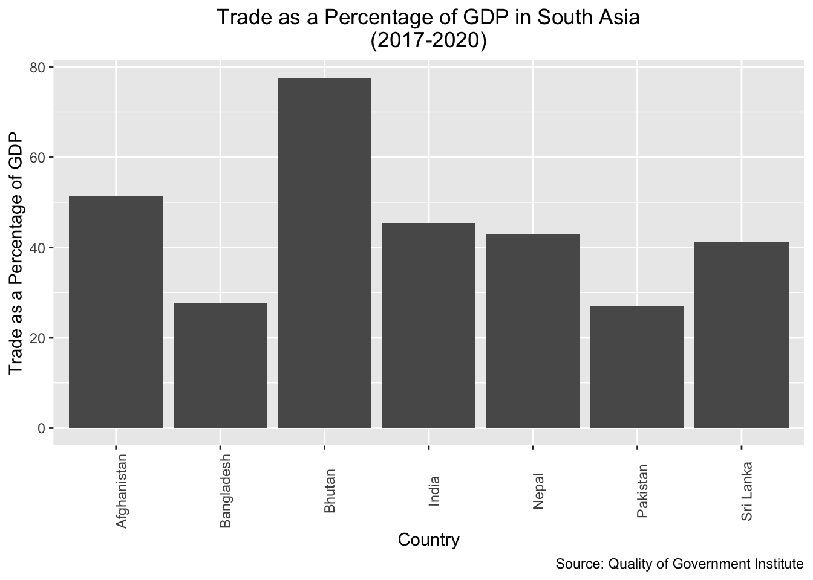
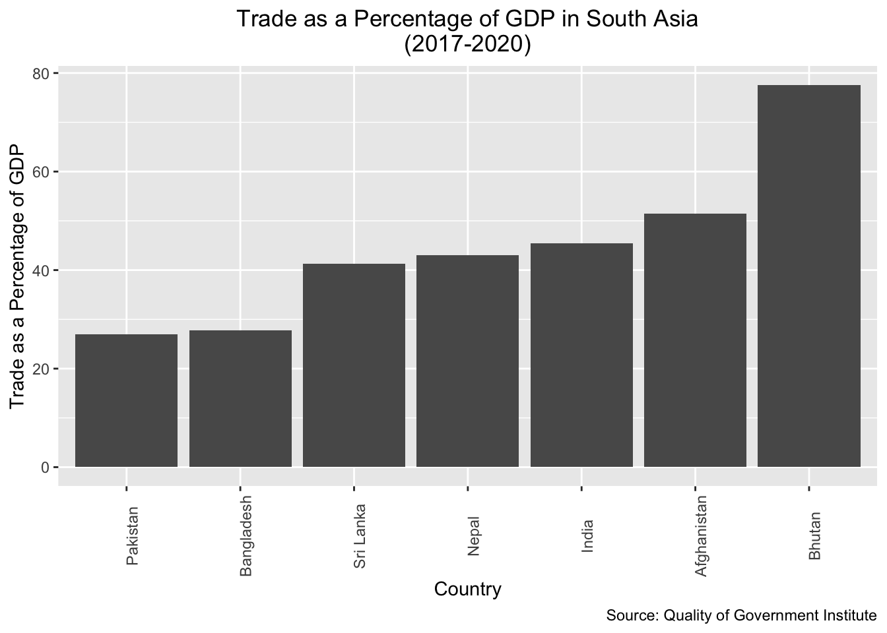
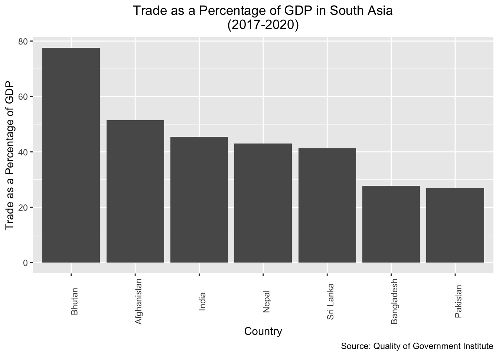
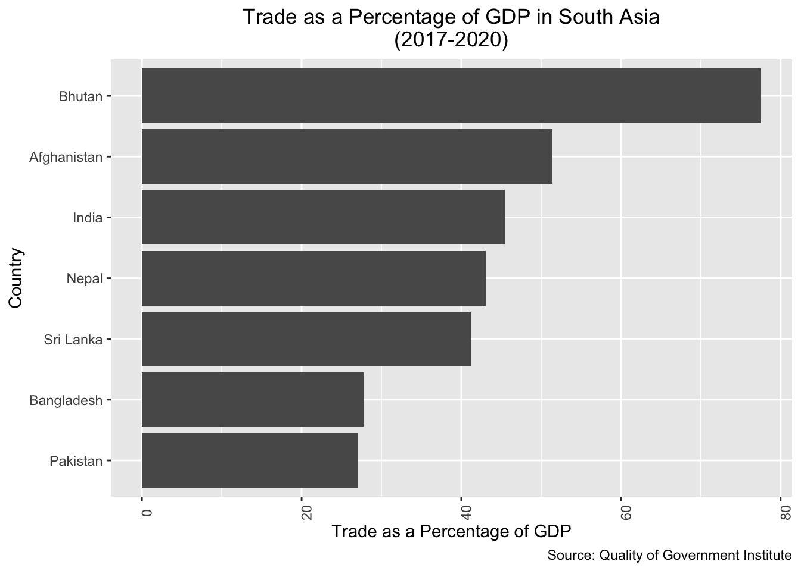
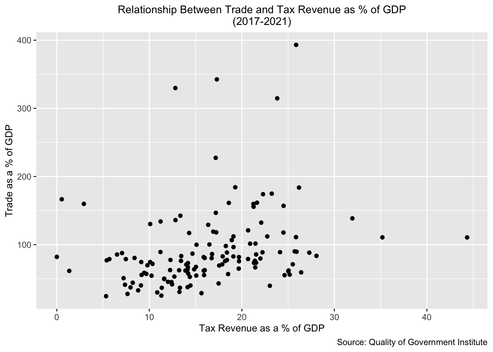
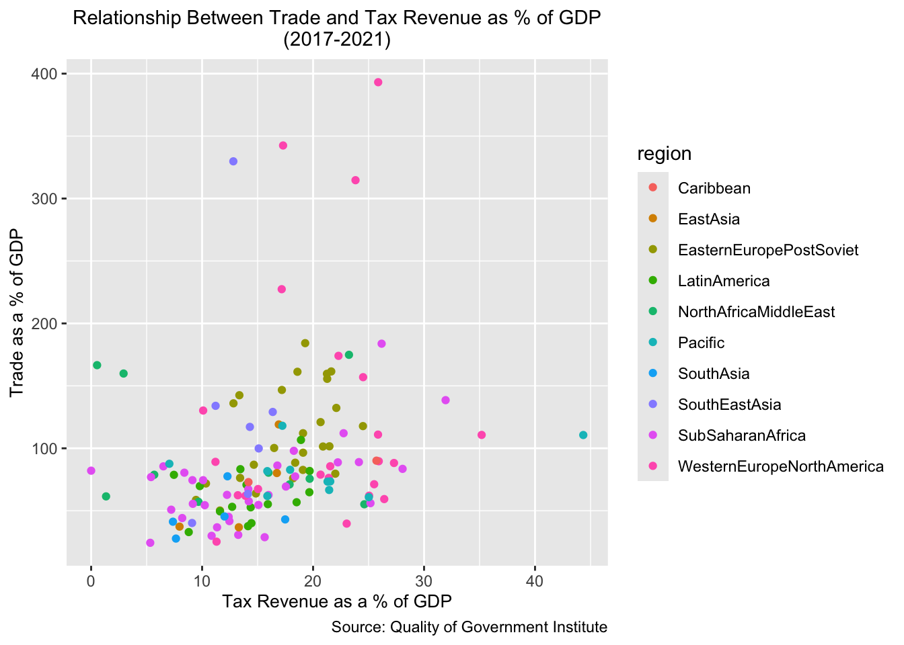
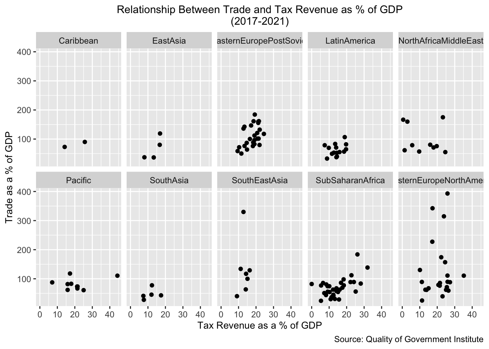
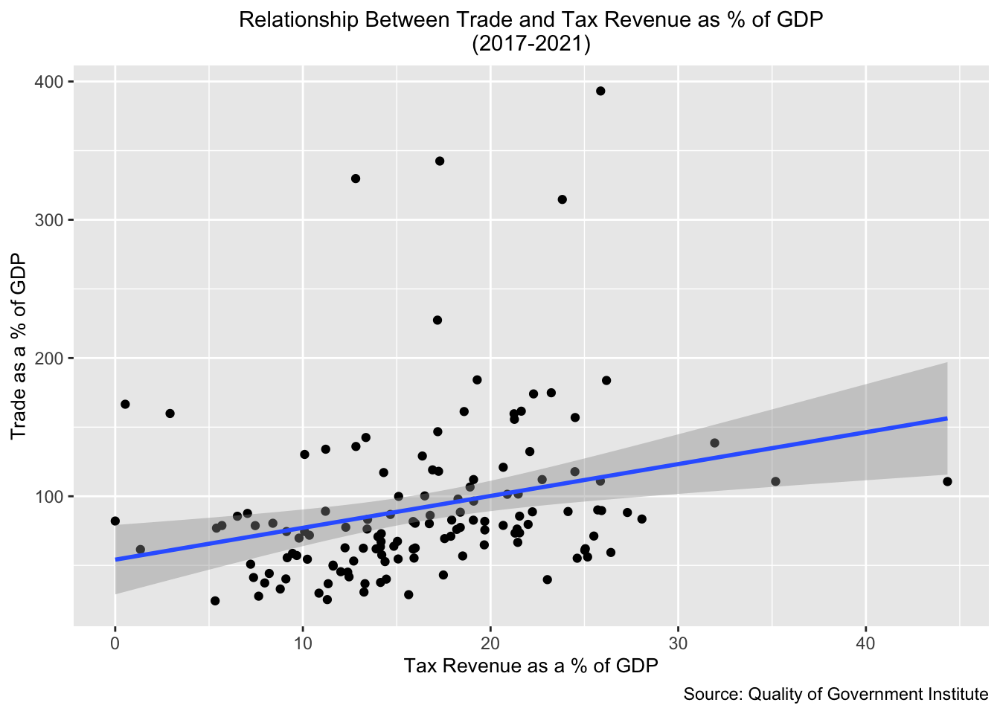

CRDDS Research Data Foundations Camp: Introduction to R
1 Introduction
This two-part workshop provides a general introduction to the R programming language, with a focus on carrying out common data-related tasks that come up in applied research across a variety of fields. It does not aim to provide a comprehensive overview of R’s capabilities, which are vast; rather, the workshop’s overarching goal is to help you cultivate basic proficiency in R, and develop a foundation for further exploration and self-study.
By the end of the workshop, you will be able to:
Navigate the R Studio development environment and install and load R packages (Section 2)
Explain and use basic features of the R language, such as object assignment and common data structures (such as vectors, lists, and data frames) to organize and store data (Section 3)
Write simple custom functions in R that take input(s) and return output(s), and apply functions iteratively to multiple values to streamline repetitive tasks (Section 4)
Perform fundamental data wrangling and processing tasks on real-world datasets (such as deleting or transforming variables, reshaping data, and combining multiple datasets) in preparation for analysis (Section 5)
Conduct basic data analysis and create visualizations in R to understand your data, and summarize and communicate insights to others (Section 6)
2 Preliminaries and Set-Up
Before proceeding, please take some time to get set up so that you can actively follow along with the lesson on your own computers. It is necessary to install R and R Studio (if you haven’t already), download the workshop data, and install relevant packages and load them into memory. The following sub-sections provide guidance on these tasks.
2.1 Install R and R Studio
If you haven’t already, please go ahead and install both the R and RStudio applications. R and RStudio must be installed separately; you should install R first, and then RStudio. The R application is a bare-bones computing environment that supports statistical computing using the R programming language; RStudio is a visually appealing, feature-rich, and user-friendly interface that allows users to interact with this environment in an intuitive way. Once you have both applications installed, you don’t need to open up R and RStudio separately; you only need to open and interact with RStudio (which will run R in the background).
Please follow these instructions to download R and R Studio; make sure you download the version of R appropriate for your operating system.
Once you’ve downloaded R and R Studio, go ahead and open R Studio, which will look something like this:
Don’t worry if your R Studio interface doesn’t look exactly like this; we would expect to see minor cosmetic differences in the appearance of the interface across operating systems and computers (based on how they’re configured). However, you should see four distinct windows within the larger RStudio interface:
- The top-left window is known as the Source window.
- The Source window is where we can write our R scripts (including the code associated with this tutorial), and execute those scripts. We can also type in R code into the “Console” window (bottom-left window), but it is preferable to write our code in a script within the source window. That’s because scripts can be saved (while code written into the console cannot); writing scripts therefore allows us to keep track of what we’re doing, and facilitates the reproducibility of our work. Note that in some cases, we may not see a Source window when we first open RStudio. In that case, to start a new script, simply click the
Filebutton on the RStudio menu bar, scroll down toNew Filebutton, and then selectR Scriptfrom the menu bar that opens up. - It’s also worth noting that the outputs of certain functions will appear in the Source window. In the context of our tutorial, when we want to view our datasets, we will use the
View()function, which will display the relevant data within a new tab in the Source window.
- The Source window is where we can write our R scripts (including the code associated with this tutorial), and execute those scripts. We can also type in R code into the “Console” window (bottom-left window), but it is preferable to write our code in a script within the source window. That’s because scripts can be saved (while code written into the console cannot); writing scripts therefore allows us to keep track of what we’re doing, and facilitates the reproducibility of our work. Note that in some cases, we may not see a Source window when we first open RStudio. In that case, to start a new script, simply click the
- The top-right window is the Environment/History pane of the RStudio interface.
- The “Environment” tab of this window provides information on the datasets we’ve loaded into RStudio, as well as objects we have defined (we’ll talk about objects more later in the tutorial). -The “History” tab of the window provides a record of the R commands we’ve run in a given session.
- The bottom-right window is the Files/Plots/Packages/Help/Viewer window.
- The “Files” tab displays our computer’s directories and file structures and allows us to navigate through them without having to leave the R environment.
- The “Plots” tab is the tab where we can view any visualizations that we create. Within the “Plots” tab, make note of the “Zoom” button, which we can use to enlarge the display of our visualizations if they’re too compressed in the “Plots” window. Also, note the “Export” button within the “Plots” tab (next to the “Zoom” button); we can use this button to export the displayed visualization to a .png or .jpeg file that can be used outside of RStudio.
- The “Packages” tab provides information on which packages have been installed, as well as which packages are currently loaded (more on packages below)
- The “Help” tab displays documentation for R packages and functions. If you want to know more about how a package or function work, we can simply type a “?” followed by the package or function’s name (no space between the question mark and the name) and relevant information will be displayed within the “Help” tab.
- The “Viewer” tab displays HTML output. If we write code that generates an HTML file, we can view it within the “Viewer” tab.
- The bottom-left window is the Console/Terminal/Jobs window.
- The “Console” tab is where we can see our code execute when we run our scripts, as well as certain outputs produced by those scripts. In addition, if there are any error or warning messages, they will be printed to the “Console” tab. We can also type code directly into the console, but as we noted earlier, it is better practice to write our code in a script and then run it from there.
- The “Terminal”, “Jobs” tabs are not relevant for our workshop. We’ll briefly provide an overview of “R Markdown” towards the end of the lesson.
2.2 Download Data and Workshop Materials
In this workshop, we’ll be working with a handful of real-world datasets. One of the datasets is a cross-national dataset published by the Quality of Government (QoG) Institute at the University of Gothenburg. The dataset (from January 2025) contains information on a variety of political, social, and economic variables from the early 2020s; additional documentation is available on the QoG’s website. In addition, we’ll work with several World Bank datasets downloaded from the World Development Indicators.
Though you can download these data directly from these sources, they are also available on the Workshop’s dedicated repository. Please download this repository to your computer by clicking the green “Code” button, and selecting the “Download ZIP” option. Alternatively, if you are already familiar with Github, you can also clone the repository via the command line. A third option is to download the repository directly by clicking the following link.
The data for the workshop is in the repository’s “data” folder, and we’ll read it into our R environment later in the lesson. The repository folder also contains other materials, which we’ll introduce as necessary over the course of the workshop. For now, please go ahead and open the downloaded repository (which will be a folder named “data_camp_R”, and double-click the file named “data_camp_r.Rproj”. When you open this .Rproj file, a new workshop-specific R Studio environment should open.
At this point, please open the “workshop_script_empty.R” file by clicking File and then Open File, and selecting that file by navigating to the downloaded workshop repository. You can follow along with the lesson by typing our workshop code into this script.
This script is pre-populated with “comments”; in R, comments are always preceded by a “#”, which ensures that any text that comes after it will indeed be interpreted as a comment, rather than as code that must be executed. Code comments are be an essential way of documenting our work by explaining code in simple human-readable language. These comments allow us to communicate with others who might read our code, as well as our future selves.
When you begin writing your own R scripts, you should comment your code as you go. The “workshop_script_empty.R” file, however, contains pre-written comments; as we proceed through the workshop, you can write the relevant code immediately below the appropriate comment (remember to periodically save your script as you go). Note that the workshop directory also contains a fully populated script, named “workshop_script_complete.R”, which contains both the comments and the code; you can use this completed script as a reference document, in case you get lost at any point.
2.3 Install and load packages
Functions are essentially programs that apply an algorithm that transforms input(s) into outputs; they are akin to recipes that specify how ingredients (inputs) are to be combined and processed to create a meal (the output). As we will see, many functions come pre-programmed into R. However, R’s native capabilities are significantly extended by a robust ecosystem of open-source user-written packages.
These R packages are essentially pre-written collections of functions organized around a given theme. One might think of packages as “cookbooks” of sorts, which contain a collection of different recipes (i.e. functions) united by some thematic thread. Packages are fundamentally a set of interrelated functions, but typically also contain other elements, such as data and documentation. One of the big advantages of using R is that it has a very large user community among social scientists, statisticians, and digital humanists, who frequently publish R packages, and thereby allow anyone who needs to accomplish the tasks to which the package addresses itself to use the package in the context of their own projects. The ability to use published packages considerably simplifies the work of applied data research using R; it means that we rarely have to write code entirely from scratch, and can build on the code that others have published in the form of packages. This allows applied researchers to focus on substantive problems, without having to get too bogged down in complicated programming tasks. Just as it is easier to make a meal with a cookbook (rather than deriving a recipe from scratch), it is easier to implement common data analysis tasks in R by using packages (rather than coding functions from scratch).
Over the course of the two-day workshop, we will use functions from a variety of packages:
The tidyverse, which is a suite of packages dedicated to various data analysis and visualization tasks
fastDummies, which makes it easy to transform categorical variables into binary indicator variables
psych, which (among other things) contains useful functions to generate tables of summary statistics
stargazer, which helps create publication-quality regression tables
To install a package in R, we can use the install.packages() function. In the code block below, the name of the package we want to install is enclosed within quotation marks and placed within parentheses after printing install.packages. Running the code below in your script will download the packages mentioned above to your computer. To run a code selection in an R script, you can highlight it and click the Run button in the R Studio menu bar. Alternatively, you can place the cursor on the line of code you’d like to run, and use a keyboard shortcut to run the code. On a Mac, the shortcut is clicking Command + Shift + Return. If you are using Windows, the keyboard shortcut to run the current line of code should be Ctrl + Enter.
# installs workshop packages
install.packages("tidyverse")
install.packages("fastDummies")
install.packages("psych")
install.packages("stargazer")
install.packages("janitor")If you would like a more efficient way to install packages, we can pass the package names as a vector to the install.packages() function. Vectors, which we will discuss further below, are created using the c() function (the “c” stands for “combine”):
# installs workshop packages by passing a vector of package names # to the "install.packages()" function
install.packages(c("tidyverse", "fastDummies", "psych", "stargazer", "janitor"))At this point, the packages should be installed on your computers, but the packages are not yet ready for use. Before we can use our packages, we must load them into our current R environment. The process of loading installed packages into a current R environment is akin to opening up an application on your phone or computer after it has been installed. That is, even after an application has been installed, you can’t use it until you open it. To load (i.e. “open”) an R package, we pass the name of the package(s) we want to load as an argument to the library() function. Below, we load the packages we have installed into memory:
# loads workshop packages into memory
library(tidyverse)
library(fastDummies)
library(psych)
library(stargazer)
library(janitor)At this point, these packages are loaded into memory and available for us to use. One important thing to note regarding the installation and loading of packages is that we typically only have to install packages once; after a package is installed, there is usually no need to subsequently reinstall it, so long as you don’t make major changes to your R or R Studio applications. However, we must load the packages we need (using the library() function) every time we open a new R session. In other words, if we were to close RStudio at this point and open it up later, we would not need to install these packages again, but would need to load them into memory using the library() function again.
3 The R Language
Our goal in this section is to learn some important principles and features of the R programming language; we won’t attempt a comprehensive survey of the R programming language, but rather, emphasize key elements that will help you move quickly into applied data-based research. As you use R in your own research, you will inevitably learn more about the language itself.
We will discuss R as a calculator, and the concept of object assignment, but will spend most of our time learning about three fundamental data structures that you will use all the time when working on data-based research projects in R: vectors, data frames, and lists.
3.1 R as a calculator
At its most basic level, R can be used as a calculator. For instance:
# calculates 2+2
2+2[1] 4Now, let’s try some more mathematical operations:
# calculates 65 to the power of 4
65^4[1] 17850625# calculates the sum of 24 and 4, divided by 7
(24+4)/7[1] 4# calculates 2.78 subtracted from 10.453
10.453-2.78[1] 7.673While this is a useful and logical starting point, the possibility of assigning values to objects (or variables) considerably increases the scope of the operations we are able to carry out. We turn to object assignment in the next sub-section.
3.2 Objects and Object Assignment
The concept of object (or variable) assignment is a fundamental concept when working in a scripting environment; indeed, the ability to easily assign values to objects is what allows us to easily and intuitively manipulate and process our data in a programmatic setting. To better understand the mechanics of object assignment, consider the following:
# assign value 5 to new object named x
x <- 5In the code above, we use R’s assignment operator, <- (i.e. a left-pointing arrow) to assign the value 5 to an object named x. Now that an object named x has been created and assigned the value 5, printing x in our console (or printing x in our script and running it) will return the value that has been assigned to the x object, i.e. 5:
# prints value assigned to "x"
x[1] 5More generally, the process of assignment effectively equates the output created by the code on the right side of the assignment operator (<-) to an object with a name that is specified on the left side of the assignment operator. Whenever we want to look at the contents assigned to an object (i.e. the output created by the code to the right side of the assignment operator), we simply print the name of the object in the R console (or print the name and run it within a script).
Let’s create another object, named y, and assign it the value “12”:
# assign value 12 to new object named y
y <- 12As we noted above, we can print the value that was assigned to y by printing the name of the object:
# prints value assigned to "y"
y[1] 12Once objects are defined, it’s possible to use those objects in arithmetic operations. For example:
Once objects are defined, it’s possible to use those objects in arithmetic operations. For example:
# prints the value of x + y
x+y[1] 17It’s also possible to use existing objects to assign values to new ones. For example, we can assign the sum of x and y to a new object that we’ll name xy_sum:
# creates a new object, named "xy_sum" whose value is the sum of "x" and "y"
xy_sum <- x+yNow, let’s print the value of xy_sumthat was created by the previous assignment operation:
# prints value of of "xy_sum"
xy_sum[1] 17As expected, we see that the value assigned to xy_sum is “17” (i.e. the sum of the values assigned to x and y).
Thus far, we’ve been working with numeric values, but it’s also possible to assign non-numeric contents to objects. For example, we can assign strings (i.e. lines of text) to objects. Below, consider the string “Boulder, CO” assigned to an object named our_location:
# assigns string "Boulder, CO" to object named "our_location"
our_location <- "Boulder, CO"We can print the string that has been assigned to the our_location object by typing the name of the object in our console, or running it from our script:
# prints contents assigned to "our_location" object
our_location[1] "Boulder, CO"While these examples are very simple, we can assign virtually any R code, and by extension, the data structure(s) generated by that code (such as datasets, vectors, graphs/plots, functions etc.) to an R object. When naming your objects, try to be descriptive, so that the name of the object signifies something about the code or outputs assigned to it.
When it comes to naming objects we have a lot of flexibility, but there are certain rules. For example:
Object names must start with a letter, and cannot contain any special symbols (they can only contain letters, numbers, underscores, and periods).
Object names cannot contain multiple unconnected words; if you’d like to use multiple words or phrases, connect the discrete elements with an underscore (
_), or use camel case (where different words are distinguished by beginning each discrete word with a capitalized letter).There are certain words that are “reserved” for other purposes, and therefore cannot be used in object names (i.e.
if,else,TRUE,FALSE, etc).
It is also worth emphasizing that object names are case sensitive; in order to print the contents assigned to an object, that object’s name must be printed exactly as it was created. For example, if we were to type our_Location, we would get an error, since there is no our_Location object (only an our_location object):
# prints contents of "our_Location"; demonstrates case-sensitivity
our_LocationError:
! object 'our_Location' not foundIn order to keep track of the objects we have created, we can use the handy ls() function, which will print the names of all the objects that are in memory:
# prints objects in memory
ls()[1] "our_location" "x" "xy_sum" "y" To delete an object from memory, youwecan pass it to the rm() function. For example, the following will delete the our_location object from memory:
# deletes "our_location" object from memory
rm(our_location)Now, we can confirm that the our_location object has indeed been deleted by running ls() once again:
# prints objects in memory
ls()[1] "x" "xy_sum" "y" 3.3 Data Structures
We now turn to a brief overview of some important data structures that help us to work with data in R. We will consider three data structures for organizing and storing data that are particularly useful: vectors, data frames, and lists. Note that this is not an exhaustive treatment of data structures in R; there are other structures, such as matrices and arrays, that are also important, and which you may encounter or use in your future work. However, for now, we will limit our discussion to vectors, data frames, and lists, since they are the data structures that are essential for getting started with applied research in R, and the data structures that you will likely use most frequently.
3.3.1 Vectors
In R, a vector is a sequence of values of the same type (i.e. we can have a sequence of numbers or a sequence of strings, but cannot mix and match types in a vector).
A vector is created using the c() (combine) function, which is programmed into base R (i.e. it’s not from an external package). For example, let’s make a vector of numeric values, which we will take to represent the temperatures (in Celsius) of some cities in Asia. The c() function takes as its input a series of numbers, and returns as its output a numeric vector with those numbers as elements:
# makes vector with values 32, 18, 41, 11
c(32, 18, 41, 11)[1] 32 18 41 11Recall that we can assign vectors to objects with descriptive names. Let’s create a new vector object named asia_temperatures_celsius to store these values:
# assigns vector of temperatures from Asian cities to a new object named "asia_temperatures_celsius"
asia_temperatures_celsius<-c(32, 18, 41, 11)Now, whenever we want to print the vector assigned to the asia_temperatures_celsius object, we can simply print the name of the object:
# prints contents of "asia_temperatures_celsius"
asia_temperatures_celsius[1] 32 18 41 11Though we have focused so far on numeric vectors (i.e. vectors where the elements are numbers), it is also possible to create vectors where the elements are strings (i.e. text). For example, let’s create a vector that contains the names of cities that have a University of Colorado campus, and assign it to an object named university_of_colorado_locations
# defines new vector assigned to object named "university_of_colorado_locations" that contains locations of CU campuses
university_of_colorado_locations<-c("Boulder", "Denver", "Colorado Springs")Now let’s print out its contents:
# prints contents of "university_of_colorado_locations"
university_of_colorado_locations[1] "Boulder" "Denver" "Colorado Springs"It is often helpful to add text labels to vectors (particularly numeric vectors), which can provide important context that helps us to keep track of the information stored within a vector. Let’s return to the asia_temperatures_celsius vector we created above and imagine that the first element in the vector represents the temperature for Mumbai; the second element represents the temperature in Hanoi; the third represents the temperature in Singapore; and the fourth represents the temperature in Beijing. We can country labels to asia_temperatures_celsius with the following:
# assigns labels to temperatures values in "asia_temperatures_celsius"
names(asia_temperatures_celsius)<-c("Mumbai", "Hanoi", "Singapore", "Beijing")Now, let’s view the contents of asia_temperatures_celsius, and note that the numeric values are labelled:
# prints "asia_temperatures_celsius" (note labels)
asia_temperatures_celsius Mumbai Hanoi Singapore Beijing
32 18 41 11 Alternatively, it’s also possible to use “inline” naming, in which vector elements are labelled as the vector is created. Below, we create a vector of temperatures in some major North American cities in Celsius using inline naming:
# creates new vector of temperatures in Celsius of major North American cities with labels created using inline naming
north_america_temperatures_celsius<-c("New York City"=25, "Toronto"=15, "Mexico City"=8.5, "Vancouver"=10, "Boston"=12.5)Let’s print the contents of the newly created north_america_temperatures_celsius vector:
# prints contents of "north_america_temperatures_celsius"
north_america_temperatures_celsiusNew York City Toronto Mexico City Vancouver Boston
25.0 15.0 8.5 10.0 12.5 In many cases, it is useful to subset a vector, and extract specific element(s) from it. Each element in a given vector is assigned an index number, starting with 1; that is, the first element in a vector is assigned an index value of 1, the second element of a vector is assigned an index value of 2, and so on. We can use these index values to extract our desired vector elements. In particular, we can specify the desired index within square brackets after printing the name of the vector object of interest. For example, let’s say we want to extract the 3rd element of the vector in asia_temperature_difference_celsius. We can do so with the following, which returns the temperature value for Singapore, the third element in asia_temperature_difference_celsius:
# Extracts the third element from the "asia_temperatures_celsius" vector
asia_temperatures_celsius[3]Singapore
41 In some cases, we may want to extract more than one vector element. We can conveniently extract a range of vector elements using their index values. For example, let’s say we want to extract a new vector comprised of the first, second, and third numeric elements in asia_temperatures_celsius; we can do so with the following:
# Extracts elements 1 through 3 in the "asia_temperatures_celsius" and deposits these elements in a new vector
asia_temperatures_celsius[1:3] Mumbai Hanoi Singapore
32 18 41 Sometimes, we may want to subset our vectors by referencing non-consecutive elements. For example, instead of extracting the first through third elements of the asia_temperatures_celsius vector, perhaps we only want to extract the first and third elements, without also extracting the second. Intuitively, we could try the following:
# tries to extract the first and third elements from "asia_temperatures_celsius" and deposit them into a new vector
asia_temperatures_celsius[1,3]Error in `asia_temperatures_celsius[1, 3]`:
! incorrect number of dimensionsHowever, as you can see, this syntax throws an error. Instead, if we want to extract non-continuous elements from a vector, we have to pass the index numbers into their own vector, and enclose this vector of index numbers in square brackets. For example, to extract only the first and third elements from asia_temperatures_celsius, we would pass the index numbers of the elements we want to extract as a vector to the square brackets:
# extracts the first and third elements from "asia_temperatures_celsius" and deposits them into a new vector
asia_temperatures_celsius[c(1,3)] Mumbai Singapore
32 41 We can also use negative index numbers to subset vectors; in particular, while passing a positive index number will extract the vector element that corresponds with that number and creates a new vector with that subsetted element, passing a negative index number will return a vector that deletes the element that corresponds to the the absolute value of the negative index number. For example, the following removes the temperature associated with Hanoi (the second element in asia_temperatures_celsius) and returns a new vector with the remaining temperatures:
# removes second element in "asia_temperatures_celsius" vector and returns a vector with the remaining values
asia_temperatures_celsius[-2] Mumbai Singapore Beijing
32 41 11 When working with labelled vectors, it’s also possible to extract desired element(s) with the label, rather than the index number. For example, instead of extracting Singapore’s temperature with its corresponding index value of three, we can do so with the city label enclosed in quotation marks:
# Extracts the third element from the "asia_temperatures_celsius" vector using its label
asia_temperatures_celsius["Singapore"]Singapore
41 One of R’s most useful features (which makes it especially powerful and intuitive in the context of data analysis), is that it is designed to perform operations on entire vectors without the need for loops (a programming construct used to perform operations across multiple elements). A scalar operation applies one operation to all the elements of a vector. For example, let’s say that something went wrong in the transcription of temperatures, and all of the temperatures in asia_temperatures_celsius are understated by two degrees. We can add two to each element in the asia_temperatures_celsius vector, and thereby fix the error, with the following scalar operation:
# adds two to each element of "asia_temperatures_celsius" vector
asia_temperatures_celsius+2 Mumbai Hanoi Singapore Beijing
34 20 43 13 Of course, the above operation did not permanently add two to all of the elements in asia_temperatures_celsius, since we did not overwrite the existing vector by assigning the changes back to the object. We can do so with the following:
# adds two to each element of "asia_temperatures_celsius" vector and assigns the changes back to the object
asia_temperatures_celsius<-asia_temperatures_celsius+2In element-wise operations, arithmetic operations are carried out with more than one vector (i.e. adding two vectors together). For example, let’s first create two toy vectors, a and b:
# creates two new vectors assigned to objects "a" and "b"
a<-c(5,6,22)
b<-c(7,12,3)Now, if we add these two vectors together, the resulting vector will look as follows:
# adds vectors a and b
a+b[1] 12 18 25That is, the first element of the resulting vector is the sum of the first elements in a and b; the second element is the sum of the second elements of a and b; and so on.
Element-wise operations are straightforward when vectors are of equal length. What happens when vectors are of unequal length? Consider the following example, where we have two vectors, c and d, of unequal length:
# creates two new vectors, "a" and "b" of unequal length
c<-c(3,5,7)
d<-c(6,12,3,5)When we add the two vectors, the resulting vector looks as follows:
# adds vectors c and d
c+dWarning in c + d: longer object length is not a multiple of shorter object
length[1] 9 17 10 8The first three element-wise operations are straightforward: 3+6=9, 5+12=17, and 7+3=10. However, c does not have a fourth element, but d does; how is this handled? In short, the shorter vector is “recycled” (i.e. repeated) to match the length of the longer one. In this case, once we hit the end of c the recycling process goes back to the beginning, takes the element “3”, and uses it as the fourth element in the vector, which can be added to the fourth element of d to yield “8” as the fourth element in the resultant c+d vector.
Let’s now slightly tweak this scenario by adding another element, “6”, to vector d :
# adds 6 as 5th element of "d"
d<-c(d, 6)Vector d now contains five elements:
# prints updated vector d
d[1] 6 12 3 5 6What do you think happens when we carry out c+d now? In particular, what do you think are the fourth and fifth elements of a+b? The principle of vector recycling suggests that the fourth element will be 8 (3+5), while the fifth element will be 11 (5+6):
# prints c+d
c+dWarning in c + d: longer object length is not a multiple of shorter object
length[1] 9 17 10 8 11Being aware of this property of vectors in R can be helpful in troubleshooting errors or unexpected behavior once you’re working with real-world data in R.
Finally, it’s important to note that it’s also possible to carry out vectorized operations on character vectors that are somewhat analogous to the mathematical operations carried out on numeric vectors. To illustrate one useful example, let’s first create two new character vectors:
# creates vector of university names
university_names<-c("University of Colorado, ", "Colorado State University, ")
# creates vector of locations
locations<-c("Boulder", "Fort Collins")Now, we’ll use the paste() function to carry out an element-wise concatenation of the strings in these two vectors; we’ll assign the resulting vector of concatenated strings to a new object named university_name_location:
# uses paste0 function to paste the strings in "university_names" and "locations" together in element-wise fashion and assign the resulting character vector to "university_name_location"
university_name_location<-paste0(university_names, locations)Let’s go ahead and print the contents of university_name_location:
# prints contents of "university_name_location"
university_name_location[1] "University of Colorado, Boulder"
[2] "Colorado State University, Fort Collins"Vectorized operations with the paste0() can be very useful in creating names for objects and file names when working in applied settings, as we will see later in the workshop.
3.3.2 Data Frames
The data frame structure is the workhorse of data analysis in R. A data frame resembles a table, of the sort you might generate in a spreadsheet application.
Often, the most important (and arduous) step in a data analysis workflow is to assemble disparate strands of data into a tractable data frame. What does it mean for a data frame to be “tractable”? One way to define this concept more precisely is to appeal to the concept of “tidy” data, which is often referenced in the data science world. Broadly speaking, a “tidy” data frame is a table in which:
Each variable has its own column
Each observation has its own row
Each value has its own cell
We will work extensively with data frames later in the workshop, but let’s generate a toy data frame from scratch, and assign it to a new object. We will generate a data frame containing made up country-level data on basic economic, geographic, and demographic variables, and assign it to a new object named country_df. The data frame is created through the use of the data.frame() function, which has already been programmed into R. Column names and the corresponding column values are passed to the data.frame() function in the manner below, and the function effectively binds these different columns together into a table:
# Creates a toy country-level data frame
country_df<-data.frame(Country=c("Country A", "Country B", "Country C"),
GDP=c(8000, 30000, 23500),
Population=c(2000, 5400, 10000),
Continent=c("South America", "Europe", "North America"))To observe the structure of the table, we can print it to the R console by simply printing the name of the object to which it has been assigned:
# prints "country_df" data frame to console
country_df Country GDP Population Continent
1 Country A 8000 2000 South America
2 Country B 30000 5400 Europe
3 Country C 23500 10000 North AmericaOne nice feature of R Studio is that instead of simply printing our data frames into the console, we can view a nicely formatted version of our data frame by passing the name of the data frame object through the View() function. For example, the code below will bring up the country_df data frame as a new tab in R Studio:
# pulls up "country_df" data frame in R Studio data viewer
View(country_df)Note the “tidy” features of this simple data frame:
Each of the variables (i.e. GDP, Population, Continent) has its own column
Each of the (country-level) observations has its own row
Each of the values (i.e. country-level information about a given variable) has its own distinct cell
Let’s now turn to a brief exploration of how to extract rows and columns from a data frame, using principles of indexing similar to what we learned in the context of working with vectors. Since data frames are the workhorse of social scientific research in R, we’ll spend considerably more time on data frames in future lessons; for now, we just want to get acquainted with some basic base R syntax that allows us to get started.
Unlike vectors, data frames are two dimensional; that is, they have both rows and columns. Both rows and columns are assigned index numbers; the convention is to refer to the index number of rows first, followed by the index number for columns. We can reference index numbers within square brackets to extract rows, columns, or observations from a data frame.
For example, the following extracts the first row of country_df and all columns:
# extracts entire first row and all colums from "country_df"
country_df[1, ] Country GDP Population Continent
1 Country A 8000 2000 South AmericaAlternatively, if we want to extract a specific column along with all rows, we leave the row index blank, and specify the index of the column we want to extract. For example, the following extracts the entire third column:
# extracts entire third column and all frows from "country_df"
country_df[, 3][1] 2000 5400 10000We can extract a cell by specifying both a row and column index. For example, the following extracts the population of Country B:
# extracts population of Country B
country_df[2, 3][1] 5400It is also possible to extract multiple columns and rows. If we want to extract consecutive columns/rows, we can simply separate the starting and ending index values for the desired rows or columns with a colon. For example, the following extracts the second through third rows from country_df:
# extracts second and third rows from "country_df"
country_df[2:3, ] Country GDP Population Continent
2 Country B 30000 5400 Europe
3 Country C 23500 10000 North AmericaThe following extracts the second through third columns:
# extracts second and third columns from "country_df"
country_df[, 2:3] GDP Population
1 8000 2000
2 30000 5400
3 23500 10000To extract non-consecutive rows/columns, we specify the relevant index numbers within a vector. For example, the following extracts rows 1 and 3 from country_df:
# extracts first and third rows from "country_df"
country_df[c(1,3), ] Country GDP Population Continent
1 Country A 8000 2000 South America
3 Country C 23500 10000 North AmericaThe following extracts columns 1 and 3 from country_df:
# extracts first and third columns from "country_df"
country_df[, c(1,3)] Country Population
1 Country A 2000
2 Country B 5400
3 Country C 10000We can combine these rules in flexible ways to extract the precise data we’re interested in. For example, the following extracts the first and second rows, and the first, second, and fourth columns, from country_df, and assigns the subsetted data frame to a new object named dataset_selection:
# extracts the first and second rows, and first, second, and fourth columns from "country_df"; assigns resulting data frame to a new object named "dataset_selection"
dataset_selection<-country_df[1:2, c(1,2,4)]When we print dataset_selection, it looks as expected:
# prints "dataset_selection"
dataset_selection Country GDP Continent
1 Country A 8000 South America
2 Country B 30000 EuropeBefore proceeding, it’s worth noting a convenient way to extract columns from a data frame, which we will often encounter when working with R. In particular, we can extract a column from a data frame by typing the name of the data frame object, followed by the dollar sign ($), followed by the name of the column we want to extract. For example, let’s say we want to extract the “Continent” column from country_df:
# extracts "Continent" column from "country_df" using dollar sign notation
country_df$Continent[1] "South America" "Europe" "North America"The columns that comprise data frames are vectors, so when we extract a column, the resulting object is a vector. We will confirm this below, when we discuss the concept of data classes, which are closely related to data structures.
3.3.3 Lists
In R, a list is a data structure that allows us to conveniently store a variety of different objects, of various types. For example, we can use a list to vectors, data frames, visualizations and graphs–basically any R object you can think of! It is also possible to store a list within a list.
Lists allow us to keep track of the various objects we create, and are therefore a useful data management tool. In addition, lists are very helpful to use when we want to perform iterative operations across multiple objects.
We can create lists in R using the list() function; the arguments to this function are the objects that we want to include in the list. In the code below, we’ll create a list (assigned to an object named example_list) using the list() function. It contains some of the objects we create earlier in the lesson: the numeric asia_temperatures_fahrenheit vector, the university_name_location character vector, the country_df data frame, and the selection from country_df, dataset_selection, which is also a data frame.
# creates list whose elements are the "asia_temperatures_celsius" numeric vector, the "university_name_location" character vector, and the "country_df" and "dataset_selection" data frames, and assigns it to a new object named "example_list"
example_list<-list(asia_temperatures_celsius, university_name_location, country_df, dataset_selection)Now that we’ve created our list object, let’s print out its contents:
# prints contents of "example_list"
example_list[[1]]
Mumbai Hanoi Singapore Beijing
34 20 43 13
[[2]]
[1] "University of Colorado, Boulder"
[2] "Colorado State University, Fort Collins"
[[3]]
Country GDP Population Continent
1 Country A 8000 2000 South America
2 Country B 30000 5400 Europe
3 Country C 23500 10000 North America
[[4]]
Country GDP Continent
1 Country A 8000 South America
2 Country B 30000 EuropeAs you can see, our list contains each of the various specified objects within a single, unified structure. We can access specific elements within a list using the specific index number of the desired element, in much the same way we did for vectors. When extracting a single list element from a list, the convention is to enclose the index number of the desired list element in double square brackets. For example, if we want to extract the country-level data frame from example_list, we can use the following:
# extracts third element from "example_list"
example_list[[3]] Country GDP Population Continent
1 Country A 8000 2000 South America
2 Country B 30000 5400 Europe
3 Country C 23500 10000 North AmericaIf we want to subset a list, and extract more than one list element as a separate list, we can do so by creating a vector of the index values of the desired elements, and enclosing it in single brackets after the name of the list object. For example, if we wanted to generate a new list that contained only the first and third elements of example_list (the numeric vector of arbitrary values and the data frame), we would use the following syntax:
# extracts first and third elements from "example_list"
example_list[c(1,3)][[1]]
Mumbai Hanoi Singapore Beijing
34 20 43 13
[[2]]
Country GDP Population Continent
1 Country A 8000 2000 South America
2 Country B 30000 5400 Europe
3 Country C 23500 10000 North AmericaIf, instead, we want to extract consecutive elements, we don’t have to use a vector; we can simply specify the starting and ending index values, separated by a colon. For example, the following extracts the first through third elements from example_list:
# extracts first through third elements from "example_list"
example_list[1:3][[1]]
Mumbai Hanoi Singapore Beijing
34 20 43 13
[[2]]
[1] "University of Colorado, Boulder"
[2] "Colorado State University, Fort Collins"
[[3]]
Country GDP Population Continent
1 Country A 8000 2000 South America
2 Country B 30000 5400 Europe
3 Country C 23500 10000 North AmericaWhile list elements are not automatically named, we can name our list element using the names()function. The first step is to define a character vector of desired names. We can specify any names we’d like but for the sake of illustration, let’s say we want to name the first list element “element1”, the second list element “element2”, and so on. Let’s create a vector of our desired names, and assign it to an object named name_vector:
# creates a character vector of desired names for list elements, and assigns it to a new object named "name_vector"
name_vector_list<-c("element1", "element2", "element3", "element4")Now, we’ll assign these names in name_vector to the list elements in example_list with the following:
# assigns names from "name_vector" to list elements in "example_list"
names(example_list)<-name_vector_listLet’s now print the contents of example_list:
# prints contents of "example_list"
example_list$element1
Mumbai Hanoi Singapore Beijing
34 20 43 13
$element2
[1] "University of Colorado, Boulder"
[2] "Colorado State University, Fort Collins"
$element3
Country GDP Population Continent
1 Country A 8000 2000 South America
2 Country B 30000 5400 Europe
3 Country C 23500 10000 North America
$element4
Country GDP Continent
1 Country A 8000 South America
2 Country B 30000 EuropeNote that the list elements now have names attached to them; the first character string in name_vectoris assigned as the name of the first element in example_list, the second character string in name_vector is assigned as the name of the second element in example_list, and so on.
Practically speaking, we can now extract list elements using the assigned names. For example, if we want to extract the data frame from example_list, we could do so by its assigned name (“element3”), as follows:
# Extracts the data frame from "example_list" by its assigned name
example_list[["element3"]] Country GDP Population Continent
1 Country A 8000 2000 South America
2 Country B 30000 5400 Europe
3 Country C 23500 10000 North AmericaNote that even after assigning names to list elements, you can still extract elements by their index value, if you would prefer to do so:
# Extracts the "element3" data frame from "example_list" by its index number
example_list[[3]] Country GDP Population Continent
1 Country A 8000 2000 South America
2 Country B 30000 5400 Europe
3 Country C 23500 10000 North AmericaFinally, it’s worth noting that we can also use inline labeling to name list elements (as we did for vectors above).
3.4 Data Classes
We’re done with our tour of three fundamental data structures in R, which we will repeatedly use in our work as applied social scientists: vectors, data frames, and lists. Data structures are essentially containers for storing and organizing data in well-defined and organized ways, and R functions interact with object differently based on their underlying structure. An object’s “class” provides additional information about how it behaves. The class of an object generally corresponds to the object’s data structure (for example, the “data.frame” class is often associated with the data frame data structure), but the class of an object can also extend functionality, and customize how an object interacts with R. For example, “tibbles” are a type of enhanced data frame that are used in the tidyverse, and tibbles have the class “tbl_df”
We can retrieve the class of an object (i.e. extract information about whether an object behaves as a data frame, vector, list, or some other structure) by passing the name of the object as an argument to the class() function. For example, let’s say we want to confirm the class of example_list:
# prints class of "example_list"
class(example_list)[1] "list"As expected, example_list belongs to the class “list”.
Let’s consider another:
# prints class of "asia_temperatures_fahrenheit"
class(asia_temperatures_celsius)[1] "numeric"As expected, given how we created it, asia_temperatures_celsius is of the class “numeric”, i.e. a numeric vector.
Let’s retrieve the class of country_df:
# prints class of "country_df"
class(country_df)[1] "data.frame"Sometimes, we will need to transform objects into a different class than the one they are currently assigned. For example, let’s say that a function we’d like to use can take a data frame input, but doesn’t accept vector inputs. In that case, if our data is stored as a numeric vector, we must convert the object to a data frame before passing it to the desired function. Let’s say the numeric vector data we want to convert to a data frame is asia_temperatures_celsius. We can do so by passing it to the as.data.frame() function which converts objects of different classes to the “data.frame” class. We’ll assign the data frame version of asia_temperatures_celsius to a new object named asia_temperatures_df and print its contents:
# converts "asia_temperatures_celsius" to data frame class and assigns the data frame to a new object named "asia_temperatures_df"
asia_temperatures_df<-as.data.frame(asia_temperatures_celsius)
# prints contents of "asia_temperatures_df"
asia_temperatures_df asia_temperatures_celsius
Mumbai 34
Hanoi 20
Singapore 43
Beijing 13We can confirm the new class of asia_temperatures_df with the following:
# prints class of "asia_temperatures_df"
class(asia_temperatures_df)[1] "data.frame"We could carry out the inverse operation (i.e. transforming an object of the “data.frame” class to an object of class “numeric”) by passing the data frame object to the as.numeric() function. There are several functions that allow for class transformations such as this. Classes may feel confusing now, but they will become more intuitive as you work in R. They are important to be aware of, especially in the context of trouble shooting and debugging, since functions often don’t work as expected when they expect arguments of one class but receive another.
3.5 Exercises
Exercise 3a
Consider the following vector of Fahrenheit temperature values:
# creates vector of Fahrenheit temperature values in Colorado
fahrenheit_colorado <- c(33, 15, 22, 44)The first temperature is associated with Boulder; the second with Fort Collins; the third with Denver; and the fourth with Colorado Springs. Assign cities as labels to the temperature values with which they’re associated, and update fahrenheit_colorado with these changes.
Exercise 3b
Transform the class of fahrenheit_colorado to a data frame and assign it to a new object named fahrenheit_colorado_df:
Exercise 3c
What is the class of the “Continent” column in country_df?
Exercise 3d
Extract the first three rows, and columns 1 and 3, of country_df and assign this subsetted data frame to a new object named country_df_subsettedA. View it in the R Studio data viewer.
Exercise 3e
Extract the cell that contains the continent of Country B.
Exercise 3f
Deposit country_df and fahrenheit_colorado into a list named exercise_list and label the list elements using inline labeling:
4 Functions and Iteration
Given the enormous variety and sophistication of the R package ecosystem, you will not have to become an expert programmer to work with data in R; rather, you can draw on the functions others have written to implement virtually any data-related task you could imagine. However, developing a basic understanding of how to write your own functions is nevertheless important, for a variety of reasons:
- Sometimes, there won’t be a convenient pre-programmed function available to accomplish a given task, which will require you to write your own custom function.
- Writing your own functions will allow you to automate your workflows
- Writing functions will allow you to write more concise and readable code.
With those considerations in mind, learn a little bit about how to write some simple functions of our own. We’ll also learn more about how to use functions from the purrr package (part of the tidyverse suite) to iteratively cycle multiple input values through our functions, which can help to automate various data processing workflows. In other words, iteration is the process of sequentially applying a function to multiple inputs (typically contained in a vector, list, or data frame); it is a key part of functional programming that can save you enormous amounts of time and energy.
4.1 Custom Functions
The best way to learn how functions (whether those in base R, or from external packages) work is to develop our own. To that end, we’ll now learn how to write some simple functions, and develop some intuition for how they are put together. Writing your own functions can be challenging, so we’ll develop our intuition by starting with a very simple example. In particular, we begin by writing a one-argument function, before turning to writing a two-argument function. It is straightforward to generalize these cases to the process of writing functions with more than two inputs, and you are encouraged to attempt this as an exercise.
4.1.1 Single-input functions
Let’s say we have a large collection of temperature data, measured in Fahrenheit, and we want to convert these data to Celsius. Recall that the formula to convert from Fahrenheit to Celsius is the following, where “C” represents temperature in Celsius, and “F” represents temperature in Fahrenheit:
# fahrenheit to Celsius formula, where C is Celsius output and F is Fahrenheit input
(F-32)*(5/9)=CAs we discussed before, at its most basic level, R is a calculator; if for example, one of our Fahrenheit measurements is 55 degrees; we can convert this to Celsius by plugging 55 into the conversion formula:
# Converts 55 degrees fahrenheit to Celsius
(55-32)*(5/9)[1] 12.77778This is easy enough, but if we have a large amount of temperature data that requires processing, we wouldn’t want to carry out this calculation for each measurement in our data collection. The first step in allowing us to carry out this conversion operation at scale is to write a function. Let’s see how we can wrap the Fahrenheit-Celsius formula above into a function:
# creates fahrenheit to celsius conversion function and assigns it to a new object named "fahrenheit_to_celsius_converter"
fahrenheit_to_celsius_converter<-function(fahrenheit_input){
celsius_output<-(fahrenheit_input-32)*5/9
return(celsius_output)
}Let’s unpack the code above, which we used to create our function:
We declare that we are creating a new function with the word
function; within the parenthesis afterfunction, we specify the function’s argument(s). Here, the function’s argument is an input namedfahrenheit_input. The name of the argument(s) is arbitrary, and can be anything you like; ideally, its name should be informed by relevant context. Here, the argument/input to the function is a temperature value expressed in degrees Fahrenheit, so the name “fahrenheit_input” describes the nature of this input.After enclosing the function’s arguments within parentheses, we print a right-facing curly brace
{, and then define the body of the function (i.e. the recipe), which specifies how we want to transform this input. In particular, we takefahrenheit_input, subtract 32, and then multiply by 5/9, which transforms the input to the celsius temperature scale. We’ll tell R to assign this transformed value to a new object within the function, namedcelsius_output. Objects defined within a function are treated differently than objects defined outside of it; we’ll return to this topic at the end of the session, but this is worth flagging and keeping in mind right now.In the function’s final line,
return(celsius_output), we specify the value we want the function to return. Here, we are saying that we want the function to return the value that was assigned tocelsius_output. We then close the function by typing a left-facing curly brace below the return statement}.Just as we can assign data or visualizations to objects that allow us to subsequently retrieve the outputs of our code, so too with functions. Here, we’ll assign the function we have just written to an object named
fahrenheit_to_celsius_converter.
After running that code, we can use the newly created fahrenheit_to_celsius() function to perform our Fahrenheit to Celsius transformations. Let’s say we have a Fahrenheit value of 68, and want to transform it to Celsius:
# tests function using an input of 68 degrees fahrenheit
fahrenheit_to_celsius_converter(fahrenheit_input=68)[1] 20Above, we passed the argument fahrenheit_input=68 to the fahrenheit_to_celsius_converter() function that we created; the function then took this value (68), plugged it into “fahrenheit_input” within the function and assigned the resulting value to “celsius_output”; it then returned the value of “celsius_output” (20) back to us. Note that while it’s good practice to label one’s arguments (it can help avoid confusion, especially as we move into more complex functions with multiple inputs), it isn’t strictly necessary. For example, we could just enter a numeric argument for the temperature input, and the function will work:
# uses "fahrenheit_to_celsius_converter" function using an input of 20 degrees fahrenheit
fahrenheit_to_celsius_converter(22)[1] -5.555556In short, we can specify any value for the “fahrenheit_input” argument; this value will be substituted for “fahrenheit_input” in the expression celsius_output<-(fahrenheit_input-32)*(5/9), after which the value of celsius_output will be returned to us.
4.1.2 Double-input functions
Let’s extend what we learned above by writing a function that takes two arguments, rather than one. The principles are the same. To see this, let’s define a function that takes export and import values as arguments, and returns a value for net exports (defined as the difference between total exports and total imports). Below, we assign this function to an object named net_exports_calculation():
# writes function that takes export and import values as inputs, and returns a value for net exports; function is assigned to a new object named "net_exports_calculation"
net_exports_calculation<-function(exports, imports){
net_export_value<-exports-imports
return(net_export_value)
}In essence, the function has two arguments, “exports” and “imports” that are supplied by the user; the body of the function takes these arguments, and subtracts the supplied value of imports from exports, and assigns this result to the object net_export_value, which it then returns as the output. Let’s go ahead and test the function:
# tests the "net_exports_calculation" function in a case where exports are 133, and imports are 55
net_exports_calculation(exports=133, imports=55)[1] 78The function works as expected. Note that if we switch the order in which we supply the arguments, the function continues to work as expected, so long as we label the arguments:
# tests the "net_exports_calculation" function in a case where exports are 133, and imports are 55; reverses order in which inputs are supplied
net_exports_calculation(imports=55, exports=133)[1] 78However, if the arguments are not labelled, the order in which they are supplied does matter. That is, if the arguments are not labelled, the function assumes that they are passed in the order they’re defined in the function; in this case, that means that the assumption is that the first argument is the import argument and the second is the export argument. So, the following presumes that exports are 55, and imports are 133:
# tests the "net_exports_calculation" function in a case where exports are 55, and imports are 133; does not explicitly label inputs, order matters
net_exports_calculation(55, 133)[1] -78And the following presumes the opposite, that exports are 133, and imports are 55.
# uses the "net_exports_calculation" function in a case where exports are 133, and imports are 55; does not explicitly label inputs, order matters
net_exports_calculation(133, 55)[1] 784.2 Iteration
Now that we have a sense of how to write basic functions, let’s now turn to the concept of iteration, which is fundamentally about cycling multiple sets of inputs through a function in sequential fashion. These inputs are typically stored as elements in a vector or list. Functions and iteration are thus closely related; functions are small programs that perform some action, while iteration applies those programs repeatedly across several inputs.
For example, we already have a function to convert Fahrenheit temperature values to Celsius temperature values; using this newly created function helps us to avoid manually converting each of our temperature values from the Fahrenheit scale to the Celsius scale. Instead of repeating the full calculation over and over manually, we could simply plug our Fahrenheit temperature values into the function, and let the function carry out the calculation for us. However, it is still time-consuming to plug our Fahrenheit values into the function one-by-one. Instead, we could deposit our Fahrenheit temperature values into a vector, iteratively (i.e. sequentially) run these input values through our function, and deposit the output values as elements of a new object (such as a list, vector, or data frame).
Typically, in programming languages, input values are iteratively cycled through functions using a construct known as a for-loop, which some of you may already be familiar with. R users frequently use specialized functions (instead of for-loops) to iterate over input values; this functional approach to iteration is often faster, or at the very least, makes R scripts more readable. One family of these iterative functions is the “Apply” family of functions. A more recent set of functions that facilitate iteration is part of the tidyverse, and is found within the purrr package. These functions are known as map() functions, and we will use them in this lesson to iterate our functions across multiple input values.
There are many different kinds of map() functions within the purrr package, two of the fundamental map functions, which we will emphasize, are map(), which iterates over input values stored as elements of a vector or list, and deposits the output values as elements in a list, and map_dbl(), which iterates over input values stored as elements of a vector or list, and deposits the output values in a numeric vector. If you’d like a preview of the map() family of functions before we dive in, please consult the function’s documentation: ?map().
4.2.1 Iteration with a single-input function
Let’s say we have four different Fahrenheit temperature values that we want to convert to Celsius: 45.6, 95.9, 67.8, 43. We could pass each input as an argument to fahrenheit_to_celsius_converter() individually, and get our Fahrenheit values that way, but it would quickly become tedious. Instead, we’ll implement a strategy that involves iteratively passing those input Fahrenheit temperature values to our converter function. As a first step, we’ll create a vector of Fahrenheit temperature input arguments:
# creates a vector of fahrenheit inputs
fahrenheit_input_vector<-c(45.6, 95.9, 67.8, 43)Now, we’ll use the map() function to iteratively pass the input values stored in fahrenheit_input_vector to fahrenheit_to_celsius_converter() and deposit the resulting output values in a list.
To do so, we’ll passfahrenheit_input_vector (i.e. the elements we want to iterate over) as the first argument to the map() function, and fahrenheit_to_celsius_converter() (i.e. the function to which we want to pass these input value) as the second argument. The result of this operation will be a new “results list”, containing the transformed temperature values for each input in the original vector of Fahrenheit values (fahrenheit_input_vector). We’ll assign this result/output list to a new object namedcelsius_outputs_list:
# iteratively passes input arguments stored in "fahrenheit_input_vector" to the "fahrenheit_to_celsius_converter" function and deposits the resulting list of output values in a new object named "celsius_outputs_list"
celsius_outputs_list<-map(.x=fahrenheit_input_vector, .f=fahrenheit_to_celsius_converter)In other words, the code above takes fahrenheit_input_vector and runs each of these numbers through the fahrenheit_to_celsius_converter() function, and then sequentially deposits the outputs values to the newly created celsius_outputs_list object. Let’s print the contents of celsius_outputs_list:
# prints contents of "celsius_outputs_list"
celsius_outputs_list[[1]]
[1] 7.555556
[[2]]
[1] 35.5
[[3]]
[1] 19.88889
[[4]]
[1] 6.111111Recall that if we want to extract an element from a list, we can do so by specifying its index within double brackets. For instance, if we wanted to extract the second element in celsius_outputs_list, we could type the following:
# extracts second element from "celsius_outputs_list"
celsius_outputs_list[[2]][1] 35.5As we have noted, there are a variety of map() functions, and the precise one you should use turns on the number of arguments used by the function that is being applied (here, this value is of course one), and the desired class of the object that will contain the output elements (i.e. list, numeric vector etc.). Here, we used the core map() function because we wanted a list as an output, and we have a one-argument function that we are applying.
Now, let’s see how to use a slightly different type of map() function to return our output values in a different form. In particular, let’s say we want to iteratively apply the values in fahrenheit_input_vector as arguments to the fahrenheit_to_celsius_converter() but that we want the outputs to be deposited in a numeric vector, rather than a list (as above).
To do so, we can pass the same arguments we passed to the map() function, but use the map_dbl() function instead, which will return a numeric vector:
# iteratively passes input values in "fahrenheit_input_vector" to the "fahrenheit_to_celsius_converter" function, and assigns the resulting vector of outputs to "celsius_outputs_vector"
celsius_outputs_vector<-map_dbl(.x=fahrenheit_input_vector, .f=fahrenheit_to_celsius_converter)In short, the code above takes the first element of fahrenheit_input_vector, passes it as an input argument to fahrenheit_to_celsius_converter(), and deposits the output Celsius value as the first element in celsius_outputs_vector; it then takes the second element of fahrenheit_input_vector, passes it as an input argument to fahrenheit_to_celsius_converter(), and deposits the output Celsius value as the second element in celsius_outputs_vector ; and so on. Let’s print the contents of celsius_outputs_vector:
# prints contents of "celsius_outputs_vector"
celsius_outputs_vector[1] 7.555556 35.500000 19.888889 6.111111As expected, we see that it is a vector containing the output Celsius values generated by applying the function to the various Fahrenheit input arguments.
4.2.2 Iteration with a double-input function
In the previous subsection, we explored map() and map_dbl() in the context of working with single argument functions. In this section, we’ll explore how related functions from the purrr package can be used to iteratively pass arguments to a function with two input arguments. To illustrate, we will consider the net_exports_calculation() function we created above.
Let’s say we have export and import data from three countries, and want to calculate net exports for each country. First, we’ll deposit our input arguments into two different vectors. The numeric vector export_vector contains information for export values, while import_vector contains information on import values:
# creates export and import vectors
export_vector<-c(78, 499, 785)
import_vector<-c(134, 345, 645)Now, we’ll use the map2() function to iteratively pass the input arguments from these two vectors to the net_exports_calculation() function, and deposit the outputs (i.e. net export values) into a list, which we’ll assign to an object named net_export_list. The “.x” label signifies that export_vector is the first argument for the net_exports_calculation() function to iterate over, while the “.y” label signifies that import_vector is the second argument for net_exports_calculation() to iterate over. The “.f” label signifies the name of the function to which we’re applying these arguments.
# iteratively passes the e xport values contained in "export_vector" and the import values contained in "import_vector"applies to the "net_exports_calculation" function and deposits the resulting outputs in a list that's assigned to the new object entitled "net_export_list"
net_export_list<-map2(.x=export_vector, .y=import_vector, .f=net_exports_calculation)In short, the code above takes the first value in export_vector and the first value in import_vector and passes these values to net_exports_calculation to calculate net exports for the first country, which is then deposited as the first element in net_export_list; then, it takes the second value in export_vector and the second value in import_vector and passes these values to net_exports_calculation to calculate net exports for the second country, which is then deposited as the second element in net_export_list; and likewise for the third country. We can print the contents of net_export_list to ensure that the code worked as expected:
# prints contents of "net_export_list"
net_export_list[[1]]
[1] -56
[[2]]
[1] 154
[[3]]
[1] 140If, instead of depositing the results into a list, we’d like to deposit our outputs into a numeric vector, we can do so using themap2_dbl() function, the analog of map_dbl() which is used when the function takes two input arguments rather than one. We’ll assign our results vector to a new object named net_export_vector:
# iteratively passes the e xport values contained in "export_vector" and the import values contained in "import_vector"applies to the "net_exports_calculation" function and deposits the resulting outputs in a numeric vector that's assigned to the new object entitled "net_export_vector"
net_export_vector<-map2_dbl(.x=export_vector, .y=import_vector, .f=net_exports_calculation)Let’s print the contents of net_export_vector:
# prints contents of "net_export_vector"
net_export_vector[1] -56 154 1404.3 The value of functional programming
As we noted above, it is straightforward to extend what we learned to write functions with multiple (i.e. more than two) input arguments. When working with such functions, one can use the pmap() function, which is a part of the map() family, to iterate over multiple input arguments. See the documentation for pmap() for more information (recall that we can bring up function specific documentation by typing a “?”, followed by its name, in the console, i.e. ?pmap())
Though the examples offered in this section have been very simple, they nevertheless illustrate the potential usefulness of being able to write your own functions, and iteratively applying those functions across a range of input arguments.
One question you might ask yourself is why bother writing functions, and iterating over the input arguments, when we can just carry out a vectorized operation. For example, we could have generated a vector of converted Celsius values by transforming our vector of Fahrenheit values with the Fahrenheit to Celsius conversion formula:
# generates celsius vector through a vectorized operation
(fahrenheit_input_vector-32)*5/9[1] 7.555556 35.500000 19.888889 6.111111Why, then, go through the steps of writing a function and iterating across input arguments with a map() function?
The simple answer is that this indeed would have been a simpler way to achieve the same result. However, in the context of more complex workflows, writing functions and iterating using map() is preferable, for a variety of reasons:
It results in more maintainable and readable code
Vectorization is straightforward for “simple math”, but functions allow us to handle more complex or nuanced logic involving multiple steps or conditional statements
map()functions offer greater flexibility and control than vectorized operations. For example, it’s not possible to “vectorize” a formula over a list. In addition,map()functions give us greater control over the data structure of the object that contains the function’s outputs.
4.4 Global and local environments
Now that we know a little bit more about how functions are put together, it is worth briefly discussing global and local environments in R. The global environment is the environment where the objects we define are created and stored during an R Session. A local environment is a temporary environment created within functions. When objects are defined within a function, those objects only exist within that function, and won’t be accessible globally (unless they’re explicitly assigned to the global environment).
To get a better sense of this, let’s first define an object, x in our global environment:
# define a variable in the global environment
x<-24Now, we’ll create a toy function that defines another value for x within its environment.
# creates a toy function that takes a numeric input argument ("input1"); it defines an object, x, within the function, then defines a function, z, that's the sum of x and input1. It returns Z as an output
toy_function<-function(input1){
x<-5
z<-x+input1
return(z)
}Go ahead and test the function to ensure it works as expected.
# passes the argument "input1=7" to the toy function
toy_function(input1=7)[1] 12In this context, the key thing to note is that even though we defined x<-5 within the function, when we print the value of x, it returns 24, which was the value assigned in the global environment. The local object x, assigned a value of 5, only exists when the function runs; then it disappears.
# prints value of x; note it returns the value from the global environment
x[1] 24Note, also that when we try to print out the value of z, we are met with an error, since it’s only defined within the local environment of the function; z is not an object in the global environment and does not exist in the context of this environment. Rather, it is created in the function’s local environment and disappears after the function finishes running.
# prints value of z; note that there's an error, since z is only defined within the local environment of the function
zError:
! object 'z' not foundAnother way of noting this is to call the ls() function, and see that “z” is not printed to the console along with other objects in the global environment, since it’s only defined within toy_function().
# prints objects in memory; note that z is not included, since it's only defined within the function
ls() [1] "a" "asia_temperatures_celsius"
[3] "asia_temperatures_df" "b"
[5] "c" "celsius_outputs_list"
[7] "celsius_outputs_vector" "country_df"
[9] "d" "dataset_selection"
[11] "example_list" "export_vector"
[13] "fahrenheit_colorado" "fahrenheit_input_vector"
[15] "fahrenheit_to_celsius_converter" "import_vector"
[17] "locations" "name_vector_list"
[19] "net_export_list" "net_export_vector"
[21] "net_exports_calculation" "north_america_temperatures_celsius"
[23] "toy_function" "university_name_location"
[25] "university_names" "university_of_colorado_locations"
[27] "x" "xy_sum"
[29] "y" An important implication of the fact that the local environment within a function exists apart from the global environment is that when writing functions, you don’t have to worry about accidentally overwriting global objects.
4.5 Exercises
Exercise 4a
Write a function that takes a monetary value (in US dollars) as an input, and returns the equivalent value in Euros. Assign the function to an object, and test it out with some sample arguments.
Exercise 4b
Take the function you wrote in the exercise immediately above, and use a function from the purrr package to programmatically generate a data frame where one column contains US dollars in the following amounts: 10.25, 1245.55, 83, 76, 11559, and the other column contains the equivalent sum of money in Euros.
5 Data Processing and Wrangling
Now that we have a basic understanding of important features of the R language and R programming, we’ll turn to a more applied exploration of some real world datasets. Our focus, in particular, is on data processing and wrangling tasks that help prepare datasets for analysis and visualization (which we turn to in the next section).
5.1 Importing data
Typically, you will have your research data stored elsewhere (for example, on your computer, cloud storage, or an online repository), and will have to import this data into your R environment. Here, we will focus on reading in data from a directory on your computer.
After downloading he workshop repository, opening the “data_camp_r.Rproj” file should automatically set your working directory to the workshop repository directory. The working directory is essentially the “active” directory in your file system, and allows you to reference files with respect to this location. Though your working directory has been automatically set via the “.Rproj” file, you can also manually set your working directory by passing the file path (in quotes) to the desired working directory as an argument to the setwd() function; you could also set the working directory through the R Studio menu, by clicking Session, and then Set Working Directory, and then navigating to the desired working directory.
Below, we read in the cross-national “Quality of Government” dataset (stored as a CSV file named “qog_bas_cs_jan25” in the “data” subdirectory’s “quality_of_government” folder”) by passing the file path as an argument to the read_csv() function; we assign the data to a new object named qog:
# reads in the workshop dataset by passing the file path as an argument to the "read_csv" function and assigns the resulting data frame to a new object named "qog"
qog<-read_csv("data/quality_of_government/qog_bas_cs_jan25.csv")Rows: 194 Columns: 331
── Column specification ────────────────────────────────────────────────────────
Delimiter: ","
chr (3): cname_qog, cname, ccodealp
dbl (328): ccode_qog, ccodecow, ccode, ajr_settmort, atop_ally, atop_number,...
ℹ Use `spec()` to retrieve the full column specification for this data.
ℹ Specify the column types or set `show_col_types = FALSE` to quiet this message.By printing the name of this, we can extract a preview of the dataset, along with some useful metadata:
# prints contents of "qog" object to console
qog# A tibble: 194 × 331
cname_qog cname ccode_qog ccodecow ccodealp ccode ajr_settmort atop_ally
<chr> <chr> <dbl> <dbl> <chr> <dbl> <dbl> <dbl>
1 Afghanistan Afgh… 4 700 AFG 4 4.54 1
2 Albania Alba… 8 339 ALB 8 NA 1
3 Algeria Alge… 12 615 DZA 12 4.36 1
4 Andorra Ando… 20 232 AND 20 NA 1
5 Angola Ango… 24 540 AGO 24 5.63 1
6 Antigua and B… Anti… 28 58 ATG 28 NA 1
7 Azerbaijan Azer… 31 373 AZE 31 NA 1
8 Argentina Arge… 32 160 ARG 32 4.23 1
9 Australia Aust… 36 900 AUS 36 2.15 1
10 Austria Aust… 40 305 AUT 40 NA 1
# ℹ 184 more rows
# ℹ 323 more variables: atop_number <dbl>, bci_bci <dbl>, bicc_gmi <dbl>,
# bmr_dem <dbl>, bmr_demdur <dbl>, bti_aar <dbl>, bti_acp <dbl>,
# bti_aod <dbl>, bti_cdi <dbl>, bti_ci <dbl>, bti_cps <dbl>, bti_cr <dbl>,
# bti_ds <dbl>, bti_eo <dbl>, bti_eos <dbl>, bti_ep <dbl>, bti_ffe <dbl>,
# bti_foe <dbl>, bti_ij <dbl>, bti_mes <dbl>, bti_muf <dbl>, bti_pdi <dbl>,
# bti_pp <dbl>, bti_prp <dbl>, bti_ps <dbl>, bti_rol <dbl>, bti_sdi <dbl>, …Recall, also, that we can view data frames in the R Studio data viewer by passing the name of the object to the View() function:
Recall, also, that we can view data frames in the R Studio data viewer by passing the name of the object to the View() function:
# views "qog" in data viewer
View(qog)Note that to keep things tractable within this document, the table printed above does not print all of the columns in the dataset, but the full data frame should appear in the Viewer when the corresponding object name is passed to the View() function.
Sometimes, you may be working with more than one dataset, in which case it could make sense to iteratively load multiple datasets into memory. In such cases, it is typically useful to read the datasets directly into a list.
Within the “world_bank” subdirectory in the “data” directory, there are four CSV files downloaded from the World Bank’s development indicators site:
wdi_debt2019.csv (country level World Bank data on debt as a share of GDP in 2019)
wdi_fdi2019.csv (country level World Bank data on foreign direct investment as a share of GDP in 2019)
wdi_trade2019.csv (country level World Bank data on trade as a share of GDP in 2019)
wdi_urban2019.csv (country level World Bank data on the urban population as a share of the overall population in 2019).
The first step we must take to iteratively read these files into a list is to make a character vector of the file names we want to read in. The code below uses the list.files() function to extract the file names of the files in the “data/world_bank” directory to a character vector, which we’ll assign to an object named “worldbank_filenames”:
# prints the names of the files we want to read in and assigns the vector of strings to a new object named "worldbank_filenames"
worldbank_filenames<-list.files("data/world_bank")Let’s confirm that the file names have been written correctly:
# prints "worldbank_filenames"
worldbank_filenames[1] "wdi_debt2019.csv" "wdi_fdi2019.csv" "wdi_trade2019.csv"
[4] "wdi_urban2019.csv"Next, we’ll create the filepaths to these files:
# creates world bank file paths and assigns result to "wb_filepaths"
wb_filepaths<-paste0("data/world_bank/", worldbank_filenames)Now, we’ll use the map() function to iteratively pass the file paths in the wb_filepaths vector to the read_csv() function, and deposit the imported files into a list named world_bank_list:
# iteratively passes file names in "wb_filepaths" to the "read_csv" function, and deposits imported world bank files into a list that is assigned to an object named "world_bank_list"; assumes the working directory is the one with the world bank files
world_bank_list <- map(.x=wb_filepaths, .f=read_csv)Rows: 271 Columns: 5
── Column specification ────────────────────────────────────────────────────────
Delimiter: ","
chr (5): Country Name, Country Code, Series Name, Series Code, 2019 [YR2019]
ℹ Use `spec()` to retrieve the full column specification for this data.
ℹ Specify the column types or set `show_col_types = FALSE` to quiet this message.
Rows: 271 Columns: 5
── Column specification ────────────────────────────────────────────────────────
Delimiter: ","
chr (5): Country Name, Country Code, Series Name, Series Code, 2019 [YR2019]
ℹ Use `spec()` to retrieve the full column specification for this data.
ℹ Specify the column types or set `show_col_types = FALSE` to quiet this message.
Rows: 271 Columns: 5
── Column specification ────────────────────────────────────────────────────────
Delimiter: ","
chr (5): Country Name, Country Code, Series Name, Series Code, 2019 [YR2019]
ℹ Use `spec()` to retrieve the full column specification for this data.
ℹ Specify the column types or set `show_col_types = FALSE` to quiet this message.
Rows: 271 Columns: 5
── Column specification ────────────────────────────────────────────────────────
Delimiter: ","
chr (5): Country Name, Country Code, Series Name, Series Code, 2019 [YR2019]
ℹ Use `spec()` to retrieve the full column specification for this data.
ℹ Specify the column types or set `show_col_types = FALSE` to quiet this message.Now, let’s go ahead print the contents of world_bank_list; it should contain the World Bank datasets as list elements:
# prints contents of "world_bank_list"
world_bank_list[[1]]
# A tibble: 271 × 5
`Country Name` `Country Code` `Series Name` `Series Code` `2019 [YR2019]`
<chr> <chr> <chr> <chr> <chr>
1 Afghanistan AFG Central gove… GC.DOD.TOTL.… ..
2 Albania ALB Central gove… GC.DOD.TOTL.… 75.69848824949…
3 Algeria DZA Central gove… GC.DOD.TOTL.… ..
4 American Samoa ASM Central gove… GC.DOD.TOTL.… ..
5 Andorra AND Central gove… GC.DOD.TOTL.… ..
6 Angola AGO Central gove… GC.DOD.TOTL.… ..
7 Antigua and Barbu… ATG Central gove… GC.DOD.TOTL.… ..
8 Argentina ARG Central gove… GC.DOD.TOTL.… ..
9 Armenia ARM Central gove… GC.DOD.TOTL.… 50.02842068637…
10 Aruba ABW Central gove… GC.DOD.TOTL.… ..
# ℹ 261 more rows
[[2]]
# A tibble: 271 × 5
`Country Name` `Country Code` `Series Name` `Series Code` `2019 [YR2019]`
<chr> <chr> <chr> <chr> <chr>
1 Afghanistan AFG Foreign dire… BX.KLT.DINV.… 0.124495985791…
2 Albania ALB Foreign dire… BX.KLT.DINV.… 7.797920483865…
3 Algeria DZA Foreign dire… BX.KLT.DINV.… 0.804144058246…
4 American Samoa ASM Foreign dire… BX.KLT.DINV.… ..
5 Andorra AND Foreign dire… BX.KLT.DINV.… ..
6 Angola AGO Foreign dire… BX.KLT.DINV.… -5.78081314444…
7 Antigua and Barbu… ATG Foreign dire… BX.KLT.DINV.… 7.433324076307…
8 Argentina ARG Foreign dire… BX.KLT.DINV.… 1.485006875706…
9 Armenia ARM Foreign dire… BX.KLT.DINV.… 0.736361516844…
10 Aruba ABW Foreign dire… BX.KLT.DINV.… -2.21528256776…
# ℹ 261 more rows
[[3]]
# A tibble: 271 × 5
`Country Name` `Country Code` `Series Name` `Series Code` `2019 [YR2019]`
<chr> <chr> <chr> <chr> <chr>
1 Afghanistan AFG Trade (% of … NE.TRD.GNFS.… ..
2 Albania ALB Trade (% of … NE.TRD.GNFS.… 76.27919464957…
3 Algeria DZA Trade (% of … NE.TRD.GNFS.… 51.80973844157…
4 American Samoa ASM Trade (% of … NE.TRD.GNFS.… 156.5687789799…
5 Andorra AND Trade (% of … NE.TRD.GNFS.… ..
6 Angola AGO Trade (% of … NE.TRD.GNFS.… 57.82953811830…
7 Antigua and Barbu… ATG Trade (% of … NE.TRD.GNFS.… 137.6251757558…
8 Argentina ARG Trade (% of … NE.TRD.GNFS.… 32.63061504584…
9 Armenia ARM Trade (% of … NE.TRD.GNFS.… 96.11415412887…
10 Aruba ABW Trade (% of … NE.TRD.GNFS.… 145.3435727352…
# ℹ 261 more rows
[[4]]
# A tibble: 271 × 5
`Country Name` `Country Code` `Series Name` `Series Code` `2019 [YR2019]`
<chr> <chr> <chr> <chr> <chr>
1 Afghanistan AFG Urban popula… SP.URB.TOTL.… 25.754
2 Albania ALB Urban popula… SP.URB.TOTL.… 61.229
3 Algeria DZA Urban popula… SP.URB.TOTL.… 73.189
4 American Samoa ASM Urban popula… SP.URB.TOTL.… 87.147
5 Andorra AND Urban popula… SP.URB.TOTL.… 87.984
6 Angola AGO Urban popula… SP.URB.TOTL.… 66.177
7 Antigua and Barbu… ATG Urban popula… SP.URB.TOTL.… 24.506
8 Argentina ARG Urban popula… SP.URB.TOTL.… 91.991
9 Armenia ARM Urban popula… SP.URB.TOTL.… 63.219
10 Aruba ABW Urban popula… SP.URB.TOTL.… 43.546
# ℹ 261 more rowsIt could be useful to label the list elements of world_bank_list. For labels, it would make sense to use the file names in worldbank_filenames, without the “.csv” extension. Below, we use the str_remove() function to remove the “.csv” extension from the file names in worldbank_filenames and assign the result to a new object named worldbank_filenames_base:
# removes CSV extension from "worldbank_filenames"
worldbank_filenames_base <- str_remove(worldbank_filenames, ".csv")Now, let’s use the names() argument to assign the labels in worldbank_filenames_base to the elements in world_bank_list:
# assigns names to datasets in "world_bank_list"
names(world_bank_list) <- worldbank_filenames_baseLet’s confirm that the list elements are labeled:
# prints "world_bank_list"; note elements are labeled
world_bank_list$wdi_debt2019
# A tibble: 271 × 5
`Country Name` `Country Code` `Series Name` `Series Code` `2019 [YR2019]`
<chr> <chr> <chr> <chr> <chr>
1 Afghanistan AFG Central gove… GC.DOD.TOTL.… ..
2 Albania ALB Central gove… GC.DOD.TOTL.… 75.69848824949…
3 Algeria DZA Central gove… GC.DOD.TOTL.… ..
4 American Samoa ASM Central gove… GC.DOD.TOTL.… ..
5 Andorra AND Central gove… GC.DOD.TOTL.… ..
6 Angola AGO Central gove… GC.DOD.TOTL.… ..
7 Antigua and Barbu… ATG Central gove… GC.DOD.TOTL.… ..
8 Argentina ARG Central gove… GC.DOD.TOTL.… ..
9 Armenia ARM Central gove… GC.DOD.TOTL.… 50.02842068637…
10 Aruba ABW Central gove… GC.DOD.TOTL.… ..
# ℹ 261 more rows
$wdi_fdi2019
# A tibble: 271 × 5
`Country Name` `Country Code` `Series Name` `Series Code` `2019 [YR2019]`
<chr> <chr> <chr> <chr> <chr>
1 Afghanistan AFG Foreign dire… BX.KLT.DINV.… 0.124495985791…
2 Albania ALB Foreign dire… BX.KLT.DINV.… 7.797920483865…
3 Algeria DZA Foreign dire… BX.KLT.DINV.… 0.804144058246…
4 American Samoa ASM Foreign dire… BX.KLT.DINV.… ..
5 Andorra AND Foreign dire… BX.KLT.DINV.… ..
6 Angola AGO Foreign dire… BX.KLT.DINV.… -5.78081314444…
7 Antigua and Barbu… ATG Foreign dire… BX.KLT.DINV.… 7.433324076307…
8 Argentina ARG Foreign dire… BX.KLT.DINV.… 1.485006875706…
9 Armenia ARM Foreign dire… BX.KLT.DINV.… 0.736361516844…
10 Aruba ABW Foreign dire… BX.KLT.DINV.… -2.21528256776…
# ℹ 261 more rows
$wdi_trade2019
# A tibble: 271 × 5
`Country Name` `Country Code` `Series Name` `Series Code` `2019 [YR2019]`
<chr> <chr> <chr> <chr> <chr>
1 Afghanistan AFG Trade (% of … NE.TRD.GNFS.… ..
2 Albania ALB Trade (% of … NE.TRD.GNFS.… 76.27919464957…
3 Algeria DZA Trade (% of … NE.TRD.GNFS.… 51.80973844157…
4 American Samoa ASM Trade (% of … NE.TRD.GNFS.… 156.5687789799…
5 Andorra AND Trade (% of … NE.TRD.GNFS.… ..
6 Angola AGO Trade (% of … NE.TRD.GNFS.… 57.82953811830…
7 Antigua and Barbu… ATG Trade (% of … NE.TRD.GNFS.… 137.6251757558…
8 Argentina ARG Trade (% of … NE.TRD.GNFS.… 32.63061504584…
9 Armenia ARM Trade (% of … NE.TRD.GNFS.… 96.11415412887…
10 Aruba ABW Trade (% of … NE.TRD.GNFS.… 145.3435727352…
# ℹ 261 more rows
$wdi_urban2019
# A tibble: 271 × 5
`Country Name` `Country Code` `Series Name` `Series Code` `2019 [YR2019]`
<chr> <chr> <chr> <chr> <chr>
1 Afghanistan AFG Urban popula… SP.URB.TOTL.… 25.754
2 Albania ALB Urban popula… SP.URB.TOTL.… 61.229
3 Algeria DZA Urban popula… SP.URB.TOTL.… 73.189
4 American Samoa ASM Urban popula… SP.URB.TOTL.… 87.147
5 Andorra AND Urban popula… SP.URB.TOTL.… 87.984
6 Angola AGO Urban popula… SP.URB.TOTL.… 66.177
7 Antigua and Barbu… ATG Urban popula… SP.URB.TOTL.… 24.506
8 Argentina ARG Urban popula… SP.URB.TOTL.… 91.991
9 Armenia ARM Urban popula… SP.URB.TOTL.… 63.219
10 Aruba ABW Urban popula… SP.URB.TOTL.… 43.546
# ℹ 261 more rowsNow that the file names are assigned, we can extract list elements by their labels. Below, for example, we extract the FDI dataset from world_bank_list using its label:
# extracts fdi dataset from "world_bank_list" by assigned label
world_bank_list[["wdi_fdi2019"]]# A tibble: 271 × 5
`Country Name` `Country Code` `Series Name` `Series Code` `2019 [YR2019]`
<chr> <chr> <chr> <chr> <chr>
1 Afghanistan AFG Foreign dire… BX.KLT.DINV.… 0.124495985791…
2 Albania ALB Foreign dire… BX.KLT.DINV.… 7.797920483865…
3 Algeria DZA Foreign dire… BX.KLT.DINV.… 0.804144058246…
4 American Samoa ASM Foreign dire… BX.KLT.DINV.… ..
5 Andorra AND Foreign dire… BX.KLT.DINV.… ..
6 Angola AGO Foreign dire… BX.KLT.DINV.… -5.78081314444…
7 Antigua and Barbu… ATG Foreign dire… BX.KLT.DINV.… 7.433324076307…
8 Argentina ARG Foreign dire… BX.KLT.DINV.… 1.485006875706…
9 Armenia ARM Foreign dire… BX.KLT.DINV.… 0.736361516844…
10 Aruba ABW Foreign dire… BX.KLT.DINV.… -2.21528256776…
# ℹ 261 more rows5.2 Processing and wrangling a single dataset
Once we’ve read in our dataset(s) of interest, we are ready to carry out the processing and wrangling tasks needed to prepare to data for analysis and visualization. In this section, we’ll consider a variety of useful functions (most of them from tidyverse packages such as dplyr) that can help with common data preparation tasks.
We’ll start by making a copy of the qog object, by assigning it to a new object named qog_copy; we’ll work with qog_copy instead of the original qog object, to ensure that we can always revert to the original data when needed. Keeping a “clean” version of the dataset of interest, and carrying out data processing and analysis tasks on a copy of this dataset, is good data management practice.
# makes a copy of "qog", called "qog_copy" that we can use for processing; keeps the original data frame, "qog" untouched
qog_copy<-qog5.2.1 Introducing the %>% (pipe) operator
Before proceeding, we will introduce the %>% operator (known as a “pipe”). The pipe helps chain together different functions to form a clear and explicit data processing and analysis pipeline. To illustrate how a pipe works, let’s first consider a simple data processing operation that does not use a pipe.
In particular, we will use the select() function from the dplyr package to select a few columns from qog_copy; this dataset has over 300 variables, so it would make sense to create a more tractable dataset that extracts the specific columns/variables we’re interested in. Let’s say, for example, that we want to select the “cname_qog”, “cname”, “ccodealp”, “undp_hdi”, and “wdi_expedu” variables from qog_copy. We can do so by passing the name of the data object containing the columns we want to select, along with the names of the desired columns, as arguments to the select() function. Below, we’ll select these columns from qog_copy and assign the modified data frame to a new object named qog_copy_select_initial:
# selects columns/variables from "qog_copy" and assigns the
# modified data frame to a new object named "qog_copy_select"
qog_copy_select_initial <- select(qog_copy, cname_qog, cname, ccodealp, undp_hdi, wdi_expedu)Let’s view qog_copy_select_initial in the data viewer:
# Views "qog_copy_select_initial" in the data viewer
View(qog_copy_select_initial)Now that we’ve seen how to use the select() function using traditional syntax, let’s see how we can carry out the same operation with a pipe operator. In particular, the piping syntax looks something like this:
# selects columns/variables from "qog_copy" using the
# pipe syntax and assigns the modified data frame
# to a new object named "qog_copy_select"
qog_copy_select_pipe <-
qog_copy %>%
select(cname_qog, cname, ccodealp, undp_hdi, wdi_expedu)Note that the pipe operator %>% comes immediately after qog_copy and immediately before we call the select() function. In essence, the pipe operator takes the contents to its left, and then uses these contents as an input to the code on its right. Above, the pipe takes the contents of qog_copy on its left, and then feeds this data into the select() function on the right, and returns a modified data frame which is assigned to qog_copy_select_pipe. We can pass qog_copy_select_pipe into the data viewer to confirm that the operation worked as expected:
# views "qog_copy_select_pipe" in data viewer
View(qog_copy_select_pipe)We can already see that the pipe makes our code slightly more readable even when performing a simple operation, but the pipe’s usefulness for the task of writing concise and readable code becomes even more visible when performing more complex operations that involve several different data processing functions.
For example, let’s say that in addition to selecting the columns above, we also want to subset the dataset to include only countries for which the “undp_hdi” variable is higher than 0.8. We can subset datasets based on such conditions using the filter() function. Below, we’ll take qog_copy_select_initial and subset this dataset to meet the undp_hdi>0.8 condition, and assign the final version of our processed dataset to a new object named qog_final_processed:
# subsets "qog_copy_select_initial" using the "filter()" function to include only observations with undp_hdi>0.8, and deposits the modified dataset into a new object named "qog_final_processed"
qog_final_processed <- filter(qog_copy_select_initial, undp_hdi>0.8)Now, let’s view qog_final_processed in the data viewer and confirm that it only includes the selected variables and is appropriately subsetted according to the specified condition:
View(qog_final_processed)Notice that using conventional notation (i.e. notation without a pipe), we arrived at our final processed dataset in two steps; first, we had to select columns using the select() function, and then we had to take the resulting object and call the filter() function to subset the data based on the “undp_hdi” variable. This process can by a little clunky, and the pipe operator helps to streamline it, making for more efficient and readable code. In short, when we use pipe (rather than conventional) notation, we can get from qog_copy to the final processed dataset with just the following:
# uses pipe notation to select columns and filter according to a condition
qog_copy %>%
select(cname_qog, cname, ccodealp, undp_hdi, wdi_expedu) %>%
filter(undp_hdi>0.8)# A tibble: 65 × 5
cname_qog cname ccodealp undp_hdi wdi_expedu
<chr> <chr> <chr> <dbl> <dbl>
1 Andorra Andorra AND 0.855 2.58
2 Antigua and Barbuda Antigua and Barbuda ATG 0.819 2.57
3 Argentina Argentina ARG 0.844 4.64
4 Australia Australia AUS 0.949 5.33
5 Austria Austria AUT 0.92 5.49
6 Bahrain Bahrain BHR 0.884 2.22
7 Barbados Barbados BRB 0.803 4.86
8 Belgium Belgium BEL 0.938 6.36
9 Brunei Brunei Darussalam BRN 0.824 NA
10 Belarus Belarus BLR 0.801 4.61
# ℹ 55 more rowsThis code takes the qog_copy dataset, and then feeds it into the select() function; the output of the select() function is then fed into the filter() function, which then returns a final dataset equivalent to qog_final_processed. Given the readability and conciseness of pipe notation, we will use it extensively in our exploration of data processing and wrangling.
Below, we’ll explore the select() and filter() functions (along with other data processing functions) at greater length; our main purpose in this sub-section was to motivate the utility of the %>% operator in helping to create complex data processing pipelines with intuitive and readable code.
5.2.2 Selecting and deleting variables
In this section, we’ll explore the select() function at greater length, and use it to select some key variables of interest from qog_copy; this will allow us to subsequently work with a more tractable dataset.
In particular, let’s select the following variables from qog_copy (additional information about the variables is available in the Quality of Government Basic Dataset Codebook:
“cname_qog”: Country name as standardized by QoG
“cname”: Country name based on the ISO standard
“ccodealp”: 3-digit ISO country code
“undp_hdi”: Human development index
“wdi_expedu”: Government expenditure on education as a percentage of GDP
“wdi_acel”: Percentage of population with access to electricity
“wdi_area”: Land area in sq km
“wdi_taxrev”: Tax revenue as a percentage of GDP
“wdi_expmil”: Military expenditure as a percentage of GDP
“wdi_fdiin”: Foreign direct investment (FDI) inflows as a share of GDP
“wdi_trade”: Foreign trade as a percentage of GDP
“cbie_index”: Central bank independence index
“ht_region”: World region of the country
“wbgi_rle”: Rule of law index
“bmr_dem”: Dichotomous democracy measure
“atop_ally”: Member of a military alliance
“gol_est”: Electoral system (majoritarian/proportional/mixed)
“mad_gdppc”: Real GDP per capita in 2018 (2011 dollars)
“mad_gdppc1900”: Real GDP per capita in 1900 (2011 dollars)
“bci_bci”: Bayesian Corruption Indicator
“lis_gini”: Gini coefficient
“top_top1_income_share”: Income share of the population’s top 1%
“wdi_wip”: Percentage of lower house or single house parliamentary seats held by women
Below, we select these variables by passing qog_copy to the select() function via a %>%, and then specify the columns we want to select as arguments to the select() function; we assign the resulting selection to a new object named qog_copy_selection:
# selects specific variables from "qog_copy" and assigns the selection to a new object named "qog_copy_selection"
qog_copy_selection <- qog_copy %>%
select(cname_qog,
cname,
ccodealp,
undp_hdi,
wdi_expedu,
wdi_acel,
wdi_area,
wdi_taxrev,
wdi_expmil,
wdi_fdiin,
wdi_trade,
cbie_index,
ht_region,
wbgi_rle,
bmr_dem,
atop_ally,
gol_est,
mad_gdppc,
mad_gdppc1900,
bci_bci,
lis_gini,
top_top1_income_share,
wdi_wip)When we view qog_copy_selection in the R Studio data viewer, it looks something like this:
# Views "qog_copy_selection" in the data viewer
View(qog_copy_selection)Sometimes, it could make more sense to directly delete columns, instead of deciding on which ones to keep or select. For example, the code below deletes the “cname” variable from qog_copy_selection by passing it to the select() column with a “-” in front of it:
# removes "cname" column from "qog_copy_selection"
qog_copy_selection %>% select(-cname)# A tibble: 194 × 22
cname_qog ccodealp undp_hdi wdi_expedu wdi_acel wdi_area wdi_taxrev
<chr> <chr> <dbl> <dbl> <dbl> <dbl> <dbl>
1 Afghanistan AFG 0.473 NA 97.7 652230 NA
2 Albania ALB 0.785 3.02 100 27400 18.2
3 Algeria DZA 0.74 5.51 99.8 2381741 NA
4 Andorra AND 0.855 2.58 100 470 NA
5 Angola AGO 0.59 2.30 48.2 1246700 10.1
6 Antigua and Barbuda ATG 0.819 2.57 100 440 NA
7 Azerbaijan AZE 0.738 3.70 100 82650 13.4
8 Argentina ARG 0.844 4.64 100 2736690 8.79
9 Australia AUS 0.949 5.33 100 7692020 23.0
10 Austria AUT 0.92 5.49 100 82520 25.9
# ℹ 184 more rows
# ℹ 15 more variables: wdi_expmil <dbl>, wdi_fdiin <dbl>, wdi_trade <dbl>,
# cbie_index <dbl>, ht_region <dbl>, wbgi_rle <dbl>, bmr_dem <dbl>,
# atop_ally <dbl>, gol_est <dbl>, mad_gdppc <dbl>, mad_gdppc1900 <dbl>,
# bci_bci <dbl>, lis_gini <dbl>, top_top1_income_share <dbl>, wdi_wip <dbl>Note that the “cname” column is not permanently deleted since we didn’t assign the code back to qog_copy_selection (i.e. with qog_copy_selection <- qog_copy_selection %>% select(-cname).) We can confirm this by reprinting qog_copy_selection and noting that “cname” is still in the data frame:
# prints contents of "qog_copy_selection"; note "cname" not permanently deleted
qog_copy_selection# A tibble: 194 × 23
cname_qog cname ccodealp undp_hdi wdi_expedu wdi_acel wdi_area wdi_taxrev
<chr> <chr> <chr> <dbl> <dbl> <dbl> <dbl> <dbl>
1 Afghanistan Afgh… AFG 0.473 NA 97.7 652230 NA
2 Albania Alba… ALB 0.785 3.02 100 27400 18.2
3 Algeria Alge… DZA 0.74 5.51 99.8 2381741 NA
4 Andorra Ando… AND 0.855 2.58 100 470 NA
5 Angola Ango… AGO 0.59 2.30 48.2 1246700 10.1
6 Antigua and … Anti… ATG 0.819 2.57 100 440 NA
7 Azerbaijan Azer… AZE 0.738 3.70 100 82650 13.4
8 Argentina Arge… ARG 0.844 4.64 100 2736690 8.79
9 Australia Aust… AUS 0.949 5.33 100 7692020 23.0
10 Austria Aust… AUT 0.92 5.49 100 82520 25.9
# ℹ 184 more rows
# ℹ 15 more variables: wdi_expmil <dbl>, wdi_fdiin <dbl>, wdi_trade <dbl>,
# cbie_index <dbl>, ht_region <dbl>, wbgi_rle <dbl>, bmr_dem <dbl>,
# atop_ally <dbl>, gol_est <dbl>, mad_gdppc <dbl>, mad_gdppc1900 <dbl>,
# bci_bci <dbl>, lis_gini <dbl>, top_top1_income_share <dbl>, wdi_wip <dbl>If we want to delete multiple columns, we can pass a vector containing the names of the columns to be deleted to the select() function, preceded by a minus sign. For example, if we want to delete “cname”, “undp_hdi”, and “wdi_acel” from qog_copy_selection we can do so with the following:
# deletes "cname", "undp_hdi", and "wdi_acel" from "qog_copy_selection"
qog_copy_selection %>% select(-c(cname, undp_hdi, wdi_acel))# A tibble: 194 × 20
cname_qog ccodealp wdi_expedu wdi_area wdi_taxrev wdi_expmil wdi_fdiin
<chr> <chr> <dbl> <dbl> <dbl> <dbl> <dbl>
1 Afghanistan AFG NA 652230 NA 1.83 0.144
2 Albania ALB 3.02 27400 18.2 1.22 6.80
3 Algeria DZA 5.51 2381741 NA 5.59 0.467
4 Andorra AND 2.58 470 NA NA NA
5 Angola AGO 2.30 1246700 10.1 1.29 -6.55
6 Antigua and Bar… ATG 2.57 440 NA NA 18.1
7 Azerbaijan AZE 3.70 82650 13.4 5.27 -3.11
8 Argentina ARG 4.64 2736690 8.79 0.631 1.36
9 Australia AUS 5.33 7692020 23.0 1.99 1.78
10 Austria AUT 5.49 82520 25.9 0.874 3.71
# ℹ 184 more rows
# ℹ 13 more variables: wdi_trade <dbl>, cbie_index <dbl>, ht_region <dbl>,
# wbgi_rle <dbl>, bmr_dem <dbl>, atop_ally <dbl>, gol_est <dbl>,
# mad_gdppc <dbl>, mad_gdppc1900 <dbl>, bci_bci <dbl>, lis_gini <dbl>,
# top_top1_income_share <dbl>, wdi_wip <dbl>5.2.3 Rearranging columns
We can change the order of the columns in a dataset using the relocate() function. For example, the code below uses the relocate() function to shift the “ccdoealp” column to the front of the qog_copy_selection data frame:
# moves "ccdoealp" to front of "qog_copy_selection" dataset
qog_copy_selection %>% relocate(ccodealp)# A tibble: 194 × 23
ccodealp cname_qog cname undp_hdi wdi_expedu wdi_acel wdi_area wdi_taxrev
<chr> <chr> <chr> <dbl> <dbl> <dbl> <dbl> <dbl>
1 AFG Afghanistan Afgh… 0.473 NA 97.7 652230 NA
2 ALB Albania Alba… 0.785 3.02 100 27400 18.2
3 DZA Algeria Alge… 0.74 5.51 99.8 2381741 NA
4 AND Andorra Ando… 0.855 2.58 100 470 NA
5 AGO Angola Ango… 0.59 2.30 48.2 1246700 10.1
6 ATG Antigua and … Anti… 0.819 2.57 100 440 NA
7 AZE Azerbaijan Azer… 0.738 3.70 100 82650 13.4
8 ARG Argentina Arge… 0.844 4.64 100 2736690 8.79
9 AUS Australia Aust… 0.949 5.33 100 7692020 23.0
10 AUT Austria Aust… 0.92 5.49 100 82520 25.9
# ℹ 184 more rows
# ℹ 15 more variables: wdi_expmil <dbl>, wdi_fdiin <dbl>, wdi_trade <dbl>,
# cbie_index <dbl>, ht_region <dbl>, wbgi_rle <dbl>, bmr_dem <dbl>,
# atop_ally <dbl>, gol_est <dbl>, mad_gdppc <dbl>, mad_gdppc1900 <dbl>,
# bci_bci <dbl>, lis_gini <dbl>, top_top1_income_share <dbl>, wdi_wip <dbl>We can specify more than one argument to the relocate function. For example, in the code below, passing the “ccodealp”, “wdi_acel”, “wdi_expmil”, and “wdi_wip” variables/columns to the relocate() function will make “ccodealp” the first column, “wdi_acel” the second column, “wdi_expmil” the third column, and “wdi_wip” the fourth column. Below, we specify this order, and assign the result back to qog_copy_selection:
# sets the order for the first four columns of "qog_copy_selection" and assigns the result back to "qog_copy_selection"
qog_copy_selection <- qog_copy_selection %>%
relocate(ccodealp, wdi_acel, wdi_expmil, wdi_wip)Now, let’s print the contents of “qog_copy_selection” to the console and confirm the change has been made:
# prints contents of updated "qog_copy_selection" object
qog_copy_selection# A tibble: 194 × 23
ccodealp wdi_acel wdi_expmil wdi_wip cname_qog cname undp_hdi wdi_expedu
<chr> <dbl> <dbl> <dbl> <chr> <chr> <dbl> <dbl>
1 AFG 97.7 1.83 27.0 Afghanistan Afgh… 0.473 NA
2 ALB 100 1.22 35.7 Albania Alba… 0.785 3.02
3 DZA 99.8 5.59 8.11 Algeria Alge… 0.74 5.51
4 AND 100 NA 46.4 Andorra Ando… 0.855 2.58
5 AGO 48.2 1.29 29.5 Angola Ango… 0.59 2.30
6 ATG 100 NA 11.1 Antigua and B… Anti… 0.819 2.57
7 AZE 100 5.27 18.2 Azerbaijan Azer… 0.738 3.70
8 ARG 100 0.631 44.7 Argentina Arge… 0.844 4.64
9 AUS 100 1.99 31.1 Australia Aust… 0.949 5.33
10 AUT 100 0.874 40.4 Austria Aust… 0.92 5.49
# ℹ 184 more rows
# ℹ 15 more variables: wdi_area <dbl>, wdi_taxrev <dbl>, wdi_fdiin <dbl>,
# wdi_trade <dbl>, cbie_index <dbl>, ht_region <dbl>, wbgi_rle <dbl>,
# bmr_dem <dbl>, atop_ally <dbl>, gol_est <dbl>, mad_gdppc <dbl>,
# mad_gdppc1900 <dbl>, bci_bci <dbl>, lis_gini <dbl>,
# top_top1_income_share <dbl>5.2.4 Renaming variables
In order to rename variables, we can use the rename() function; the argument to this function takes the form new_name=old_name. The code below renames the existing “ccodealp” variable in the qog_copy_selection data frame to “iso3” using the %>% operator to pass
# renames "ccodealp" variable in "qog_copy_selection" to "iso3"
qog_copy_selection %>%
rename(iso3=ccodealp)# A tibble: 194 × 23
iso3 wdi_acel wdi_expmil wdi_wip cname_qog cname undp_hdi wdi_expedu
<chr> <dbl> <dbl> <dbl> <chr> <chr> <dbl> <dbl>
1 AFG 97.7 1.83 27.0 Afghanistan Afgh… 0.473 NA
2 ALB 100 1.22 35.7 Albania Alba… 0.785 3.02
3 DZA 99.8 5.59 8.11 Algeria Alge… 0.74 5.51
4 AND 100 NA 46.4 Andorra Ando… 0.855 2.58
5 AGO 48.2 1.29 29.5 Angola Ango… 0.59 2.30
6 ATG 100 NA 11.1 Antigua and Barb… Anti… 0.819 2.57
7 AZE 100 5.27 18.2 Azerbaijan Azer… 0.738 3.70
8 ARG 100 0.631 44.7 Argentina Arge… 0.844 4.64
9 AUS 100 1.99 31.1 Australia Aust… 0.949 5.33
10 AUT 100 0.874 40.4 Austria Aust… 0.92 5.49
# ℹ 184 more rows
# ℹ 15 more variables: wdi_area <dbl>, wdi_taxrev <dbl>, wdi_fdiin <dbl>,
# wdi_trade <dbl>, cbie_index <dbl>, ht_region <dbl>, wbgi_rle <dbl>,
# bmr_dem <dbl>, atop_ally <dbl>, gol_est <dbl>, mad_gdppc <dbl>,
# mad_gdppc1900 <dbl>, bci_bci <dbl>, lis_gini <dbl>,
# top_top1_income_share <dbl>Note the “ccodealp” variable was changed to “iso3”. If we want to change the name of more than one variable, the rename() function can take multiple arguments, separated by a comma. For example, the code below changes “undp_hdi” to “hdi” and “wdi_area” to “wdi_area_sqkm”:
# renames "undp_hdi" variable to "hdi", and "wdi_area" to "wdi_area_sqkm" in "qog_copy_selection" data frame
qog_copy_selection %>%
rename(hdi=undp_hdi,
wdi_area_sqkm=wdi_area)# A tibble: 194 × 23
ccodealp wdi_acel wdi_expmil wdi_wip cname_qog cname hdi wdi_expedu
<chr> <dbl> <dbl> <dbl> <chr> <chr> <dbl> <dbl>
1 AFG 97.7 1.83 27.0 Afghanistan Afgh… 0.473 NA
2 ALB 100 1.22 35.7 Albania Alba… 0.785 3.02
3 DZA 99.8 5.59 8.11 Algeria Alge… 0.74 5.51
4 AND 100 NA 46.4 Andorra Ando… 0.855 2.58
5 AGO 48.2 1.29 29.5 Angola Ango… 0.59 2.30
6 ATG 100 NA 11.1 Antigua and Barb… Anti… 0.819 2.57
7 AZE 100 5.27 18.2 Azerbaijan Azer… 0.738 3.70
8 ARG 100 0.631 44.7 Argentina Arge… 0.844 4.64
9 AUS 100 1.99 31.1 Australia Aust… 0.949 5.33
10 AUT 100 0.874 40.4 Austria Aust… 0.92 5.49
# ℹ 184 more rows
# ℹ 15 more variables: wdi_area_sqkm <dbl>, wdi_taxrev <dbl>, wdi_fdiin <dbl>,
# wdi_trade <dbl>, cbie_index <dbl>, ht_region <dbl>, wbgi_rle <dbl>,
# bmr_dem <dbl>, atop_ally <dbl>, gol_est <dbl>, mad_gdppc <dbl>,
# mad_gdppc1900 <dbl>, bci_bci <dbl>, lis_gini <dbl>,
# top_top1_income_share <dbl>5.2.5 Sorting data
It is often useful to sort a data frame in ascending or descending order with respect to a given variable. The code below sorts the qog_copy_selection data frame in ascending order with respect to the “wdi_trade” variable using the arrange() function, and then uses the relocate() function to move “wdi_trade” towards the front of the dataset, right after the country name and country code variables:
# sorts "qog_copy_selection" data frame in ascending (low to high) order with respect to the "wdi_trade" variable, and then specifies the order of the first few columns
qog_copy_selection %>%
arrange(wdi_trade) %>%
relocate(cname_qog, cname, ccodealp, wdi_trade)# A tibble: 194 × 23
cname_qog cname ccodealp wdi_trade wdi_acel wdi_expmil wdi_wip undp_hdi
<chr> <chr> <chr> <dbl> <dbl> <dbl> <dbl> <dbl>
1 Ethiopia (1993… Ethi… ETH 24.3 54.2 0.492 42.6 0.489
2 United States Unit… USA 25.3 100 3.46 27.6 0.921
3 Pakistan (1971… Paki… PAK 27.0 94.9 2.87 20.2 0.537
4 Bangladesh Bang… BGD 27.7 99 1.20 20.9 0.662
5 Burundi Buru… BDI 28.8 10.2 2.04 38.2 0.419
6 Egypt Egypt EGY 29.9 100 1.12 27.7 0.726
7 Tanzania Tanz… TZA 29.9 42.7 1.08 36.9 0.529
8 Kenya Kenya KEN 30.7 76.5 1.07 21.6 0.596
9 Argentina Arge… ARG 32.9 100 0.631 44.7 0.844
10 Turkmenistan Turk… TKM 33.1 100 NA 25 0.74
# ℹ 184 more rows
# ℹ 15 more variables: wdi_expedu <dbl>, wdi_area <dbl>, wdi_taxrev <dbl>,
# wdi_fdiin <dbl>, cbie_index <dbl>, ht_region <dbl>, wbgi_rle <dbl>,
# bmr_dem <dbl>, atop_ally <dbl>, gol_est <dbl>, mad_gdppc <dbl>,
# mad_gdppc1900 <dbl>, bci_bci <dbl>, lis_gini <dbl>,
# top_top1_income_share <dbl>If, instead, we want to sort the dataset in descending order with respect to the “wdi_trade” variable, we can pass the name of the variable to the desc() function within the arrange() function, as below:
# sorts "qog_copy_selection" data frame in descending (high to low) order with respect to the "wdi_trade" variable, and then brings the "wdi_trade" variable to the front of the dataset
qog_copy_selection %>%
arrange(desc(wdi_trade)) %>%
relocate(cname_qog, cname, ccodealp, wdi_trade)# A tibble: 194 × 23
cname_qog cname ccodealp wdi_trade wdi_acel wdi_expmil wdi_wip undp_hdi
<chr> <chr> <chr> <dbl> <dbl> <dbl> <dbl> <dbl>
1 Luxembourg Luxem… LUX 393. 100 0.472 35 0.927
2 San Marino San M… SMR 342. 100 NA 33.3 0.853
3 Singapore Singa… SGP 330. 100 2.78 29.8 0.942
4 Malta Malta MLT 315. 100 0.496 13.4 0.912
5 Djibouti Djibo… DJI 264. 65.4 NA 26.2 0.512
6 Ireland Irela… IRL 227. 100 0.251 22.5 0.946
7 Vietnam Viet … VNM 187. 100 2.28 30.3 0.718
8 Slovakia Slova… SVK 184. 100 1.77 22.7 0.852
9 Seychelles Seych… SYC 184. 100 2.78 22.9 0.795
10 Cyprus (1975-) Cyprus CYP 175. 100 1.91 14.3 0.901
# ℹ 184 more rows
# ℹ 15 more variables: wdi_expedu <dbl>, wdi_area <dbl>, wdi_taxrev <dbl>,
# wdi_fdiin <dbl>, cbie_index <dbl>, ht_region <dbl>, wbgi_rle <dbl>,
# bmr_dem <dbl>, atop_ally <dbl>, gol_est <dbl>, mad_gdppc <dbl>,
# mad_gdppc1900 <dbl>, bci_bci <dbl>, lis_gini <dbl>,
# top_top1_income_share <dbl>Note that it’s also possible to pass several arguments to the arrange function, and thereby sort a dataset with respect to multiple variables; for example, the code below sorts the qog_copy_selection dataset by region (“ht_region), and then further sorts it in descending order by”wdi_trade”. It assigns the result back to qog_copy_selection to effectively “save” these changes to the object:
# arranges the "qog_copy_selection" data frame in ascending order with respect to "ht_region" and then in descending order with respect to "wdi_trade", and then relocates these variables to the front of the dataset; changes are assigned back to "qog_copy_selection" to store these changes
qog_copy_selection<-qog_copy_selection %>%
arrange(ht_region, desc(wdi_trade)) %>%
relocate(cname_qog, cname, ccodealp, ht_region, wdi_trade)Let’s view the updated version of the qog_copy_selection in the data viewer:
# Views "qog_copy_selection" in the data viewer
View(qog_copy_selection)As we can see, sorting the data in this way allows us to quickly note the country in each regional grouping with the highest value on the “trade” variable. Sorting a dataset with respect to more than one variable can be especially useful in certain contexts, particularly in cases where you’re dealing with nested data. For example, in a time series dataset, it can be useful to first sort by year, then by months within the year. In a dataset with regional information, it could be helpful to first sort by regional, then by cities within those regional groupings.
5.2.6 Creating New Variables Based on Existing Variables
Depending on your research question and empirical strategy, it is often useful or necessary to create new variables in your dataset, based on existing variables. The mutate() function from the dplyr package is particularly useful for this purpose. To see how it works, consider the code below, which uses the mutate() function to create a new variable named “mip” (which stands for “men in parliament”) that is computed by subtracting the existing “wdi_wip” (percentage of parliamentary seats held by women) variable from 100. For convenience, we’ll also move “wdi_wip” and the newly created “mip” variables to the front of the dataset using relocate():
# Creates new variable named "mip" (percentage of men in parliement) that is calculated by substracting the women's share of parliamentary seats ("wdi_wip") from 100 and relocates these variables to the front of the dataset
qog_copy_selection %>%
mutate(mip=100-wdi_wip) %>%
relocate(cname_qog, cname, ccodealp, wdi_wip, mip)# A tibble: 194 × 24
cname_qog cname ccodealp wdi_wip mip ht_region wdi_trade wdi_acel
<chr> <chr> <chr> <dbl> <dbl> <dbl> <dbl> <dbl>
1 Slovakia Slovakia SVK 22.7 77.3 1 184. 100
2 Estonia Estonia EST 25.7 74.3 1 162. 100
3 Slovenia Slovenia SVN 26.7 73.3 1 161. 100
4 Hungary Hungary HUN 13.1 86.9 1 160. 100
5 Lithuania Lithuania LTU 27.7 72.3 1 156. 100
6 North Macedonia North Ma… MKD 41.7 58.3 1 147. 100
7 Czech Republic Czechia CZE 25 75 1 142. 100
8 Belarus Belarus BLR 40 60 1 136. 100
9 Latvia Latvia LVA 29 71 1 132. 100
10 Bulgaria Bulgaria BGR 23.8 76.2 1 121. 99.8
# ℹ 184 more rows
# ℹ 16 more variables: wdi_expmil <dbl>, undp_hdi <dbl>, wdi_expedu <dbl>,
# wdi_area <dbl>, wdi_taxrev <dbl>, wdi_fdiin <dbl>, cbie_index <dbl>,
# wbgi_rle <dbl>, bmr_dem <dbl>, atop_ally <dbl>, gol_est <dbl>,
# mad_gdppc <dbl>, mad_gdppc1900 <dbl>, bci_bci <dbl>, lis_gini <dbl>,
# top_top1_income_share <dbl>Note that the argument to the mutate function takes the form new_variable=old_variable. It’s possible to define more than one new variable at a time using mutate(); simply separate the arguments by a comma within the mutate() function. For example, the code below creates a new variable (“land_area_sqmiles”) that is created based on “wdi_area” (land area in sq km), as well as a new variable (“no_electricity_access”) that presents the percentage of the population without access to electricity (based on the “wdi_acel” variable that represents the percentage of the population with access to electricity):
# creates "land_area_sqmiles" variable based on "wdi_area" and "no_electricity_access" variable based on "wdi_acel"
qog_copy_selection %>%
mutate(land_area_sqmiles=wdi_area/2.5899,
no_electricity_access=100-wdi_acel) %>%
relocate(cname_qog,
cname,
ccodealp,
land_area_sqmiles,
wdi_area,
no_electricity_access,
wdi_acel)# A tibble: 194 × 25
cname_qog cname ccodealp land_area_sqmiles wdi_area no_electricity_access
<chr> <chr> <chr> <dbl> <dbl> <dbl>
1 Slovakia Slov… SVK 18564. 48080 0
2 Estonia Esto… EST 16506. 42750 0
3 Slovenia Slov… SVN 7775. 20136. 0
4 Hungary Hung… HUN 35237. 91260 0
5 Lithuania Lith… LTU 24175. 62610 0
6 North Macedo… Nort… MKD 9738. 25220 0
7 Czech Republ… Czec… CZE 29803. 77187. 0
8 Belarus Bela… BLR 78362. 202950 0
9 Latvia Latv… LVA 24028. 62230 0
10 Bulgaria Bulg… BGR 41917. 108560 0.200
# ℹ 184 more rows
# ℹ 19 more variables: wdi_acel <dbl>, ht_region <dbl>, wdi_trade <dbl>,
# wdi_expmil <dbl>, wdi_wip <dbl>, undp_hdi <dbl>, wdi_expedu <dbl>,
# wdi_taxrev <dbl>, wdi_fdiin <dbl>, cbie_index <dbl>, wbgi_rle <dbl>,
# bmr_dem <dbl>, atop_ally <dbl>, gol_est <dbl>, mad_gdppc <dbl>,
# mad_gdppc1900 <dbl>, bci_bci <dbl>, lis_gini <dbl>,
# top_top1_income_share <dbl>The mutate() function is particularly handy when we want to transform continuous numeric variables into a dichotomous (i.e. a “dummy” variable that takes on a value of 1 if a condition is met and 0 otherwise) or categorical variable. For example, let’s say we want to create a new variable, named “trade_open” that takes on the value of 1 if the “wdi_trade” variable is greater than or equal to 60, and 0 otherwise. We can generate this new dummy variable using the mutate() function. In particular, within the mutate() function below, we specify that we want to create a new variable named “trade_open”; the ifelse() function specifies the desired condition (trade>=60), followed by the value the new “trade_open” variable is to take if the condition is met (1), and the value the new “trade_open” variable is to take if the condition is not met (0). In other words, we can translate ifelse(wdi_trade>=77, 1, 0) to “if wdi_trade>=60, set the ‘trade_open’ variable to 1, otherwise set it to 0.” We’ll assign the data frame with the new “trade_open” variable back to “qog_copy_selection”:
# Creates a new dummy variable based on the existing "wdi_trade" variable named "trade_open" (which takes on a value of "1" if "trade" is greater than or equal to 60, and 0 otherwise) and then moves the newly created variables to the front of the datasetall changes are assigned to "qog_copy_selection", thereby overwriting the existing version of "qog_copy_selection"
qog_copy_selection<-
qog_copy_selection %>%
mutate(trade_open=ifelse(wdi_trade>=60, 1, 0)) %>%
relocate(cname_qog, cname, ccodealp, wdi_trade, trade_open)Let’s print the updated contents of qog_copy_selection to see that the changes have been made:
# prints updated contents of "qog_copy_selection"
qog_copy_selection# A tibble: 194 × 24
cname_qog cname ccodealp wdi_trade trade_open ht_region wdi_acel wdi_expmil
<chr> <chr> <chr> <dbl> <dbl> <dbl> <dbl> <dbl>
1 Slovakia Slov… SVK 184. 1 1 100 1.77
2 Estonia Esto… EST 162. 1 1 100 2.01
3 Slovenia Slov… SVN 161. 1 1 100 1.24
4 Hungary Hung… HUN 160. 1 1 100 1.68
5 Lithuania Lith… LTU 156. 1 1 100 1.97
6 North Mace… Nort… MKD 147. 1 1 100 1.47
7 Czech Repu… Czec… CZE 142. 1 1 100 1.40
8 Belarus Bela… BLR 136. 1 1 100 1.12
9 Latvia Latv… LVA 132. 1 1 100 2.07
10 Bulgaria Bulg… BGR 121. 1 1 99.8 1.52
# ℹ 184 more rows
# ℹ 16 more variables: wdi_wip <dbl>, undp_hdi <dbl>, wdi_expedu <dbl>,
# wdi_area <dbl>, wdi_taxrev <dbl>, wdi_fdiin <dbl>, cbie_index <dbl>,
# wbgi_rle <dbl>, bmr_dem <dbl>, atop_ally <dbl>, gol_est <dbl>,
# mad_gdppc <dbl>, mad_gdppc1900 <dbl>, bci_bci <dbl>, lis_gini <dbl>,
# top_top1_income_share <dbl>It can also be useful to create categorical variables based on numeric thresholds from an existing variable. For instance, let’s say we want to take the existing “wdi_trade” variable, and define a new variable named “trade_level”, which is set to “Low_Trade” when the “trade” variable is greater than 15 and less than 50; “Intermediate_Trade” when the “trade” variable is greater than or equal to 50 and less than 100; and “High_Trade” when the “trade” variable is greater than or equal to 100. The code below creates this new “trade_level” variable using the mutate() function; within mutate() the case_when() function maps the conditions onto the desired variable values for “trade_level” using the following syntax:
# Creates a new variable in the "pt_copy" dataset named "trade_level" (that is coded as "Low_Trade" when the "wdi_trade" variable is greater than 15 and less than 50, coded as "Intermediate_Trade" when "wdi_trade" is greater than or equal to 50 and less than 100, and coded as "High_Trade" when "wdi_trade" is greater than or equal to 100), and then reorders the dataset to move "trade_level" and "wdi_trade" to the front of the dataset; the changes are assigned back to "qog_copy_selection"
qog_copy_selection<-
qog_copy_selection %>%
mutate(trade_level=case_when(wdi_trade>15 & wdi_trade<50~"Low_Trade",
wdi_trade>=50 & wdi_trade<100~"Intermediate_Trade",
wdi_trade>=100~"High_Trade")) %>%
relocate(cname_qog, cname, ccodealp, wdi_trade, trade_level)Let’s print the contents of the updated qog_copy_selection data frame and confirm that the changes have been made:
# prints updated contents of "qog_copy_selection"
qog_copy_selection# A tibble: 194 × 25
cname_qog cname ccodealp wdi_trade trade_level trade_open ht_region wdi_acel
<chr> <chr> <chr> <dbl> <chr> <dbl> <dbl> <dbl>
1 Slovakia Slov… SVK 184. High_Trade 1 1 100
2 Estonia Esto… EST 162. High_Trade 1 1 100
3 Slovenia Slov… SVN 161. High_Trade 1 1 100
4 Hungary Hung… HUN 160. High_Trade 1 1 100
5 Lithuania Lith… LTU 156. High_Trade 1 1 100
6 North Mac… Nort… MKD 147. High_Trade 1 1 100
7 Czech Rep… Czec… CZE 142. High_Trade 1 1 100
8 Belarus Bela… BLR 136. High_Trade 1 1 100
9 Latvia Latv… LVA 132. High_Trade 1 1 100
10 Bulgaria Bulg… BGR 121. High_Trade 1 1 99.8
# ℹ 184 more rows
# ℹ 17 more variables: wdi_expmil <dbl>, wdi_wip <dbl>, undp_hdi <dbl>,
# wdi_expedu <dbl>, wdi_area <dbl>, wdi_taxrev <dbl>, wdi_fdiin <dbl>,
# cbie_index <dbl>, wbgi_rle <dbl>, bmr_dem <dbl>, atop_ally <dbl>,
# gol_est <dbl>, mad_gdppc <dbl>, mad_gdppc1900 <dbl>, bci_bci <dbl>,
# lis_gini <dbl>, top_top1_income_share <dbl>Another useful operation is to create dummy variables based on a categorical variable. For example, consider the “trade_level” variable we just created. Let’s say we want to use the “trade_level” column to create dummy variables for each of the categories in that column. We can do so with the fastDummies package, which can quickly generate dummy variables for the categories in a categorical variable using the dummy_cols() function. Below, we simply take the existing qog_copy_selection dataset, and pass the name of the categorical variable out of which we want to create the dummies (“trade_level”) to the dummy_cols() function:
# Creates dummy variables from "trade_level" column, and relocates the new dummies to the front of the dataset; assigns changes back to "qog_copy_selection"
qog_copy_selection<-
qog_copy_selection %>%
dummy_cols("trade_level") %>%
relocate(cname_qog,
cname,
ccodealp,
trade_level,
trade_level_High_Trade,
trade_level_Intermediate_Trade,
trade_level_Low_Trade,
trade_level_NA)You’ll notice that there are now dummy variables corresponding to each of the categories in the categorical “trade_level” variable; for example, the “trade_level_High_Trade” dummy variable takes on the value of 1 for all observations where the “trade_level” variable is “High_Trade” and 0 otherwise; the “trade_level_Intermediate_Trade” dummy variable takes on the value of 1 for all observations where the “trade_level” variable is “Intermediate_Trade” and 0 otherwise; and so on. If we were to incorporate these dummy variables into a regression model, we would exclude one set of dummy variables (which would then serve as the reference category).
Let’s view the updated version of qog_copy_selection in the data viewer to see our newly created variables. First, we’ll bring the variables of interest to the front of the data frame:
# specifies variable order
qog_copy_selection<-
qog_copy_selection %>%
relocate(cname_qog,
cname,
ccodealp,
wdi_trade,
trade_open,
trade_level,
trade_level_High_Trade,
trade_level_Intermediate_Trade,
trade_level_Low_Trade,
trade_level_NA)Let’s now view the modified data frame and note the new variables:
# Views "qog_copy_selection" in the data viewer
View(qog_copy_selection)5.2.7 Subsetting (Filtering) Variables
We already introduced the filter() function in an earlier section, in the context of our discussion of the %>% operator. We’ll now briefly return to this function, and provide additional examples of how it can be used to subset our data frames.
Let’s say that we want to subset the qog_copy_selection data frame to extract only countries part of the South-East Asia region (coded as a “7” in the “ht_region” variable), and assign this South-East Asia data frame to its own object, named se_asia_data. We can do so with the following:
# uses the filter() function to extract South East Asia observations from "qog_copy_selection" and assigns the result to a new object named "se_asia_data"
se_asia_data<-qog_copy_selection %>%
filter(ht_region==7)Let’s print out the contents of se_asia_data to see if it worked as expected:
# prints "se_asia_data" to console
se_asia_data# A tibble: 11 × 29
cname_qog cname ccodealp wdi_trade trade_open trade_level
<chr> <chr> <chr> <dbl> <dbl> <chr>
1 Singapore Singapore SGP 330. 1 High_Trade
2 Vietnam Viet Nam VNM 187. 1 High_Trade
3 Brunei Brunei Darussalam BRN 147. 1 High_Trade
4 Malaysia (1966-) Malaysia MYS 134. 1 High_Trade
5 Cambodia Cambodia KHM 129. 1 High_Trade
6 Thailand Thailand THA 117. 1 High_Trade
7 Timor-Leste Timor-Leste TLS 99.9 1 Intermedia…
8 Philippines Philippines (the) PHL 63.5 1 Intermedia…
9 Indonesia Indonesia IDN 40.2 0 Low_Trade
10 Myanmar Myanmar MMR NA NA <NA>
11 Laos Lao People's Demo… LAO NA NA <NA>
# ℹ 23 more variables: trade_level_High_Trade <int>,
# trade_level_Intermediate_Trade <int>, trade_level_Low_Trade <int>,
# trade_level_NA <int>, ht_region <dbl>, wdi_acel <dbl>, wdi_expmil <dbl>,
# wdi_wip <dbl>, undp_hdi <dbl>, wdi_expedu <dbl>, wdi_area <dbl>,
# wdi_taxrev <dbl>, wdi_fdiin <dbl>, cbie_index <dbl>, wbgi_rle <dbl>,
# bmr_dem <dbl>, atop_ally <dbl>, gol_est <dbl>, mad_gdppc <dbl>,
# mad_gdppc1900 <dbl>, bci_bci <dbl>, lis_gini <dbl>, …We can also chain together multiple conditions. For example, let’s use the filter() condition to extract observations for countries that are part of the “Sub-Saharan Africa” region, and have a Human Development Index (“und_hdi”) score greater than or equal to 0.65. We can do so by setting up an expression that uses the “&” logical operator:
# subsets data to include Sub-Saharan African countries with a "undp_hdi" value greater than or equal to 0.65 and assigns the result to an object named "sub_saharan_africa_hdi"
sub_saharan_africa_hdi<-qog_copy_selection %>%
filter(ht_region==4 & undp_hdi>=0.65)Let’s print out the contents of sub_saharan_africa_hdi:
# prints "sub_saharan_africa_hdi"
sub_saharan_africa_hdi# A tibble: 6 × 29
cname_qog cname ccodealp wdi_trade trade_open trade_level
<chr> <chr> <chr> <dbl> <dbl> <chr>
1 Seychelles Seychelles SYC 184. 1 High_Trade
2 Mauritius Mauritius MUS 98.0 1 Intermediate_Trade
3 Botswana Botswana BWA 88.8 1 Intermediate_Trade
4 Cape Verde Cabo Verde CPV 77.5 1 Intermediate_Trade
5 Gabon Gabon GAB 74.5 1 Intermediate_Trade
6 South Africa South Africa ZAF 56.1 0 Intermediate_Trade
# ℹ 23 more variables: trade_level_High_Trade <int>,
# trade_level_Intermediate_Trade <int>, trade_level_Low_Trade <int>,
# trade_level_NA <int>, ht_region <dbl>, wdi_acel <dbl>, wdi_expmil <dbl>,
# wdi_wip <dbl>, undp_hdi <dbl>, wdi_expedu <dbl>, wdi_area <dbl>,
# wdi_taxrev <dbl>, wdi_fdiin <dbl>, cbie_index <dbl>, wbgi_rle <dbl>,
# bmr_dem <dbl>, atop_ally <dbl>, gol_est <dbl>, mad_gdppc <dbl>,
# mad_gdppc1900 <dbl>, bci_bci <dbl>, lis_gini <dbl>, …We can also subset datasets using non-numeric data. For example, if we wanted to extract all of the observations from sub_saharan_africa_hdi for which the “trade_level” variable we created earlier is “Intermediate_Trade”, we can do the following:
# Filters observations from "sub_saharan_africa_hdi" for which the "trade_level" variable is set to "Intermediate_Trade"
sub_saharan_africa_hdi %>%
filter(trade_level=="Intermediate_Trade")# A tibble: 5 × 29
cname_qog cname ccodealp wdi_trade trade_open trade_level
<chr> <chr> <chr> <dbl> <dbl> <chr>
1 Mauritius Mauritius MUS 98.0 1 Intermediate_Trade
2 Botswana Botswana BWA 88.8 1 Intermediate_Trade
3 Cape Verde Cabo Verde CPV 77.5 1 Intermediate_Trade
4 Gabon Gabon GAB 74.5 1 Intermediate_Trade
5 South Africa South Africa ZAF 56.1 0 Intermediate_Trade
# ℹ 23 more variables: trade_level_High_Trade <int>,
# trade_level_Intermediate_Trade <int>, trade_level_Low_Trade <int>,
# trade_level_NA <int>, ht_region <dbl>, wdi_acel <dbl>, wdi_expmil <dbl>,
# wdi_wip <dbl>, undp_hdi <dbl>, wdi_expedu <dbl>, wdi_area <dbl>,
# wdi_taxrev <dbl>, wdi_fdiin <dbl>, cbie_index <dbl>, wbgi_rle <dbl>,
# bmr_dem <dbl>, atop_ally <dbl>, gol_est <dbl>, mad_gdppc <dbl>,
# mad_gdppc1900 <dbl>, bci_bci <dbl>, lis_gini <dbl>, …We can also extract observations that do NOT meet a given condition. In particular, the condition “not equal to” is denoted by a “!=”. For example, an operation equivalent to the one immediately above would be to exclude observations for which “trade_level” is set to “High_Trade”:
# filters observations from "sub_saharan_africa_hdi" for which the "trade_level" variable is NOT set to "High_Trade"
sub_saharan_africa_hdi %>%
filter(trade_level != "High_Trade")# A tibble: 5 × 29
cname_qog cname ccodealp wdi_trade trade_open trade_level
<chr> <chr> <chr> <dbl> <dbl> <chr>
1 Mauritius Mauritius MUS 98.0 1 Intermediate_Trade
2 Botswana Botswana BWA 88.8 1 Intermediate_Trade
3 Cape Verde Cabo Verde CPV 77.5 1 Intermediate_Trade
4 Gabon Gabon GAB 74.5 1 Intermediate_Trade
5 South Africa South Africa ZAF 56.1 0 Intermediate_Trade
# ℹ 23 more variables: trade_level_High_Trade <int>,
# trade_level_Intermediate_Trade <int>, trade_level_Low_Trade <int>,
# trade_level_NA <int>, ht_region <dbl>, wdi_acel <dbl>, wdi_expmil <dbl>,
# wdi_wip <dbl>, undp_hdi <dbl>, wdi_expedu <dbl>, wdi_area <dbl>,
# wdi_taxrev <dbl>, wdi_fdiin <dbl>, cbie_index <dbl>, wbgi_rle <dbl>,
# bmr_dem <dbl>, atop_ally <dbl>, gol_est <dbl>, mad_gdppc <dbl>,
# mad_gdppc1900 <dbl>, bci_bci <dbl>, lis_gini <dbl>, …It can also be useful to filter data using “or” conditions; we can make such statements within the filter() function using a “|”. For example, the code below creates a new “east_asia” dataset by using the filter() function to extract South-East Asia or East Asia observations from qog_copy_selection :
# uses the "filter()" function to extract observations from South-East Asia (ht_region=7) or East Asia (ht_region=6) and assigns the result to a new object named "east_asia"
east_asia<-qog_copy_selection %>%
filter(ht_region==6|ht_region==7) %>%
relocate(cname_qog, cname, ccodealp, ht_region)Now, let’s print the contents of the newly created east_asia object:
# prints contents of "east_asia"
east_asia# A tibble: 17 × 29
cname_qog cname ccodealp ht_region wdi_trade trade_open trade_level
<chr> <chr> <chr> <dbl> <dbl> <dbl> <chr>
1 Mongolia Mongolia MNG 6 119. 1 High_Trade
2 Korea, South Korea (… KOR 6 80.2 1 Intermedia…
3 China China CHN 6 37.3 0 Low_Trade
4 Japan Japan JPN 6 36.8 0 Low_Trade
5 Taiwan Taiwan … TWN 6 NA NA <NA>
6 Korea, North Korea (… PRK 6 NA NA <NA>
7 Singapore Singapo… SGP 7 330. 1 High_Trade
8 Vietnam Viet Nam VNM 7 187. 1 High_Trade
9 Brunei Brunei … BRN 7 147. 1 High_Trade
10 Malaysia (1966-) Malaysia MYS 7 134. 1 High_Trade
11 Cambodia Cambodia KHM 7 129. 1 High_Trade
12 Thailand Thailand THA 7 117. 1 High_Trade
13 Timor-Leste Timor-L… TLS 7 99.9 1 Intermedia…
14 Philippines Philipp… PHL 7 63.5 1 Intermedia…
15 Indonesia Indones… IDN 7 40.2 0 Low_Trade
16 Myanmar Myanmar MMR 7 NA NA <NA>
17 Laos Lao Peo… LAO 7 NA NA <NA>
# ℹ 22 more variables: trade_level_High_Trade <int>,
# trade_level_Intermediate_Trade <int>, trade_level_Low_Trade <int>,
# trade_level_NA <int>, wdi_acel <dbl>, wdi_expmil <dbl>, wdi_wip <dbl>,
# undp_hdi <dbl>, wdi_expedu <dbl>, wdi_area <dbl>, wdi_taxrev <dbl>,
# wdi_fdiin <dbl>, cbie_index <dbl>, wbgi_rle <dbl>, bmr_dem <dbl>,
# atop_ally <dbl>, gol_est <dbl>, mad_gdppc <dbl>, mad_gdppc1900 <dbl>,
# bci_bci <dbl>, lis_gini <dbl>, top_top1_income_share <dbl>5.3 Wrangling and processing multiple datasets
In many cases, the data for a research project is distributed across several locations; this sub-section covers important tools and functions that facilitate the wrangling and processing of multiple datasets. Often, the goal is to bring data across multiple locations into a single dataset, where it can be more easily explored and analyzed. Other times, however, the goal is not necessarily to consolidate multiple datasets into a single dataset, but to work with multiple datasets as efficiently and systematically as possible.
5.3.1 Joining Data
Joining, or merging, distinct datasets into a single dataset based on a common variable that exists in both individual datasets is an essential operation in most research projects. To see how we can implement joins in R using the join() family of functions, let’s first pull out two of the list elements in world_bank_list and assign them to objects in the global environment. First, we’ll extract the dataset on foreign direct investment, and assign it to an object named wdi_fdi:
# extracts fdi dataset from "world_bank_list" by assigned name and assigns it to a new object named "wdi_fdi"
wdi_fdi<-world_bank_list[["wdi_fdi2019"]]Then, we’ll extract the World Bank trade dataset and assign it to an object named wdi_trade:
# extracts debt dataset from "world_bank_list" by assigned name and assigns it to a new object named "wdi_trade"
wdi_trade<-world_bank_list[["wdi_trade2019"]]Then, we’ll clean up these datasets by dropping rows with NA values, and then renaming the awkwardly named “2019 [YR2019’” variables in each of the datasets to something more intuitive and descriptive:
# drop na's and rename variable in in trade dataset and assign to "wdi_trade_cleaned"
wdi_trade_cleaned<-wdi_trade %>%
drop_na() %>%
rename(trade_2019=`2019 [YR2019]`)
# drop na's and rename variable in in FDI dataset and assign to "wdi_fdi_cleaned"
wdi_fdi_cleaned<-wdi_fdi %>%
drop_na() %>%
rename(fdi_2019=`2019 [YR2019]`)Now, we can go ahead and use a join() function, to merge the datasets together. There are several different versions of the join() function, and you should read the documentation to learn more, and make sure you’re applying the correct function given the context of your research (?join).
We will use the full_join() function, which keeps all of the observations from each of the component datasets in the joined (i.e. output) dataset (even those that do not have a corresponding observation in the other dataset). Below, we call the full_join() function, and pass as arguments the two datasets we’d like to join. The specification by="Country Code" indicates that the join field (i.e. the common field that can be used to link the data frames) is the “Country Code” variable. The column containing the country codes is named “Country Code” in both columns, which makes this especially easy; if, however, the columns containing the join variable were named differently, we could equate them within the full_join() function by passing a vector to the “by” argument that specifies the join field from each component dataset. For example, if the country code variable was in a column named “iso3” in wdi_fdi and “Country Code” in wdi_trade, we could specify by=c("iso3"="Country Code") to let the function know that the join field in wdi_fdi is “iso3” and the join field in wdi_trade is “Country Code”. Below, we assign the product of the join to a new object named fdi_trade_join:
# join together "wdi_fdi_cleaned" and "wdi_fdi_cleaned" using country code
fdi_trade_join<-full_join(wdi_fdi_cleaned, wdi_trade_cleaned, by="Country Code")Let’s see what fdi_trade_join looks like by passing it to the R Studio Viewer:
View(fdi_trade_join)Note that both variables are now in the dataset as separate columns.
5.3.2 Appending Data
If joining datasets is fundamentally about situating disparate datasets side-by-side in a new unified dataset, appending datasets is about stacking disparate datasets with a similar structure on top of each other in a new unified dataset. In other words, joining datasets leads to a unified dataset with more columns than the original individual datasets, while appending datasets leads to a unified dataset with more rows than the original individual datasets. Depending on the type of data you’re working with, appending data can be just as important a method for bringing together disparate datasets.
We can easily append data frames a single unified data frame using the bind_rows() function from dplyr. Below, we append wdi_fdito wdi_trade by passing these objects as arguments to the bind_rows() function. We’ll assign the appended dataset to a new object named worldbank_trade_fdi_appended:
# Appends "worldbank_trade_2019" to "worldbank_fdi_2019" and assigns new dataset to object named "worldbank_trade_fdi"
worldbank_trade_fdi_appended<-bind_rows(wdi_trade, wdi_fdi)To confirm that the appending operation worked as expected, please view worldbank_trade_fdi_appended in the data viewer.
5.3.3 Reshaping Data
In a “wide” dataset, each variable or measurement is stored in a separate column; on the other hand, in a “long” dataset, each measurement is stored in a single column, and there is an additional column that identifies the specific variable or category for each observation. For example, in our context, fdi_trade_join is a “wide” dataset, while worldbank_trade_fdi_appended is formatted as a long dataset.
The process of converting a wide dataset to a long one, or vice versa, is typically referred to as reshaping data. Often, one will need to bring different datasets together (either through a join or append operation), but in order to successfully implement the required procedure, it is first necessary to reshape at least one of the datasets so that they’re correctly formatted; the first step in integrating datasets, therefore, is frequently a reshaping operation that ensures that the datasets have a common structure. Below, we’ll quickly review some functions for carrying out these reshaping operations from the tidyr package, which is part of the tidyverse suite.
Long to Wide
To see how a “long to wide” operation works using the tidyr lets imagine we want to transform worldbank_trade_fdi_appended, currently formatted as a long dataset, into a wide dataset. First we’ll clean up worldbank_trade_fdi_appended using some familiar tidyverse functions, and assign the result to a new object named worldbank_trade_fdi_cleaned cleaned:
# cleans the dataset before reshaping
worldbank_trade_fdi_cleaned<-worldbank_trade_fdi_appended %>%
rename(economic_variables="2019 [YR2019]",
series_code="Series Code") %>%
select(-"Series Name") %>%
drop_na()Before proceeding, we should note that the column containing the data, “economic_variables” is formatted as a character variable:
# prints class of "economic_variables" column
class(worldbank_trade_fdi_cleaned$economic_variables)[1] "character"In order for the reshaping process to work, we need to transform that column into the “numeric” class, which we do with the following:
# converts "economic_variables" to numeric
worldbank_trade_fdi_cleaned$economic_variables<-as.numeric(worldbank_trade_fdi_cleaned$economic_variables)Warning: NAs introduced by coercionNow, we use tidyr’s pivote_wider function to “pivot” the data from long to wide. Below, we’ll take worldbank_trade_fdi_cleaned and then feed that data into the pivot_wider() function using the %>% operator. Within the pivot_wider() function, the “names_from” argument specifies the current column that contains the names we would like to use as column names in the reshaped dataset, while the “values_from” argument specifies the name of the current column that contains the data that will be used to populate the columns in the reshaped dataset. We’ll assign this code to a new object named worldbank_trade_fdi_wide:
# reshapes "worldbank_trade_fdi_cleaned" from long to wide and assigns the wide dataset to an object named "worldbank_trade_fdi_wide"
worldbank_trade_fdi_wide<-worldbank_trade_fdi_cleaned %>%
tidyr:: pivot_wider(names_from=series_code,
values_from=economic_variables)Let’s quickly take a look at the reshaped dataset:
# prints contents of "worldbank_trade_fdi_wide"
worldbank_trade_fdi_wide# A tibble: 6 × 4
`Country Name` `Country Code` NE.TRD.GNFS.ZS BX.KLT.DINV.WD.GD.ZS
<chr> <chr> <dbl> <dbl>
1 Afghanistan AFG NA 0.124
2 Albania ALB 76.3 7.80
3 Algeria DZA 51.8 0.804
4 American Samoa ASM 157. NA
5 Andorra AND NA NA
6 Angola AGO 57.8 -5.78 It might be nice to rename the variables to something more intuitive:
# renames columns in "worldbank_trade_fdi_wide"
worldbank_trade_fdi_wide<-worldbank_trade_fdi_wide %>%
rename(trade2019=NE.TRD.GNFS.ZS,
FDI2019=BX.KLT.DINV.WD.GD.ZS)Go ahead and inspect worldbank_trade_fdi_wide in the data viewer:
View(worldbank_trade_fdi_wide)Wide to Long
To make the conversion in the opposite direction, i.e. reshaping a dataset from wide to long, we can use the pivot_longer() function. Below, we take the worldbank_trade_fdi_wide data frame, and feed it into the pivot_longer() function using the %>% operator. Within the function, we use cols=c(FDI2019, trade2019) to specify the current columns that we’re going to collapse into a single column in the new dataset. The “names_to” argument specifies the name of column that will hold the original “FDI2019” and “trade2019” columns, while the “values_to” argument specifies the name of the column that will actually hold the data. Let’s go ahead and run the code, and assign the output to a new object named world_bank_trade_long:
# reshapes "worldbank_trade_fdi_wide" back to long format and assigns the reshaped dataset to a new object named "world_bank_trade_long"
world_bank_trade_long<-worldbank_trade_fdi_wide %>%
pivot_longer(cols=c(FDI2019, trade2019),
names_to="economic_variable",
values_to = "2019")Let’s view world_bank_trade_long in the data Viewer to confirm that it has been successfully reshaped:
View(world_bank_trade_long)5.3.4 Automating Data Processing with Functions
When working with multiple datasets, we may need to carry out identical operations on those datasets, in which case we could save time by wrapping up the relevant code in a function and iterating over the dataset elements we’d like to transform. Let’s say, for example, that we want to clean up our World Bank dataset by deleting a column, renaming others, and removing the rows where the country code is NA. Rather than carrying out these operations individually, let’s create a function, called worldbank_cleaning_function, that implements these changes and returns a clean dataset:
# write function to clean World Bank dataset
worldbank_cleaning_function<-function(input_dataset){
modified_dataset<-input_dataset %>%
select(-"Series Code") %>%
rename("Country"="Country Name",
"CountryCode"="Country Code",
"Series"="Series Name",
"2019"="2019 [YR2019]") %>%
drop_na(CountryCode)
return(modified_dataset)
}Let’s test the function using wdi_trade:
# passes "wdi_trade" to "worldbank_cleaning_function"
worldbank_cleaning_function(wdi_trade)# A tibble: 266 × 4
Country CountryCode Series `2019`
<chr> <chr> <chr> <chr>
1 Afghanistan AFG Trade (% of GDP) ..
2 Albania ALB Trade (% of GDP) 76.2791946495763
3 Algeria DZA Trade (% of GDP) 51.8097384415762
4 American Samoa ASM Trade (% of GDP) 156.568778979907
5 Andorra AND Trade (% of GDP) ..
6 Angola AGO Trade (% of GDP) 57.8295381183036
7 Antigua and Barbuda ATG Trade (% of GDP) 137.625175755884
8 Argentina ARG Trade (% of GDP) 32.6306150458499
9 Armenia ARM Trade (% of GDP) 96.1141541288708
10 Aruba ABW Trade (% of GDP) 145.343572735289
# ℹ 256 more rowsThat looked like it worked, so lets go ahead and apply worldbank_cleaning_function to all of the data frames in world_bank_list. We’ll use the familiar map() function to do so; below, world_bank_list is the list we’re iterating over, while worldbank_cleaning_function() is the function we’re applying:
# Iteratively apply the datasets in "world_bank_list" as input arguments to "worldbank_cleaning_function" and deposit the cleaned datasets into a new list named "world_bank_list_cleaned"
world_bank_list_cleaned<-map(.x=world_bank_list, .f=worldbank_cleaning_function)Let’s print out the list and confirm that the operation worked:
# prints contents of "world_bank_list_cleaned"
world_bank_list_cleaned$wdi_debt2019
# A tibble: 266 × 4
Country CountryCode Series `2019`
<chr> <chr> <chr> <chr>
1 Afghanistan AFG Central government debt, total (% of … ..
2 Albania ALB Central government debt, total (% of … 75.69…
3 Algeria DZA Central government debt, total (% of … ..
4 American Samoa ASM Central government debt, total (% of … ..
5 Andorra AND Central government debt, total (% of … ..
6 Angola AGO Central government debt, total (% of … ..
7 Antigua and Barbuda ATG Central government debt, total (% of … ..
8 Argentina ARG Central government debt, total (% of … ..
9 Armenia ARM Central government debt, total (% of … 50.02…
10 Aruba ABW Central government debt, total (% of … ..
# ℹ 256 more rows
$wdi_fdi2019
# A tibble: 266 × 4
Country CountryCode Series `2019`
<chr> <chr> <chr> <chr>
1 Afghanistan AFG Foreign direct investment, net inflow… 0.124…
2 Albania ALB Foreign direct investment, net inflow… 7.797…
3 Algeria DZA Foreign direct investment, net inflow… 0.804…
4 American Samoa ASM Foreign direct investment, net inflow… ..
5 Andorra AND Foreign direct investment, net inflow… ..
6 Angola AGO Foreign direct investment, net inflow… -5.78…
7 Antigua and Barbuda ATG Foreign direct investment, net inflow… 7.433…
8 Argentina ARG Foreign direct investment, net inflow… 1.485…
9 Armenia ARM Foreign direct investment, net inflow… 0.736…
10 Aruba ABW Foreign direct investment, net inflow… -2.21…
# ℹ 256 more rows
$wdi_trade2019
# A tibble: 266 × 4
Country CountryCode Series `2019`
<chr> <chr> <chr> <chr>
1 Afghanistan AFG Trade (% of GDP) ..
2 Albania ALB Trade (% of GDP) 76.2791946495763
3 Algeria DZA Trade (% of GDP) 51.8097384415762
4 American Samoa ASM Trade (% of GDP) 156.568778979907
5 Andorra AND Trade (% of GDP) ..
6 Angola AGO Trade (% of GDP) 57.8295381183036
7 Antigua and Barbuda ATG Trade (% of GDP) 137.625175755884
8 Argentina ARG Trade (% of GDP) 32.6306150458499
9 Armenia ARM Trade (% of GDP) 96.1141541288708
10 Aruba ABW Trade (% of GDP) 145.343572735289
# ℹ 256 more rows
$wdi_urban2019
# A tibble: 266 × 4
Country CountryCode Series `2019`
<chr> <chr> <chr> <chr>
1 Afghanistan AFG Urban population (% of total populati… 25.754
2 Albania ALB Urban population (% of total populati… 61.229
3 Algeria DZA Urban population (% of total populati… 73.189
4 American Samoa ASM Urban population (% of total populati… 87.147
5 Andorra AND Urban population (% of total populati… 87.984
6 Angola AGO Urban population (% of total populati… 66.177
7 Antigua and Barbuda ATG Urban population (% of total populati… 24.506
8 Argentina ARG Urban population (% of total populati… 91.991
9 Armenia ARM Urban population (% of total populati… 63.219
10 Aruba ABW Urban population (% of total populati… 43.546
# ℹ 256 more rowsAs expected, each of the processed datasets is an element in world_bank_list_cleaned.
6 Exploring and Analyzing Data
In this section, we’ll cover descriptive statistics, data visualization using the ggplot2 package (part of the tidyverse suite), and simple linear regression. We will also explore how to export analysis and visualization objects related to such tasks (i.e. plots, regression and summary statistics tables etc.) out of R for use in external applications. Our focus will be on practical issues related to implementing data exploration and analysis workflows in R, rather than conceptual or methodological issues related to visualization or statistical techniques (which is beyond our current scope).
6.1 Missing Data
Before proceeding, it is important to briefly acquaint ourselves with how R handles missing data, which has implications for our main topics of interest below. Most real-world social science datasets (including the QOG dataset we are working with) have missing data, and when they are read into R, “blank” cells in a dataset are automatically coded as “NA” by R. To confirm this, view qog_copy_selection in the data viewer:
# view "qog_copy_selection" in Viewer; note NA values
View(qog_copy_selection)We’ll begin by developing some basic intuitions about missing data in R using a simple toy dataset, which we’ll create below and assign to the student_scores data frame:
# makes toy dataset, assigned to object named "student_scores"
student_scores<-data.frame(Age=c(25, NA, 30, 22, NA),
Score=c(85, 90, NA, 78, 88))Let’s print our toy student_scores data frame to get a clear sense of what it looks like:
# prints "student_scores"
student_scores Age Score
1 25 85
2 NA 90
3 30 NA
4 22 78
5 NA 88Note the “NA” values, which indicate that data corresponding to those cells is missing.
If we want to identify missing data, we can do so with the is.na() function, which returns a logical matrix with the value TRUE for missing values:
# uses "is.na" to return a logical matrix indicating missing values (TRUE for missing values)
is.na(student_scores) Age Score
[1,] FALSE FALSE
[2,] TRUE FALSE
[3,] FALSE TRUE
[4,] FALSE FALSE
[5,] TRUE FALSEIf we want the total number of missing values in the dataset, we can take the sum of is.na(student_scores) :
# calculates total number of missing values in "student_scores"
sum(is.na(student_scores))[1] 3If we want the total number of missing values per column, we can pass is.na(student_scores) as an argument to the colSum() function, which we can do because in R, logical values can be used in numeric operations; when they’re used in this way, TRUE=1 and FALSE=0.
# calculates total number of missing values per column
colSums(is.na(student_scores)) Age Score
2 1 If we wanted to calculate the percentage of missing data in the dataset, we could use our count of the number of NA values in the dataset sum(is.na(student_scores)) and divide it by the total number of cells in the dataset, derived by multiplying the dataset’s rows and columns:
# calculates missing data percentage in "student_scores"
# first calculates count of missing values and assigns it to "total_missing"
total_missing<-sum(is.na(student_scores))
# calculates total number of cells and assigns it to "total_values"
total_values<-prod(dim(student_scores))
# calculates percentage of missing data and assigns it to "missing_pct"
missing_pct<-(total_missing/total_values)*100
# prints contents of "missing_pct"
missing_pct[1] 30Calculating the percentage of data missing in a dataset can be useful, and something we may want to do frequently, so it could be useful to wrap this code into a function, which we’ll do below, and assign to a new object named missing_data_percentage():
# creates function to calculate the percentage of missing data in a dataset
missing_data_percentage<-function(dataset){
# generates count of missing values
total_missing<-sum(is.na(dataset))
# calculates total number of cells
total_values<-prod(dim(dataset))
# calculates percentage of missing data
missing_pct<-(total_missing/total_values)*100
return(missing_pct)
}Let’s test out the function on student_scores:
# passes "student_scores" as an argument to custom function "missing_data_percentage" which yields the percentage of missing data in the "student_scores" dataset
missing_data_percentage(student_scores)[1] 30We can now use this function for any other datasets we might create or work with, without having to retype a bunch of code. For example, if we wanted to calculate the percentage of missing data in qog_copy, we could pass it as an argument to missing_data_percentage:
# calculates missing data percentage in "qog_copy"
missing_data_percentage(qog_copy)[1] 33.78858If we wanted to calculate the percentage of missing data in the modified qog_copy_selection dataset, we could pass it as an argument to the missing_data_percentage function:
# calculates missing data percentage in "qog_copy_selection"
missing_data_percentage(qog_copy_selection)[1] 13.06434It could also be useful to get a sense of the percentage of missing data at more granular levels. For example, if we wanted to uncover the percentage of missing data per column, we could carry out a simple calculation using the colSums() and nrow() functions:
# calculates percentage of missing data per column in "student_scores" and assigns the resulting vector to an object named "missing_pct_per_col"
missing_pct_per_col<-colSums(is.na(student_scores))/nrow(student_scores)*100
# prints contents of "missing_pct_per_col"
missing_pct_per_col Age Score
40 20 In many cases, after identifying patterns in the missing data, we may want to remove “NA” values from a dataset or a certain section of a dataset. If we want to remove missing data, the drop_na() function from the tidyverse is useful. The drop_na() function will remove all rows from the dataset with NA values in any column. For example, the following removes all rows with NA values from the “student_scores” data frame.
# removes all rows with NA values from "student_scores"
drop_na(student_scores) Age Score
1 25 85
2 22 78The default behavior of the drop_na() function is to drop all rows with NA values in any column (i.e. only rows with complete data are kept in the dataset). However, it’s possible to change this default behavior by specifying column/variable names after passing the data frame object as an argument; when we do this, drop_na() no longer drops all rows with missing data in any column, but all rows with missing data in any specified column. For example, the code below drops all rows where “Age” values are NA, but not all rows where “Score” scores are NA
# removes all rows where "Age" has NA values in "student_scores"
drop_na(student_scores, Age) Age Score
1 25 85
2 30 NA
3 22 78If, instead, we specify “Score” as an argument, the function drops all rows where “Score” values are NA, but not all rows where “Age” values are NA.
# removes all rows where "Score" has NA values in "student_scores"
drop_na(student_scores, Score) Age Score
1 25 85
2 NA 90
3 22 78
4 NA 88Note that we can specify more than one column argument to drop_na(), in which case rows which have NA values associated with those specified columns will be dropped, but rows which have NA values with other (non-specified) columns are kept.
Imputing missing values is a complex topic beyond the scope of our workshop, but it’s worth briefly noting that for whatever reason, NA values may be incorrectly coded, or used as placeholders for other values. For example, you may know from a dataset’s codebook, or from context, that for a particular column in the dataset, observations that appear as missing/NA should actually be coded as “0”. We can use the replace_na() function to replace such NA values with their proper values. For example, let’s say that NA values in the “Score” column should actually be “0” (perhaps NA was being used as a placeholder, and needs to be converted to 0 since the student never turned in their assignment). In the replace_na() function, the first argument is the name of the data frame object, while the second is a list that indicates the column(s) with NA values that need replacement, and a specification for what they will be replaced with. In our case, the syntax looks something like this:
# replace NA values in the "Score" column with 0
replace_na(student_scores, list(Score=0)) Age Score
1 25 85
2 NA 90
3 30 0
4 22 78
5 NA 88Sometimes, we may need to make even more targeted replacements of “NA” values. For example, let’s say we want to replace the “NA” value associated with the “Age” variable that is in row #5, with the numeric value “22”, but do not want to change the “NA” in row #2 for that column. In such scenarios, using the mutate() and if_else() functions in conjunction may provide more flexibility than the replace_na() function:
# changes NA values in Age column to 22 where ID is equal to 5, and makes no changes otherwise; assigns modified data frame to "student_scores_modified"
student_scores_modified<-student_scores %>%
mutate(Age = if_else(is.na(Age) & row_number()==5, 22, Age))
# prints "student_scores_modified"
student_scores_modified Age Score
1 25 85
2 NA 90
3 30 NA
4 22 78
5 22 88In the code above, note the use of row_number() in our conditional expression; row_number() is a handy dplyr function that allows us to quickly reference row positions within data processing pipelines.
Finally, it’s important to note that base R functions like mean() and sum() will return NA if there are missing values. For example:
# calculates mean of "Score" (NA values are not excluded; default behavior)
mean(student_scores$Score)[1] NAIf we want such functions to carry out their calculations on non-NA values (while ignoring NA values), we must set na.rm=TRUE as a function argument.
# calculates mean of "Score" (NA values are excluded due to na.rm=TRUE specification; as a result, the function computes an average based on non-NA values)
mean(student_scores$Score, na.rm=TRUE)[1] 85.25It is important to emphasize that when working in R, different packages or functions may handle missing data differently, so it’s useful to consult the documentation of the packages you use for more information (especially when something is not working as expected).
6.2 Descriptive Statistics
Once we have a dataset loaded into R, and we have wrangled it into a usable form that is appropriate for analysis (the main subject of the previous lesson), the next step is usually to get a sense of the basic structure of the dataset by calculating summary statistics. This section reviews some summary statistics functions and tools we can call on for this purpose.
6.2.1 Summary Statistics Tables
A quick way to generate a table of summary statistics is to use the describe() function from the psych package. Below, we’ll generate summary statistics for the qog_copy_selection data frame by passing it as an argument to the describe() function. We’ll assign the resulting table of summary statistics to a new object named qog_copy_selection_summarystats1:
# Generate summary statistics for "qog_copy_selection" and assign table of
# summary statistics to a new object named "qog_copy_selection_summarystats1"
qog_copy_selection_summarystats1<-describe(qog_copy_selection)Let’s print the first few rows of qog_copy_selection_summarystats1 to the console:
# prints first few rows of "qog_copy_selection_summarystats1" to console
head(qog_copy_selection_summarystats1) vars n mean sd median trimmed mad min max range skew
cname_qog* 1 194 97.50 56.15 97.50 97.50 71.91 1.00 194.00 193.0 0.00
cname* 2 194 97.50 56.15 97.50 97.50 71.91 1.00 194.00 193.0 0.00
ccodealp* 3 194 97.50 56.15 97.50 97.50 71.91 1.00 194.00 193.0 0.00
wdi_trade 4 169 89.97 57.02 78.76 81.09 34.41 24.35 393.14 368.8 2.51
trade_open 5 169 0.70 0.46 1.00 0.74 0.00 0.00 1.00 1.0 -0.86
trade_level* 6 169 1.91 0.68 2.00 1.89 0.00 1.00 3.00 2.0 0.11
kurtosis se
cname_qog* -1.22 4.03
cname* -1.22 4.03
ccodealp* -1.22 4.03
wdi_trade 8.49 4.39
trade_open -1.27 0.04
trade_level* -0.86 0.05We can also view it in the R Studio data viewer:
# view "qog_copy_selection_summarystats1" in Viewer
View(qog_copy_selection_summarystats1)Note that the describe() function returns statistics for non-numeric variables (marked with a “*” in the summary statistics table output), but these results often do not have an intuitive or meaningful interpretation. We could limit the summary statistics output to numeric variables by first modifying the data frame to remove non-numeric columns and assigning the result to a new object named qog_copy_selection_numeric:
# removes non-numeric variables and assigns modified data frame to new object named "qog_copy_selection_numeric"
qog_copy_selection_numeric<-
qog_copy_selection %>%
dplyr::select(-ht_region) %>%
dplyr::select(where(is.numeric))Now, let’s pass qog_copy_selection_numeric to the describe() function and create our summary statistics table, which we’ll assign to a new object named qog_copy_selection_numeric_summarystats2:
# Generates summary statistics for numeric variables
# (i.e. those in qog_copy_selection_numeric) using "describe()
qog_copy_selection_numeric_summarystats2<-describe(qog_copy_selection_numeric)Let’s now view the modified “numeric variables only” summary statistics table:
# views "qog_copy_selection_numeric_summarystats2" in data viewer
View(qog_copy_selection_numeric_summarystats2)Recall that we can view the documentation for any function (including those from external packages) by printing a “?” before the name of the function in the R console:
# pulls up documentation for describe() function in the "Help" tab in the bottom-right window of R Studio
?describeOne thing to note from the documentation is that the describe() function defaults to setting na.rm=TRUE; under this setting, the describe() function simply omits NA (i.e. missing) values when calculating summary statistics. If, instead, we set na.rm=FALSE, the function deletes all rows that contain missing data, and calculates summary statistics with reference to this truncated dataset that has been excised of missing values. In practical terms, it will typically make the most sense to go with the default na.rm=TRUE option, but it’s important to be clear about these different options for handling missing data in the context of the describe() function.
There are a variety of other packages that can help you generate summary statistics tables, beyond psych. For example, though stargazer is most useful for creating and exporting regression tables (which we’ll explore further below), it can also produce a well-formatted summary statistics table that can be exported as a text file. For example, the code below uses stargazer to create a summary statistics table for qog_copy_selection_numeric (we’ll export it out of R as a text file in a later section):
# uses stargazer package to generate summary statistics for qog_copy_selection_numeric
stargazer(as.data.frame(qog_copy_selection_numeric), type = "text")
======================================================================================
Statistic N Mean St. Dev. Min Max
--------------------------------------------------------------------------------------
wdi_trade 169 89.973 57.016 24.345 393.141
trade_open 169 0.698 0.460 0 1
trade_level_High_Trade 169 0.278 0.449 0 1
trade_level_Intermediate_Trade 169 0.533 0.500 0 1
trade_level_Low_Trade 169 0.189 0.393 0 1
trade_level_NA 194 0.129 0.336 0 1
wdi_acel 192 85.840 24.466 7.700 100.000
wdi_expmil 152 1.873 1.337 0.110 7.581
wdi_wip 192 24.511 12.944 0.000 61.250
undp_hdi 190 0.719 0.153 0.380 0.965
wdi_expedu 174 4.579 2.066 0.382 14.195
wdi_area 192 663,647.400 1,839,053.000 2.084 16,376,870.000
wdi_taxrev 141 16.211 6.855 0.0001 44.347
wdi_fdiin 181 -2.866 97.408 -1,303.108 32.752
cbie_index 153 0.694 0.154 0.302 0.912
wbgi_rle 193 -0.066 0.996 -2.301 2.013
bmr_dem 193 0.606 0.490 0 1
atop_ally 184 1.000 0.000 1 1
gol_est 142 1.810 0.714 1 3
mad_gdppc 162 19,024.630 20,243.310 606.859 143,468.800
mad_gdppc1900 47 2,924.333 2,007.795 817.743 8,037.571
bci_bci 191 44.262 19.486 -3.497 78.942
lis_gini 35 0.333 0.061 0.236 0.485
top_top1_income_share 193 0.159 0.045 0.060 0.274
--------------------------------------------------------------------------------------6.2.2 Frequency tables and cross-tabulations
Frequency tables and cross-tabulations (often referred to as “crosstabs”) are especially useful ways to quickly convey the basic structure and relevant patterns in qualitative data. A frequency table shows how often each value of a single variable occurs, while a crosstab is essentially a bivariate frequency table that shows how often different combinations of two different variables appear in a given dataset.
Before exploring functions to generate frequency tables and crosstabs, we’ll first generate a “region” character variable based on the current “ht_region” variable; we’ll use this variable in our crosstabs.
# Create new character variable named "region" based on "ht_region" variable that contains region information encoded as strings
qog_copy_selection<-
qog_copy_selection %>%
mutate(region=case_when(ht_region==1~"EasternEuropePostSoviet",
ht_region==2~"LatinAmerica",
ht_region==3~"NorthAfricaMiddleEast",
ht_region==4~"SubSaharanAfrica",
ht_region==5~"WesternEuropeNorthAmerica",
ht_region==6~"EastAsia",
ht_region==7~"SouthEastAsia",
ht_region==8~"SouthAsia",
ht_region==9~"Pacific",
ht_region==10~"Caribbean"))We can quickly create a frequency table using the count() function in dplyr. Below, we use count() to create a table that displays the number of observations associated with each value of the “region” variable:
# creates frequency table for the region variable
qog_copy_selection %>%
count(region)# A tibble: 10 × 2
region n
<chr> <int>
1 Caribbean 13
2 EastAsia 6
3 EasternEuropePostSoviet 28
4 LatinAmerica 20
5 NorthAfricaMiddleEast 20
6 Pacific 12
7 SouthAsia 8
8 SouthEastAsia 11
9 SubSaharanAfrica 49
10 WesternEuropeNorthAmerica 27Now, let’s say that we’d like to add a column to this table, based on the information about the number of observations associated with each regional category, that displays the percentage associated with each regional category (as a share of the overall dataset). We can do so by using mutate() to define a “percent” column; we’ll add the resulting frequency table to a new object named region_frequency:
# adds percentage column and assigns modified frequency
# table to new object called "region_frequency"
region_frequency<-qog_copy_selection %>%
count(region) %>%
mutate(percent=n/sum(n)*100)Let’s view region_frequency in the data viewer:
# Views "region_frequency" in data viewer
View(region_frequency)We can create crosstabs by passing two variable names to count(). The following creates a “long” crosstab of region and democracy status (the dichotomous “bmr_dem” variable), in which the combinations of variables are displayed as separate rows:
# creates long crosstab of region and democracy status (bmr_dem)
# variables from "qog_copy_selection" data frame
qog_copy_selection %>%
count(region, bmr_dem)# A tibble: 19 × 3
region bmr_dem n
<chr> <dbl> <int>
1 Caribbean 1 13
2 EastAsia 0 2
3 EastAsia 1 4
4 EasternEuropePostSoviet 0 8
5 EasternEuropePostSoviet 1 20
6 LatinAmerica 0 5
7 LatinAmerica 1 15
8 NorthAfricaMiddleEast 0 17
9 NorthAfricaMiddleEast 1 3
10 Pacific 0 2
11 Pacific 1 10
12 SouthAsia 0 5
13 SouthAsia 1 3
14 SouthEastAsia 0 8
15 SouthEastAsia 1 3
16 SubSaharanAfrica 0 29
17 SubSaharanAfrica 1 19
18 SubSaharanAfrica NA 1
19 WesternEuropeNorthAmerica 1 27If, instead, we want a “wide” crosstab in which the combinations are displayed across columns, we can pass the “long” crosstab we just created to the pivot_wider() function introduced in the previous session:
# creates wide crosstab of region and democracy status (bmr_dem)
# variables from "qog_copy_selection" data frame
qog_copy_selection %>%
count(region, bmr_dem) %>%
pivot_wider(names_from=bmr_dem,
values_from=n,
values_fill=0)# A tibble: 10 × 4
region `1` `0` `NA`
<chr> <int> <int> <int>
1 Caribbean 13 0 0
2 EastAsia 4 2 0
3 EasternEuropePostSoviet 20 8 0
4 LatinAmerica 15 5 0
5 NorthAfricaMiddleEast 3 17 0
6 Pacific 10 2 0
7 SouthAsia 3 5 0
8 SouthEastAsia 3 8 0
9 SubSaharanAfrica 19 29 1
10 WesternEuropeNorthAmerica 27 0 0Another handy function for making frequency tables and crosstabs is the tabyl() function from the janitor package. If we want to make a frequency table, we can pass a data frame and variable of interest to tabyl() as arguments. For example, the following makes a frequency table for the “region” variable:
# makes frequency table of region variable using tabyl()
tabyl(qog_copy_selection, region) region n percent
Caribbean 13 0.06701031
EastAsia 6 0.03092784
EasternEuropePostSoviet 28 0.14432990
LatinAmerica 20 0.10309278
NorthAfricaMiddleEast 20 0.10309278
Pacific 12 0.06185567
SouthAsia 8 0.04123711
SouthEastAsia 11 0.05670103
SubSaharanAfrica 49 0.25257732
WesternEuropeNorthAmerica 27 0.13917526Note that the frequency table generated by tabyl() automatically includes a column that includes the percentage of observations associated with each category.
To create a wide crosstab using tabyl(), we can supply the names of the relevant data frame, followed by the names of the variables of interest, as arguments to the function:
# makes crosstab of region and democracy status using tabyl(); adds row and column totals using "adorn_totals" function
tabyl(qog_copy_selection, region, bmr_dem) %>%
adorn_totals(where=c("row", "col")) region 0 1 NA_ Total
Caribbean 0 13 0 13
EastAsia 2 4 0 6
EasternEuropePostSoviet 8 20 0 28
LatinAmerica 5 15 0 20
NorthAfricaMiddleEast 17 3 0 20
Pacific 2 10 0 12
SouthAsia 5 3 0 8
SouthEastAsia 8 3 0 11
SubSaharanAfrica 29 19 1 49
WesternEuropeNorthAmerica 0 27 0 27
Total 76 117 1 194Within tabyl() the first variable argument specifies the variable that will form the crosstab’s rows, while the second specifies the variable that will form its columns; so, if we wanted to create a crosstab in which the regions are spread across columns (as in demo_region_crosstab, we could simply reverse the order of “region” and “bmr_dem” in the code above.
6.2.3 Group-level Summary Statistics
In many cases, it is useful to generate summary statistics for subgroups in a dataset, in addition to summary statistics for the dataset as a whole (which we discussed above). One way to generate group-level summary statistics is to use the describeBy() function (from the psych package), where the first argument is the data frame we would like to generate group-level summary statistics for, and the second argument is the name of the column that contains the relevant groups for which we want disaggregated summary statistics. Below, we use describeBy() to generate summary statistics for each of the different regional categories that comprise the “region” variable (referenced using dollar sign notation) within qog_copy_selection. The output of the describeBy() function is a list in which the various elements are summary statistics tables for each group; we’ll assign this output list to a new object named summary_stats_by_region:
# Creates summary statistics for each regional grouping,
# and puts results in list object named "summary_stats_by_region"
summary_stats_by_region<-describeBy(qog_copy_selection, qog_copy_selection$region)You may notice that the function throws a warning (along the lines of “no missing arguments…”), which is driven by the fact that for some groups, there is no valid data for certain variables, which makes it impossible to compute the desired statistic. In this case, this warning can be safely ignored.
The summary_stats_by_region list object contains summary statistics for each regional grouping, which we can access by name using double bracket notation. For example, the following extracts the summary statistics table for the Pacific region observations:
# Accessing continent-level summary statistics for
# The Pacific from the "summary_stats_by_region" list
summary_stats_by_region[["Pacific"]] vars n mean sd median trimmed mad min max range skew
cname_qog 1 12 133.92 38.69 134.00 135.90 34.84 59.00 189.00 130.00 -0.26
cname 2 12 134.42 38.94 134.00 136.50 37.06 59.00 189.00 130.00 -0.28
ccodealp 3 12 134.83 46.29 139.50 137.00 54.11 58.00 190.00 132.00 -0.41
wdi_trade 4 10 81.70 19.40 77.61 79.76 15.54 60.89 118.05 57.16 0.70
trade_open 5 10 1.00 0.00 1.00 1.00 0.00 1.00 1.00 0.00 NaN
trade_level 6 10 1.80 0.42 2.00 1.88 0.00 1.00 2.00 1.00 -1.28
kurtosis se
cname_qog -1.00 11.17
cname -1.03 11.24
ccodealp -1.30 13.36
wdi_trade -0.99 6.13
trade_open NaN 0.00
trade_level -0.37 0.13Recall that we can extract an element from a list and assign it to a separate object. For example, the following extracts the summary statistics for observations from Western Europe and North America (“WesternEuropeNorthAmerica”) and assigns it to a new object named we_na_summary; after creating that object, we’ll view the corresponding summary statistics table in the data viewer.
# Extracts group level summary statistics table for "WesternEuropeNorthAmerica" from "summary_stats_by_region" list and assigns it to a new object named "we_na_summary"
we_na_summary<-summary_stats_by_region[["WesternEuropeNorthAmerica"]]# views "we_na_summary" in data viewer
View(we_na_summary)In addition to calculating separate summary statistics for different subgroups in a dataset, it could also be useful calculate summary statistics at different levels of aggregation. For example, the qog_copy_selection data frame is a country-level dataset (i.e. each row in the dataset represents a country), and the summary statistics we calculated above were calculated using countries as the unit of analysis. However, if we are interested in analyzing phenomena at the regional level, we can calculated summary statistics for selected variables using regions as the unit of analysis. To do this, we can use the handy group_by() and summarise() functions of dplyr. The group_by() function specifies a grouping variable that defines the unit of analysis, while summarise() defines the relevant summary statistics to compute for each group.
For example, the following code generates a table presenting the mean, standard deviation, and number of observations for the “wdi_trade” and “wdi_fdiin” variables, aggregated by region. The resulting table is assigned to an object named trade_fdi_by_region:
# Generate a table that displays summary statistics for "wdi_trade" # and "wdi_fdiin" at the regional level and assign to object named # "trade_fdi_by_region"
trade_fdi_by_region<-
qog_copy_selection %>%
group_by(region) %>%
summarise(meanTrade=mean(wdi_trade, na.rm=TRUE),
sdTrade=sd(wdi_trade, na.rm=TRUE),
meanFDI=mean(wdi_fdiin, na.rm=TRUE),
sdFDI=sd(wdi_fdiin, na.rm=TRUE),
n=n())Let’s go ahead and view trade_fdi_by_region in the data viewer:
# views "trade_fdi_by_region" in data viewer
View(trade_fdi_by_region)As we can see, trade_fdi_by_region summarizes variation in trade and foreign direct investment (FDI) across world regions. Each row now corresponds to a region, and the columns display the regional mean and standard deviation of the “wdi_trade” and “wdi_fdiin” variables, along with the number of countries (“n”) within that region.
6.3 Exploratory Visualization
In this section, we’ll discuss how to use ggplot2 to visualize our data. ggplot2 is the tidyverse’s visualization package, and is rooted in a framework known as the “grammar of graphics” (the “gg” in ggplot2 stands for “grammar of graphics”).
The central idea behind the grammar of graphics is to create plots by systematically layering different visualization elements on top of each other. The foundational layer is always the data used to create the plot. In relation to this foundational data layer, we define a visualization’s aesthetic mappings (often referred to as “aes”), which specifies how to connect the underlying data to the visual properties of the visualization (such as the x and y axes, position, color, size, and shape). In other words, aesthetic mappings tell ggplot2 how to represent the underlying data visually.
Next, on top of the data layer, we add geometries (or “geoms”) which determine the visual symbols used to represent the data, such as points, lines, or bars. Other layers, such as themes, can further refine the plot, by specifying aspects of its appearance not directly tied to the data (like background color, text size, or font) but which affect readability and style.
The syntax of ggplot2 flows from the logic of layering that is at the heart of the grammar of graphics: each component of a plot (i.e. data, aesthetics, geometries, and so on) is added to the plot by chaining together relevant functions with a “+” symbol. Complex visualizations are thereby constructed piece by piece, one layer at a time.
ggplot2 is a remarkable package, and builds on R’s longstanding strengths as a data visualization platform. Though it’s possible to make beautiful and sophisticated publication-quality visualizations using ggplot2, our focus here will be on getting acquainted with the basic syntax of the package, and making some quick exploratory visualizations based on data from the qog_copy_selection dataset. In this regard, this section follows naturally from the previous section’s discussion of descriptive and summary statistics, since the creation of quick visualizations is another important tool of exploratory data analysis.
6.3.1 Bar Charts
We’ll start our exploration of ggplot2, and get a sense of how the grammar of graphics works in practice, by making some simple bar charts that display the “wdi_trade” data from qog_copy_selection. A bar chart with all of the country observations in the dataset would be too crowded and cluttered, so we’ll focus on plotting the observations from South Asia. Our first step will be to extract South Asian observations with non-“NA” values for “wdi_trade”:
# filters South Asia observations and drops countries with "na" values for "wdi_trade"
qog_south_asia<-qog_copy_selection %>%
filter(region=="SouthAsia") %>%
drop_na(wdi_trade)Now that we have the data object with the data we want to plot, let’s go ahead and create our bar chart that compares trade openness (“wdi_trade”) across countries in South Asia, and assign the plot to a new object named trade_southasia:
# Creates a bar chart of the "wdi_trade" variable (central government expenditure as a share of GDP) for the South Asia observations and assigns the plot to an object named "trade_southasia"
trade_southasia<-
ggplot(data=qog_south_asia)+
geom_col(aes(x=cname, y=wdi_trade))+
labs(
title="Trade as a Percentage of GDP in South Asia\n(2017-2020)",
caption = "Source: Quality of Government Institute",
x="Country",
y="Trade as a Percentage of GDP")+
theme(plot.title=element_text(hjust=0.5),
axis.text.x = element_text(angle = 90))Let’s print trade_southasia and see what the plot looks like:
# prints "trade_southasia"
trade_southasia
Let’s unpack the code we used to create trade_southasia:
The expression
ggplot(qog_south_asia)specifies that we want to initialize ggplot2, and establishesqog_south_asiaas the data object that contains the data we want to plot. In other words, in terms of the grammar of graphics, it setsqog_south_asiaas the plot’s foundational data layer.geom_col()is a geometry function, which we use use because we want to represent the underlying data with data with a bar/column chart. Withingeom_col(), we specify the x and y axes of the plot withinaes(), the function used to set the aesthetic mappings that describe how variables in the data are translated into visual properties of the chosen geom.Within the
labs()function, we set labels for the x and y axes. We also indicate our desired title and caption.We can use the
theme()function to control aspects of the plot’s appearance that are not directly related to the data itself. Here, our arguments withintheme()specify the need for a center-justified position for the plot title, and an orientation for the x-axis labels.
This is a nice start, but it may look a slightly cleaner if we arrayed the chart in ascending order with respect to the “wdi_trade” variable. We can rearrange the visual representation of the data in this way by by using the reorder() function within our aesthetic mapping to specify that we want observations on the x-axis to be arrayed in ascending order with respect to “wdi_trade”. Below, we create a bar chart with the “wdi_trade” values arrayed in ascending order and assign the modified plot to a new object named trade_southasia_ascending:
# Creates a bar chart of the "wdi_trade" variable
# for the South Asia observations; countries are on the
# x axis and arrayed in ascending order with respect to the
# trade variable, which is on the y-axis; assigns the plot to an
# object named "trade_southasia_ascending"
trade_southasia_ascending<-
ggplot(qog_south_asia)+
geom_col(aes(x=reorder(cname, wdi_trade), y=wdi_trade))+
labs(
title="Trade as a Percentage of GDP in South Asia\n(2017-2020)",
caption = "Source: Quality of Government Institute",
x="Country",
y="Trade as a Percentage of GDP")+
theme(plot.title=element_text(hjust=0.5),
axis.text.x = element_text(angle = 90))Let’s print trade_southasia_ascending and confirm that the data is now plotted in ascending order:
# prints "trade_southasia_ascending"
trade_southasia_ascending
If, instead, we want to array the data in descending order, we can simply add a minus sign in front of “wdi_trade”. Below, we create a bar chart in which the countries are arrayed in descending order with respect to “wdi_trade”, and assign the result to a new object named trade_southasia_descending:
# Creates a bar chart of the "wdi_trade" variable for the South Asia observations; countries are on the x axis and arrayed in descending order with respect to the trade variable, which is on the y-axis; assigns the plot to an object named "trade_southasia_descending"
trade_southasia_descending<-
ggplot(qog_south_asia)+
geom_col(aes(x=reorder(cname, -wdi_trade), y=wdi_trade))+
labs(
title="Trade as a Percentage of GDP in South Asia\n(2017-2020)",
caption = "Source: Quality of Government Institute",
x="Country",
y="Trade as a Percentage of GDP")+
theme(plot.title=element_text(hjust=0.5),
axis.text.x = element_text(angle = 90))Let’s now print trade_southasia_descending and confirm that the data is now in descending order:
# prints "trade_southasia_descending"
trade_southasia_descending
We can also flip a bar chart on its axis to create a “sideways” bar chart by using thecoord_flip() function. The code below takes the trade_southasia_ascending we created above, inverts the axes using coord_flip(), and assigns the result to a new object named, wdi_trade_inverted:
# creates inverted bar chart of "wdi_trade" for South Asian Countries and assigns to "wdi_trade_inverted"
wdi_trade_inverted<-trade_southasia_ascending+
coord_flip()Let’s now print wdi_trade_inverted and view the reoriented bar chart:
# prints "wdi_trade_inverted"
wdi_trade_inverted
When we use coord_flip() in ggplot2 it flips the axes (i.e. the x-axis becomes the y-axis and vice versa). As a result, the (now) x-axis labels in wdi_trade_inverted are difficult to read, and need to be adjusted. We can do so by modifying the “axis.text.x” argument within the theme() function:
# fixes x axis labels
wdi_trade_inverted<-wdi_trade_inverted+
theme(axis.text.x=element_text(angle=0))Let’s see what the plot looks like now:
# prints updated "wdi_trade_inverted"
wdi_trade_inverted6.3.2 Scatterplots
Now, let’s see how we can use similar principles and syntax to build scatterplots using ggplot2.
Below, we create a scatterplot of the wdi_taxrev and wdi_trade variables; we put the former on the x-axis and the latter variable on the y-axis. Instead of using geom_col() to create a bar chart, we use geom_point(); the remaining elements are similar to the bar charts we created above. We’ll assign the scatterplot to a new object named tax_trade_scatter:
# Creates scatterplot with "wdi_taxrev" variable on x-axis and "wdi_trade" variable on y-axis and assigns to object named "tax_trade_scatter"
tax_trade_scatter<-
ggplot(qog_copy_selection)+
geom_point(aes(x=wdi_taxrev, y=wdi_trade))+
labs(title="Relationship Between Trade and Tax Revenue as % of GDP\n(2017-2021)",
x="Tax Revenue as a % of GDP",
y="Trade as a % of GDP",
caption = "Source: Quality of Government Institute")+
theme(plot.title=element_text(size=11, hjust=0.5),
axis.title.x=element_text(size=10),
axis.title.y=element_text(size=10))Let’s print tax_trade_scatter and see what the plot looks like:
# prints "tax_trade_scatter"
tax_trade_scatterWarning: Removed 59 rows containing missing values or values outside the scale range
(`geom_point()`).
Sometimes, we may wish to distinguish between different groups in a scatterplot. One way to do that is to assign different colors to different groups of interest. For example, if we wanted to distinguish continents in the scatterplot, we could specify color=region in the aesthetic mapping. The code below does so, and assigns the result to a new object named tax_trade_scatter_color:
# uses color to distinguish between observations from different regions in the scatterplot
tax_trade_scatter_color<-
ggplot(qog_copy_selection)+
geom_point(aes(x=wdi_taxrev, y=wdi_trade, color=region))+
labs(title="Relationship Between Trade and Tax Revenue as % of GDP\n(2017-2021)",
x="Tax Revenue as a % of GDP",
y="Trade as a % of GDP",
caption = "Source: Quality of Government Institute")+
theme(plot.title=element_text(size=11, hjust=0.5),
axis.title.x=element_text(size=10),
axis.title.y=element_text(size=10))Let’s print tax_trade_scatter_color, and confirm that observations from different regions have been assigned different colors:
# prints "tax_trade_scatter_color"
tax_trade_scatter_colorWarning: Removed 59 rows containing missing values or values outside the scale range
(`geom_point()`).
An alternative way of parsing categories is to use facets, which create separate visualizations for each of the different categories in a dataset. Below, for example, we use facets to create separate scatterplots for each region; we take the tax_revenue_scatter plot that we created above, and then call the facet_wrap() function to facet by region, and distribute the resulting plots across two different rows:
# uses facets to make panel of different scatter plot ofs "wdi_trade" and "wdi_taxrev" for each region
tax_trade_scatter_facets<-
tax_trade_scatter+
facet_wrap(~region, nrow=2)Let’s print the newly created scatter plot, faceted by region:
# prints "tax_trade_scatter_facets"
tax_trade_scatter_facetsWarning: Removed 59 rows containing missing values or values outside the scale range
(`geom_point()`).
Finally, it’s important to note that it’s possible to layer different geometries over each other. For example, the code below layers a line of best fit (using the geom_smooth() function) over the scatterplot of “wdi_taxrev” and “wdi_trade”, and assigns the resulting plot to a new object named tax_trade_scatter_line:
# layers line of best fit over scatterplot; wdi_trade on y axis axis and wdi_taxrev on x axis; assigns new plot to object named
"tax_trade_scatter_line"[1] "tax_trade_scatter_line"tax_trade_scatter_line<-
ggplot(data=qog_copy_selection)+
geom_point(aes(x=wdi_taxrev, y=wdi_trade))+
geom_smooth(aes(x=wdi_taxrev, y=wdi_trade), method="lm")+
labs(title="Relationship Between Trade and Tax Revenue as % of GDP\n(2017-2021)",
x="Tax Revenue as a % of GDP",
y="Trade as a % of GDP",
caption = "Source: Quality of Government Institute")+
theme(plot.title=element_text(size=11, hjust=0.5),
axis.title.x=element_text(size=10),
axis.title.y=element_text(size=10))Let’s print tax_trade_scatter_line and confirm that the scatterplot now has a line of best fit superimposed on the data:
# prints "tax_trade_scatter_line"
tax_trade_scatter_line`geom_smooth()` using formula = 'y ~ x'Warning: Removed 59 rows containing non-finite outside the scale range
(`stat_smooth()`).Warning: Removed 59 rows containing missing values or values outside the scale range
(`geom_point()`).
Note that the geom_smooth() function that we used to create the line of best fit automatically draws 95% confidence intervals around the line; this default behavior can be modified using the “se” and “level” arguments within geom_smooth() (for more information, see the function’s documentation).
As we have already mentioned, our discussion of ggplot2 here scratches the surface of its capabilities. However, you will be able to build on this introduction to the grammar of graphics and corresponding ggplot2 functions and syntax to make more complex exploratory and publication-quality plots that are relevant to your own work.
6.4 Linear Regression
In this section, we’ll review some functions that can implement some basic data analysis tasks, with a focus on linear regression. Our focus is not on the methodologies themselves, or deeper questions about drawing inferences from data and the appropriateness of various models in different contexts. Our goal is simply to provide you with a tour of how to implement some standard statistical procedures in R; if you continue to use R, you will quickly come to appreciate the enormous resources if offers for statistical work. Indeed, it is in this domain that R really shines. As with the section on data visualization, our goal here is to provide a brief introduction that provides a starting point for your own exploration.
Before turning to regression analysis, it can be useful to compute simple bivariate correlations between variables of interest. In the section on visualization, we created a scatterplot showing the relationship between the “wdi_trade” and “wdi_taxrev” variables from qog_copy_selection; now, let’s quantify this relationship by computing the correlation coefficient between these variables. We can do so by passing the variables to the cor.test() function; we’ll then assign the output a new object named tax_trade_cc:
# computes correlation coefficient between "wdi_taxrev" and "wdi_trade" variables and assigns the result to a new object named "trade_cgexp_cc"
tax_trade_cc<-cor.test(qog_copy_selection$wdi_trade, qog_copy_selection$wdi_taxrev)Let’s print tax_trade_cc to see what this output looks like:
# prints results of "tax_trade_cc"
tax_trade_cc
Pearson's product-moment correlation
data: qog_copy_selection$wdi_trade and qog_copy_selection$wdi_taxrev
t = 3.2268, df = 133, p-value = 0.001576
alternative hypothesis: true correlation is not equal to 0
95 percent confidence interval:
0.1052899 0.4193207
sample estimates:
cor
0.2694536 This provides us with the relevant information that we need, but it could be helpful if the output was formatted in a more streamlined fashion. To generate a “cleaner” output, we can pass tax_trade_cc as an argument to the broom package’s tidy() function; we’ll assign this output to a new object named tax_trade_clean_corr and then print it to the console:
# assigns well-formatted model output to "trade_cgexp_cc_clean"
tax_trade_clean_corr<-broom::tidy(tax_trade_cc)
# prints contents of "tax_trade_clean_corr"
tax_trade_clean_corr# A tibble: 1 × 8
estimate statistic p.value parameter conf.low conf.high method alternative
<dbl> <dbl> <dbl> <int> <dbl> <dbl> <chr> <chr>
1 0.269 3.23 0.00158 133 0.105 0.419 Pearson's… two.sided If we want to quickly inspect the correlations between several variables in a dataset, we can use the the cor() function to generate a correlation matrix. To illustrate the use of this function, we’ll generate a correlation matrix that concisely displays the correlations between all of the continuous variables in qog_copy_selection_numeric. First we’ll generate a new dataset that contains only the continuous variables of interest, by dropping the dichotomous variables from qog_copy_selection_numeric using the select() function; we’ll assign this dataset to an object named qog_copy_selection_numeric_continuous:
# removes dummy variables from "qog_copy_selection_numeric"
# before making correlation matrix
qog_copy_selection_numeric_continuous<-
qog_copy_selection_numeric %>%
dplyr::select(-c(atop_ally, bmr_dem, gol_est))Now, we’ll pass qog_copy_selection_numeric_continuous to the cor() function to generate our correlation and matrix, rounding to two digits.
# creates correlation matrix for observations in
# "qog_copy_selection_numeric_continuous" and assigns result
# to object named "qog_copy_selection_numeric_cor_matrix"
qog_copy_selection_numeric_cor_matrix<-round(cor(qog_copy_selection_numeric_continuous, use="complete.obs"), 2)Warning in cor(qog_copy_selection_numeric_continuous, use = "complete.obs"):
the standard deviation is zeroWhen we print the correlation matrix, it looks something like this:
# prints "qog_copy_selection_numeric_cor_matrix"
qog_copy_selection_numeric_cor_matrix wdi_trade trade_open trade_level_High_Trade
wdi_trade 1.00 0.67 0.84
trade_open 0.67 1.00 0.43
trade_level_High_Trade 0.84 0.43 1.00
trade_level_Intermediate_Trade -0.33 0.10 -0.68
trade_level_Low_Trade -0.55 -0.63 -0.27
trade_level_NA NA NA NA
wdi_acel 0.16 0.32 0.14
wdi_expmil -0.48 -0.51 -0.31
wdi_wip 0.46 0.58 0.27
undp_hdi 0.41 0.47 0.37
wdi_expedu 0.31 0.26 0.27
wdi_area -0.57 -0.60 -0.37
wdi_taxrev 0.35 0.25 0.37
wdi_fdiin -0.34 -0.08 -0.39
cbie_index 0.57 0.67 0.38
wbgi_rle 0.37 0.40 0.37
mad_gdppc 0.26 0.37 0.25
mad_gdppc1900 0.25 0.07 0.32
bci_bci -0.40 -0.38 -0.39
lis_gini -0.60 -0.63 -0.46
top_top1_income_share -0.47 -0.55 -0.33
trade_level_Intermediate_Trade
wdi_trade -0.33
trade_open 0.10
trade_level_High_Trade -0.68
trade_level_Intermediate_Trade 1.00
trade_level_Low_Trade -0.52
trade_level_NA NA
wdi_acel -0.16
wdi_expmil 0.08
wdi_wip 0.11
undp_hdi -0.16
wdi_expedu -0.20
wdi_area -0.12
wdi_taxrev -0.11
wdi_fdiin 0.33
cbie_index 0.06
wbgi_rle -0.24
mad_gdppc -0.16
mad_gdppc1900 -0.31
bci_bci 0.23
lis_gini -0.01
top_top1_income_share 0.12
trade_level_Low_Trade trade_level_NA wdi_acel
wdi_trade -0.55 NA 0.16
trade_open -0.63 NA 0.32
trade_level_High_Trade -0.27 NA 0.14
trade_level_Intermediate_Trade -0.52 NA -0.16
trade_level_Low_Trade 1.00 NA 0.04
trade_level_NA NA 1 NA
wdi_acel 0.04 NA 1.00
wdi_expmil 0.25 NA 0.15
wdi_wip -0.46 NA -0.08
undp_hdi -0.22 NA 0.44
wdi_expedu -0.06 NA 0.25
wdi_area 0.59 NA 0.05
wdi_taxrev -0.29 NA 0.09
wdi_fdiin 0.02 NA -0.06
cbie_index -0.51 NA -0.07
wbgi_rle -0.12 NA 0.38
mad_gdppc -0.08 NA 0.35
mad_gdppc1900 0.04 NA 0.32
bci_bci 0.15 NA -0.42
lis_gini 0.55 NA -0.46
top_top1_income_share 0.23 NA -0.55
wdi_expmil wdi_wip undp_hdi wdi_expedu wdi_area
wdi_trade -0.48 0.46 0.41 0.31 -0.57
trade_open -0.51 0.58 0.47 0.26 -0.60
trade_level_High_Trade -0.31 0.27 0.37 0.27 -0.37
trade_level_Intermediate_Trade 0.08 0.11 -0.16 -0.20 -0.12
trade_level_Low_Trade 0.25 -0.46 -0.22 -0.06 0.59
trade_level_NA NA NA NA NA NA
wdi_acel 0.15 -0.08 0.44 0.25 0.05
wdi_expmil 1.00 -0.58 -0.04 -0.20 0.56
wdi_wip -0.58 1.00 0.44 0.48 -0.63
undp_hdi -0.04 0.44 1.00 0.66 -0.32
wdi_expedu -0.20 0.48 0.66 1.00 -0.29
wdi_area 0.56 -0.63 -0.32 -0.29 1.00
wdi_taxrev -0.17 0.38 0.46 0.64 -0.47
wdi_fdiin 0.15 -0.12 -0.25 0.10 0.06
cbie_index -0.37 0.40 0.17 -0.04 -0.59
wbgi_rle -0.18 0.40 0.92 0.70 -0.40
mad_gdppc 0.03 0.40 0.86 0.64 -0.18
mad_gdppc1900 0.09 0.29 0.77 0.47 -0.19
bci_bci 0.22 -0.41 -0.89 -0.76 0.41
lis_gini -0.02 -0.33 -0.81 -0.45 0.36
top_top1_income_share 0.20 -0.26 -0.76 -0.37 0.46
wdi_taxrev wdi_fdiin cbie_index wbgi_rle
wdi_trade 0.35 -0.34 0.57 0.37
trade_open 0.25 -0.08 0.67 0.40
trade_level_High_Trade 0.37 -0.39 0.38 0.37
trade_level_Intermediate_Trade -0.11 0.33 0.06 -0.24
trade_level_Low_Trade -0.29 0.02 -0.51 -0.12
trade_level_NA NA NA NA NA
wdi_acel 0.09 -0.06 -0.07 0.38
wdi_expmil -0.17 0.15 -0.37 -0.18
wdi_wip 0.38 -0.12 0.40 0.40
undp_hdi 0.46 -0.25 0.17 0.92
wdi_expedu 0.64 0.10 -0.04 0.70
wdi_area -0.47 0.06 -0.59 -0.40
wdi_taxrev 1.00 0.16 -0.03 0.47
wdi_fdiin 0.16 1.00 -0.10 -0.21
cbie_index -0.03 -0.10 1.00 0.13
wbgi_rle 0.47 -0.21 0.13 1.00
mad_gdppc 0.34 -0.30 0.06 0.81
mad_gdppc1900 0.27 -0.36 -0.11 0.76
bci_bci -0.51 0.22 -0.07 -0.97
lis_gini -0.46 0.10 -0.34 -0.69
top_top1_income_share -0.33 0.15 -0.32 -0.73
mad_gdppc mad_gdppc1900 bci_bci lis_gini
wdi_trade 0.26 0.25 -0.40 -0.60
trade_open 0.37 0.07 -0.38 -0.63
trade_level_High_Trade 0.25 0.32 -0.39 -0.46
trade_level_Intermediate_Trade -0.16 -0.31 0.23 -0.01
trade_level_Low_Trade -0.08 0.04 0.15 0.55
trade_level_NA NA NA NA NA
wdi_acel 0.35 0.32 -0.42 -0.46
wdi_expmil 0.03 0.09 0.22 -0.02
wdi_wip 0.40 0.29 -0.41 -0.33
undp_hdi 0.86 0.77 -0.89 -0.81
wdi_expedu 0.64 0.47 -0.76 -0.45
wdi_area -0.18 -0.19 0.41 0.36
wdi_taxrev 0.34 0.27 -0.51 -0.46
wdi_fdiin -0.30 -0.36 0.22 0.10
cbie_index 0.06 -0.11 -0.07 -0.34
wbgi_rle 0.81 0.76 -0.97 -0.69
mad_gdppc 1.00 0.63 -0.78 -0.63
mad_gdppc1900 0.63 1.00 -0.73 -0.47
bci_bci -0.78 -0.73 1.00 0.66
lis_gini -0.63 -0.47 0.66 1.00
top_top1_income_share -0.60 -0.46 0.70 0.77
top_top1_income_share
wdi_trade -0.47
trade_open -0.55
trade_level_High_Trade -0.33
trade_level_Intermediate_Trade 0.12
trade_level_Low_Trade 0.23
trade_level_NA NA
wdi_acel -0.55
wdi_expmil 0.20
wdi_wip -0.26
undp_hdi -0.76
wdi_expedu -0.37
wdi_area 0.46
wdi_taxrev -0.33
wdi_fdiin 0.15
cbie_index -0.32
wbgi_rle -0.73
mad_gdppc -0.60
mad_gdppc1900 -0.46
bci_bci 0.70
lis_gini 0.77
top_top1_income_share 1.00We can also view the correlation matrix in the data viewer:
View(qog_copy_selection_numeric_cor_matrix)Turning, now, to regression, we can run a linear regression model in R using the lm() function, where the first argument is an expression that takes the form dependent_variable~independent_variable, and the second argument specifies the underlying dataset that contains the relevant variables. In cases where there is more than one independent variable (i.e. in a multiple regression context), the various independent variables can be separated with a “+” sign (i.e. dependent_variable~independent_variable1 + independent_variable2 + independent_variable3~). Below, we demonstrate how to implement a bivariate regression, by regressing “wdi_trade” on “wdi_taxrev” (using the data from qog_copy_selection). We assign the regression output to a new object named regression1:
# implements bivariate regression with "wdi_trade" as DV and "wdi_taxrev" as IV; regresion output assigned to "regression1" object
regression1<-lm(wdi_trade~wdi_taxrev, data=qog_copy_selection)Now that we’ve run the regression, and assigned its corresponding output to the regression1 object, we can print the output (which contains the relevant regression coefficients and standard errors) by passing regression1 to the summary() function:
# prints output of "regresion1"
summary(regression1)
Call:
lm(formula = wdi_trade ~ wdi_taxrev, data = qog_copy_selection)
Residuals:
Min 1Q Median 3Q Max
-67.50 -30.49 -17.67 10.61 279.40
Coefficients:
Estimate Std. Error t value Pr(>|t|)
(Intercept) 54.1326 12.6885 4.266 3.75e-05 ***
wdi_taxrev 2.3047 0.7142 3.227 0.00158 **
---
Signif. codes: 0 '***' 0.001 '**' 0.01 '*' 0.05 '.' 0.1 ' ' 1
Residual standard error: 57.07 on 133 degrees of freedom
(59 observations deleted due to missingness)
Multiple R-squared: 0.07261, Adjusted R-squared: 0.06563
F-statistic: 10.41 on 1 and 133 DF, p-value: 0.001576Now, we’ll add some additional independent variables using a “+” sign, and assign the output to regression2:
# Implements multiple regression with "wdi_trade" as DV,
# and assigns output to object named "regression2"
regression2<-lm(wdi_trade~+wdi_taxrev+wdi_area+wdi_expmil+bmr_dem+top_top1_income_share+undp_hdi, data=qog_copy_selection)As before, we can pass the regression output object as an argument to the summary() function to print the regression results:
# prints regression2 output
summary(regression2)
Call:
lm(formula = wdi_trade ~ +wdi_taxrev + wdi_area + wdi_expmil +
bmr_dem + top_top1_income_share + undp_hdi, data = qog_copy_selection)
Residuals:
Min 1Q Median 3Q Max
-82.299 -25.942 -6.451 17.967 237.258
Coefficients:
Estimate Std. Error t value Pr(>|t|)
(Intercept) -2.826e+01 3.480e+01 -0.812 0.41852
wdi_taxrev 2.687e+00 8.646e-01 3.107 0.00240 **
wdi_area -6.050e-06 2.101e-06 -2.880 0.00478 **
wdi_expmil -8.393e+00 4.180e+00 -2.008 0.04706 *
bmr_dem -3.441e+01 1.246e+01 -2.761 0.00675 **
top_top1_income_share -6.164e+01 1.093e+02 -0.564 0.57373
undp_hdi 1.711e+02 3.689e+01 4.639 9.64e-06 ***
---
Signif. codes: 0 '***' 0.001 '**' 0.01 '*' 0.05 '.' 0.1 ' ' 1
Residual standard error: 48.54 on 111 degrees of freedom
(76 observations deleted due to missingness)
Multiple R-squared: 0.3342, Adjusted R-squared: 0.2982
F-statistic: 9.286 on 6 and 111 DF, p-value: 3.055e-08Sometimes, it is desirable or necessary to transform variables before they are included in a regression model. Of course, one could add the transformed variable to the dataset using mutate(), and then add it to the regression model, but it’s also possible to make simple variable transformations “on the fly”. For instance, instead of adding “wdi_area”, let’s say we want to add the natural logarithm of “wdi_area” to the model; we can do so by simply adding log(wdi_area) to the model, as below (we’ll assign the resulting output to regression2, and thereby override the previously created object):
# Implements multiple regression with "wdi_trade" as DV, and log transform of "wdi_area" and assigns output to object named "regression2"
regression2<-lm(wdi_trade~wdi_taxrev+log(wdi_area)+wdi_expmil+bmr_dem+top_top1_income_share+undp_hdi, data=qog_copy_selection)
# prints updated output
regression2
Call:
lm(formula = wdi_trade ~ wdi_taxrev + log(wdi_area) + wdi_expmil +
bmr_dem + top_top1_income_share + undp_hdi, data = qog_copy_selection)
Coefficients:
(Intercept) wdi_taxrev log(wdi_area)
163.730 1.807 -14.472
wdi_expmil bmr_dem top_top1_income_share
-8.028 -27.183 -12.786
undp_hdi
140.767 Note that we can also use the broom package’s tidy() function to organize and view the regression output:
# prints regression output using "tidy" function
broom::tidy(regression2)# A tibble: 7 × 5
term estimate std.error statistic p.value
<chr> <dbl> <dbl> <dbl> <dbl>
1 (Intercept) 164. 37.5 4.37 2.84e- 5
2 wdi_taxrev 1.81 0.742 2.43 1.65e- 2
3 log(wdi_area) -14.5 1.95 -7.41 2.63e-11
4 wdi_expmil -8.03 3.54 -2.27 2.54e- 2
5 bmr_dem -27.2 10.6 -2.56 1.18e- 2
6 top_top1_income_share -12.8 91.7 -0.139 8.89e- 1
7 undp_hdi 141. 30.5 4.62 1.04e- 5Later, we’ll learn how to assemble regression results into publication-quality regression tables using the stargazer package.
7 Exporting R objects
After finishing your data work in R, you will likely want to export various objects, such as processed data frames and tables, regression results, or visualizations (among things) outside your R environment for use in other applications. There are variety of data export tools and functions we can use for this purpose, and we’ll cover a few of them here.
7.1 Exporting a data frame as a CSV
To write out an R data frame to disk as a CSV, we can use the read_csv() function. Below, we export the east_asia data frame we created earlier as a CSV to the “outputs” folder in our working directory. The first argument is the name of the object we want to export, while the second argument specifies the file path, name, and extension of the desired output file.
# exports "east_asia" to a local directory (i.e. the "outputs" sub-directory of our working directory)
write_csv(east_asia, "outputs/east_asia.csv")7.2 Iteratively exporting multiple data frames as CSV files
In order to export multiple data frames (for example, we may want to export a bunch of cleaned data frames out of R to use in another package) we can use the walk() function and its relatives; these functions are a part of the purrr package, and work similarly to the map() family of functions.
Let’s say we want to export the cleaned World Bank data frames in world_bank_list_cleaned. First, we’ll create a vector of file names for the exported files using the paste0() function. We’ll assign this vector to a new object named WB_filenames_export:
# create file names for exported World Bank files
WB_filenames_export<-paste0("outputs/", worldbank_filenames_base, "_cleaned.csv")Let’s see what this looks like:
# prints "WB_filenames_export" contents
WB_filenames_export[1] "outputs/wdi_debt2019_cleaned.csv" "outputs/wdi_fdi2019_cleaned.csv"
[3] "outputs/wdi_trade2019_cleaned.csv" "outputs/wdi_urban2019_cleaned.csv"Now, we’ll use the walk2() function to iteratively pass the data frames (contained in world_bank_list_cleaned and the file names contained in WB_filenames_export to the write_csv() function. The code below takes the first elements from world_bank_list_cleaned and WB_filenames_export, and passes them to write_csv() which exports the first data frame with the first file name; then, it takes the second elements from world_bank_list_cleaned and WB_filenames_export, and passes them to write_csv() which exports the second data frame with the second file name; and so on.
# exports datasets in "world_bank_list_cleaned" to "outputs" directory using filenames in "WB_filenames_export"
walk2(.x=world_bank_list_cleaned, .y=WB_filenames_export, write_csv)Check your “outputs” directory to ensure that the files have been written out as expected.
7.3 Exporting regression tables
To export the results of regression models in the form of regression tables using stargazer, we must first create a list to serve as a container for the regressions we want to export:
# creates list container for regression models
regression_list<-list(regression1, regression2)Then, we can pass the list as an argument to the stargazer() function, which will either export it to the specified directory as an html file, as in this case:
# exports regressions in "regression_list" via stargazer as html
stargazer(regression_list, type="html", out="outputs/qog_regressions.html")
<table style="text-align:center"><tr><td colspan="3" style="border-bottom: 1px solid black"></td></tr><tr><td style="text-align:left"></td><td colspan="2"><em>Dependent variable:</em></td></tr>
<tr><td></td><td colspan="2" style="border-bottom: 1px solid black"></td></tr>
<tr><td style="text-align:left"></td><td colspan="2">wdi_trade</td></tr>
<tr><td style="text-align:left"></td><td>(1)</td><td>(2)</td></tr>
<tr><td colspan="3" style="border-bottom: 1px solid black"></td></tr><tr><td style="text-align:left">wdi_taxrev</td><td>2.305<sup>***</sup></td><td>1.807<sup>**</sup></td></tr>
<tr><td style="text-align:left"></td><td>(0.714)</td><td>(0.742)</td></tr>
<tr><td style="text-align:left"></td><td></td><td></td></tr>
<tr><td style="text-align:left">log(wdi_area)</td><td></td><td>-14.472<sup>***</sup></td></tr>
<tr><td style="text-align:left"></td><td></td><td>(1.953)</td></tr>
<tr><td style="text-align:left"></td><td></td><td></td></tr>
<tr><td style="text-align:left">wdi_expmil</td><td></td><td>-8.028<sup>**</sup></td></tr>
<tr><td style="text-align:left"></td><td></td><td>(3.542)</td></tr>
<tr><td style="text-align:left"></td><td></td><td></td></tr>
<tr><td style="text-align:left">bmr_dem</td><td></td><td>-27.183<sup>**</sup></td></tr>
<tr><td style="text-align:left"></td><td></td><td>(10.619)</td></tr>
<tr><td style="text-align:left"></td><td></td><td></td></tr>
<tr><td style="text-align:left">top_top1_income_share</td><td></td><td>-12.786</td></tr>
<tr><td style="text-align:left"></td><td></td><td>(91.689)</td></tr>
<tr><td style="text-align:left"></td><td></td><td></td></tr>
<tr><td style="text-align:left">undp_hdi</td><td></td><td>140.767<sup>***</sup></td></tr>
<tr><td style="text-align:left"></td><td></td><td>(30.464)</td></tr>
<tr><td style="text-align:left"></td><td></td><td></td></tr>
<tr><td style="text-align:left">Constant</td><td>54.133<sup>***</sup></td><td>163.730<sup>***</sup></td></tr>
<tr><td style="text-align:left"></td><td>(12.688)</td><td>(37.488)</td></tr>
<tr><td style="text-align:left"></td><td></td><td></td></tr>
<tr><td colspan="3" style="border-bottom: 1px solid black"></td></tr><tr><td style="text-align:left">Observations</td><td>135</td><td>118</td></tr>
<tr><td style="text-align:left">R<sup>2</sup></td><td>0.073</td><td>0.521</td></tr>
<tr><td style="text-align:left">Adjusted R<sup>2</sup></td><td>0.066</td><td>0.495</td></tr>
<tr><td style="text-align:left">Residual Std. Error</td><td>57.074 (df = 133)</td><td>41.156 (df = 111)</td></tr>
<tr><td style="text-align:left">F Statistic</td><td>10.413<sup>***</sup> (df = 1; 133)</td><td>20.148<sup>***</sup> (df = 6; 111)</td></tr>
<tr><td colspan="3" style="border-bottom: 1px solid black"></td></tr><tr><td style="text-align:left"><em>Note:</em></td><td colspan="2" style="text-align:right"><sup>*</sup>p<0.1; <sup>**</sup>p<0.05; <sup>***</sup>p<0.01</td></tr>
</table>Or as a text file, as in this case:
# exports regressions in "regression_list" via stargazer as text
stargazer(regression_list, type="text", out="outputs/qog_regressions.html")
=====================================================================
Dependent variable:
-----------------------------------------------
wdi_trade
(1) (2)
---------------------------------------------------------------------
wdi_taxrev 2.305*** 1.807**
(0.714) (0.742)
log(wdi_area) -14.472***
(1.953)
wdi_expmil -8.028**
(3.542)
bmr_dem -27.183**
(10.619)
top_top1_income_share -12.786
(91.689)
undp_hdi 140.767***
(30.464)
Constant 54.133*** 163.730***
(12.688) (37.488)
---------------------------------------------------------------------
Observations 135 118
R2 0.073 0.521
Adjusted R2 0.066 0.495
Residual Std. Error 57.074 (df = 133) 41.156 (df = 111)
F Statistic 10.413*** (df = 1; 133) 20.148*** (df = 6; 111)
=====================================================================
Note: *p<0.1; **p<0.05; ***p<0.017.4 Exporting visualizations
We can use the ggsave() function to export ggplot2 visualizations out of R in a variety of file formats. For example, let’s say we want to export trade_southasia_ascending as a .png file:
# exports "trade_southasia_ascending" as .png file using "ggsave" function
ggsave("outputs/trade_southasia_ascending.png", trade_southasia_ascending, width=10, height=5)The first argument contains the path, name, and desired file extension of the output file, while the second argument is the name of the object we want to write out. The “width” and “height” parameters set the dimensions of the output, and its useful to play around with these.
Now, let’s say that instead we want to export the file as a pdf; we can simply change the file extension:
# exports "trade_southasia_ascending" as .pdf file using "ggsave" function
ggsave("outputs/trade_southasia_ascending.pdf", trade_southasia_ascending, width=10, height=5)f you have several visualizations that you want to save in a single file, you can use a graphics device. Below, we use a PDF graphics device to create a single PDF file (named “workshop_visualizations.pdf”) that contains the trade_southasia_ascending and the tax_trade_scatter_line visualizations. We begin by calling the graphics device, and specifying the name and path of the desired output file, along with the dimensions. Then, we print the name of the visualizations to export, followed by dev.off() to turn off the device after the file has been exported.
# exports multiple visualizations using pdf graphics device
pdf("outputs/workshop_visualizations.pdf", width=12, height=5)
trade_southasia_ascending
tax_trade_scatter_line`geom_smooth()` using formula = 'y ~ x'Warning: Removed 59 rows containing non-finite outside the scale range
(`stat_smooth()`).Warning: Removed 59 rows containing missing values or values outside the scale range
(`geom_point()`).dev.off()quartz_off_screen
2 If you want to iteratively export multiple visualizations as separate files, you can put the objects you want to export in a list, and export them using the walk() function in conjunction with ggsave() (similar to what we did above, when exporting multiple CSV files).